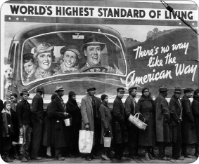

ÖNSÖZ
Değerli okur,
Tarihi değiştirenler serisinin sondan bir önceki istasyonunda tekrar buluştuk. Tarihi Değiştiren Günler başlıklı bu kitapta da bundan öncekilerde olduğu gibi çoğunlukla yakın, ara ara da uzak tarihin koridorlarında bir gezinti yapacağız. Şu ana dek geride bıraktığımız duraklarda tarihe damgasını vurmuş konuşmalarla aşka geldik, savaş cephelerinde barut koklayıp kılıç sakırtılarına kulak kabarttık, tarihi sarsan ve bazen de şekillendiren kudretli kadınların saraylarına konuk olduk, bilim adamlarıyla laboratuvarlarda sabahlayıp imparatorlarla ülkeler fethettik. Seyyahlarla yeni diyarlar keşfedip tarihimizi sarsan olayların şahidi olduk... Ve şimdi de günlerle birlikte bir yolculuğa çıkıyoruz.
Neden günler?
Hatırlayacağınız üzere Tarihi Değiştiren Olaylar’da Fransız Devrimi, Rönesans, Soğuk Savaş ve Sanayi Devrimi gibi belli bir zaman dilimine yayılan ve kademe kademe gelişerek insanoğlunun ortak tarih bilincini oluşturan olayları incelemiştik. Bununla birlikte tabii ki tarih sadece zamana yayılan gelişmelerden ibaret değil. Bilakis bazen saatler içinde olup biten olaylar da meydana geldikleri günlerle özdeşleşerek tarihteki yerlerini aldılar, alıyorlar da. İşte şimdi de bu günleri irdeleyeceğiz. Bununla birlikte, Tarihi Değiştiren Olaylar’da masaya yatırdığımız bazı başlıkları doruk noktasında oldukları günleri merkeze alarak elinizdeki kitaba konuk ettik. Ve yine bu başlıkta diğerlerinden farklı olarak, karşılaştırmalı bir Türkiye tarihi okuması da yapmaya çalıştık. Sözgelimi “Amerikalıların Ay’a çıktığı, Sovyetler Birliği’nin tarih sahnesinden çekildiği ya da İnternet’e dönük ilk çalışmaların yapıldığı günlerde Türkiye’de kimler ve hangi konular gündemdeydi?” sorularının cevabını aradık. Tüm bunlara ek olarak, tarihe mal olmuş bazı önemli günleri ve şu aralar Arap dünyasında yaşanmakta olan önemli gelişmeleri de kitabın ek bölümünde kısa da olsa bir kez daha hatırlatmak istedik.
Günleri kime ve neye göre seçtik?
Bu, bir gazeteci tarafından yazılmış popüler bir tarih kitabı. Akademisyen tarihçilerin kaleminden çıkmış bir çalışma, belki içerik açısından biraz farklı olabilirdi. Ama biz yola çıkarken, bu serinin popüler tarihe duyulan ilgiye cevap vermesini ve genel kültürümüz açısından bir boşluğu doldurmasını hedefledik. Bu vesileyle sık sık sorulan “İçeriği nasıl belirliyorsunuz?” sorusuna da cevap vermek istiyorum. 17. yılını geride bıraktığım meslek hayatım boyunca kullandığım; hem iç hem de uluslararası basında kendisine en çok atıfta bulunulan kavramları, isimleri ve olayları not ettiğim bir yol haritası var. Timaş’ın değerli editörlerinin ve kıymetli gazeteci meslektaşlarımın da katkılarıyla bu haritayı zenginleştiriyor; akabinde, konu başlıklarına göre bu haritaya bakarak kitapların içeriklerini belirliyoruz.
Ve son olarak Milliyet gazetesine teşekkür etmek istiyorum. 1950’li yıllardan itibaren yayımlanan nüshalarını internet üzerinden paylaşıma açmış olmakla hem olağanüstü bir kültür hizmeti yapmış, hem de benim gibi gazeteci yazarlara arşiv çalışmalarında büyük katkı sağlamış oluyor.
Seyahatimizin son istasyonunda buluşabilmek dileğiyle...
Ali Çimen
Şubat 2011/Prag
Avrupalı maceracı Hıristiyanlar Kudüs’e doğru yola çıkıyor
Papa II. Urban Haçlı seferlerini başlatıyor
27 Kasım 1095
“Tanrı öyle istiyor!”
Urban
Papa II. Urban belki de Ortaçağ’ın en etkili konuşmasını yapıyor ve Avrupa’daki Hıristiyanları Müslümanlara karşı savaşmaya ve onların elinde bulunan kutsal toprakları almaya çağırıyordu. Sloganıysa gayet vurucuydu: “Deus le volt!” (Tanrı öyle istiyor!)
On birinci yüzyılın sonlarında Kutsal Topraklar, yani bugünkü Filistin toprakları, Avrupalı Hıristiyanların gözünü üzerinden alamadıkları bir diyardı. Altıncı yüzyıldan beri Hıristiyan hacılar dinlerinin doğduğu bu topraklara hac yolculuğu yapıyorlardı. Selçuklu Türkleri bölgenin kontrolünü ele geçirince, onların bu bölgeye girişleri yasaklandı.
Bizans İmparatoru I. Alexius, Müslüman Türkler Bizans’ın kapılarına dayanınca Urban’dan yardım istedi. Bu, Papa’dan istenen ilk yardım değildi ama Urban açısından mükemmel bir zamanlamaya denk gelmişti. Nitekim Papalık’ın gücünü pekiştirmek isteyen Urban, Hıristiyan Avrupa’yı kendi komutasında birleştirmeye ve kutsal toprakları Türklerin elinden almaya yönelik çabasına bu sayede soyundu. Yüzlerce din adamı ve soylunun bir araya geldiği Fransa’da, Clermont konsülünde tüyleri diken diken eden bir konuşma yapan Papa, fakir olsun zengin olsun tüm Hıristiyanları birbirleriyle didişmeyi bırakmaya ve Kudüs’ü ‘kafir’ Müslümanların elinden kurtarmak için doğudaki kardeşlerine yardım etmeye çağırdı. Cazip teşvikler sunmayı da ihmal etmiyordu. Dediğine göre, Haç’ın emrinde ölen herkesin günahları bağışlanacaktı.
Çağrısı ortalığı alevlendirmeye yetti. Avrupa’daki tüm din adamları Müslümanlara karşı çıkılacak Haçlı seferi için asker toplamaya koyuldu. Urban’ın çağrısına 60 ila 100 bin civarında eli kılıç tutan Hıristiyan cevap vermişti. Tabii ki katılanların hepsinin kalbi Hıristiyanlık ateşiyle yanıp tutuşuyor değildi. Doğunun dillere destan zenginliklerinin hayaliyle başı dönen soylular da Kudüs için kılıç kuşanmakta gecikmemişti. Bu soyluların sefer boyunca tek yaptığı, hem gidişte hem de dönüşte, yol üzerinde karşılaştıkları ve kendi ‘kutsal misyonlarına’ katılmayı reddeden masumları tepelemek ve mallarına el koymak olacaktı.
Sonuç olarak Kudüs’e ulaşan toplama Hıristiyan ordusu, profesyonel İslam ordusu karşısında çok zayiat verse de, şehri kuşatıp almayı başardı. Müslümanlara ve Yahudilere dönük büyük bir kıyım yapıldı. Urban, Kudüs’ün alınmasından iki hafta kadar sonra öldü, ama son nefesini verdiğinde Hıristiyan zaferinin haberi henüz Avrupa’ya ulaşmamıştı. Hıristiyanlığa yaptığı büyük ‘katkılardan’ dolayı Urban, 1881’de Katolik Kilisesi tarafından kutsandı.
NEYİ DEĞİŞTİRDİ?
Urban’ın fitilini ateşlediği ilk haçlı seferi, takip eden iki asır boyunca yapılacak yedi seferin ilki olarak kayıtlara geçti. Haçlı seferleri aslında Avrupa’nın genişleme, büyüme devrine rastlamıştı. Bu seferlere Kudüs’ün Müslümanların elinden alınması hedefiyle bir kutsal savaş havası verilmiş olsa bile, asıl amaç yeni toprakların fethedilmesiydi. Nitekim Urban konsülde ‘Bu memleket artık sakinlerini doyurmaktan acizdir; onun için mülkü tahrip ediyor ve bitmez tükenmez şekilde birbirinizle savaşıyorsunuz’ diyerek yeni topraklara işaret etmişti. Özetle Papa Urban, Hıristiyanlarla Müslümanlar arasında şok dalgaları halen bile hissedilen düşmanlık tohumlarını ortaya saçan din adamı olarak tarihteki yerini almasıyla birlikte, aynı zamanda Hıristiyan Avrupa’nın yayılmacılığını hayata geçiren bir ideologdu da. Uzun lafın kısası, bir adam tek başına, üstelik de asırlar boyu sürecek şekilde, Batı’yla Doğu’nun birbirlerini algılama şekline damga vurmuştu.
Akılda kalanlar
- Aslında ilk Haçlı seferi fikri Papa VII. Gregarius’a aitti. Hayata geçiren kişiyse Papa II. Urban oldu.
- Kilisenin fazlasıyla dünyevi meselelere odaklandığından şikâyetçi olan Urban, Papalık’ı devralır almaz burayı tekrar daha dinî bir çizgiye çekmeye çalıştı. Siyasi olduğu kadar kutsal bir misyon da yüklediği haçlı seferi de bu görüşüne hizmet etti.
- Urban’ın sefer çağrısı, özellikle Fransa’daki Hıristiyanları hedefliyordu. İspanya’daki Hıristiyanların ülkelerinde kalıp Endülüs Müslümanlarıyla savaşmaları istenmişti.
- Papalık’ın teşvikiyle gerçekleştirilen bütün Haçlı seferleri, 11–13. yüzyıllar arası Anadolu’da ve kutsal mekânların bulunduğu Kudüs’te Batı’nın hükümranlığını kurmak için düzenlendi. Bu seferlere katılanların zırhlarının ve silahlarının üzerine işlenen haç işareti, seferlere de adını verecekti.
Doğu Roma’nın başkenti Müslümanların eline geçti
Fatih Konstantinopol’ün aşılmaz surlarını aştı
29 Mayıs 1453
“Asya steplerinden kopup gelen ikinci İslami dalga
Ortaçağ’ı silip süpürdüğünde, en büyük ödülleri, kırmızı
elmaları Konstantinopol’dü. Şehir neredeyse bin yıl
boyunca her 40 yılda bir işgalden kurtulmayı başarmıştı.
Ta ki II. Mehmed’e dek. Zafere susamış 22 yaşındaki bu
sultan, 1453 Nisanı’nda şehir duvarlarına dayandığında,
askerleri gökteki yıldızlar kadar sayısızdı...”
Roger Crowley
(Tarihçi)
Roma İmparatoru Constantine, Doğu ve Batı kültürlerinin birleştiği noktada ve kolay savunulabilir bir konumda olması nedeniyle Roma’nın başkentini 324’te Byzantium’a taşımış, şehrin adını da Nova Roma’ya (Yeni Roma) çevirmişti. Ölümünün ardından şehir Konstantinopol adını aldı ve on beşinci yüzyıla kadar Batı Akdeniz’de Hıristiyanlığın ve Batı medeniyetinin bayraktarlığını yapan Bizans İmparatorluğu’nun kalbi oldu.
Bu günler aynı zamanda Osmanlı İmparatorluğu’nun da baş döndürücü hızla genişlediği günlerdi. İmparatorluğun asıl büyük zıplamayı yapması için önünde önemli bir engel daha vardı: Bizans İmparatorluğu. Zamanla parçalana parçalana eski haşmetinden uzak düşmüş olan Bizans, Müslüman Türkler kapısına dayandığında Boğaz’ın kenarına yayılmış başkentine sıkışıp kalmıştı. Şehrin parlak beyinleri, özellikle o zamanlarda yeni yeni filizlenen Rönesans dalgasına kapılarak İtalya’ya gitmişti. Yanı başında yükselen Müslüman Osmanlı, Anadolu’dan aldığı güçle şahlanırken; Hıristiyan Bizans dibe doğru yuvarlanıyordu. 1452’de Osmanlı İmparatoru II. Mehmed, bu şehir imparatorluğa son darbeyi vurmak için kolları sıvadı. Boğaz’a koca bir kale inşa ettirdi. Deneyimli ve devasa bir ordu topladı. Bizans’ın müttefikleri Macaristan ve Venedik’in tarafsız kalmasını sağladı. Şehri daha önce defalarca kuşatmış olmasına rağmen her defasında efsane savunma surlarına takılıp kalan Arapların aksine, Osmanlılar top kullanma konusunda hünerliydi. Müslüman Türkler, 1453 yılının Nisan ayında başlayan 54 günlük kuşatmanın ardından, 29 Mayıs 1453’te toplarıyla uzun uzun dövdükleri surları aşarak nihayet Hıristiyanların bu önemli başkentine girmişlerdi. Bizans imparatoru bu çatışmada öldü, büyük kiliseleri Ayasofya ise camiye dönüştürüldü. II. Mehmed, artık Fatih Sultan Mehmed’di.
NEYİ DEĞİŞTİRDİ?
Konstantinopol’ün düşüşü Ortaçağ’ın bitişi de oldu. Avrupa’da yeni bir sayfa açıldı. Bizans alim ve sanatçılarının birçoğu İtalya’ya kaçarak ileride tüm kıtanın çehresini değiştirecek Rönesans hareketinin beyin takımına katıldı. Tabii hepsi kaçmamıştı. Kalanlar Fatih’in sarayında görev alarak Osmanlı Rönesansı’nın tohumlarını attı.
Bizans’ın yıkılmasının ardından siyasi mirasını, kendisini III. Roma olarak isimlendiren Çarlık Rusyası sahiplendi. Ortodoks Kilisesi’nin liderliği de yine Rusya’ya gitti.
Bizans’ın Batı’dan kopmasıyla Karadeniz’e çıkışını ve Asya’yla olan kara bağlantısını kaybeden Avrupa, biraz da zorunluluktan, coğrafi keşifler yoluyla yeni dünyalara açıldı. Bu keşifler, hem Avrupalı güçlerin hem de bununla bağlantılı olarak dünyanın çehresini değiştirecekti.
Fatih’in Konstantinopol’ü fethi, Müslüman Türklere ihtişam ve prestij kazandırmış; Osmanlı, uluslararası arenada ilk kez İmparatorluk olarak tanınmaya başlanmıştı.
Akılda kalanlar
- Bizde bilinen yaygın ve yukarıda dile getirdiğim kanaatin aksine, Avrupalı tarihçilerin birçoğu Konstantinopol’ün fethinin ‘çağ açıp çağ kapamadığına’, fetihten önce zaten İtalya’da Rönesans’ın adımlarının atıldığına inanır. Bu görüşe göre Avrupa o yıllarda denizcilik ve haritalama konusunda durdurulamaz bir ivme kazanmıştı ve fetih, sadece olacak olanları biraz daha hızlandırmış oldu.
- II. Mehmed, Konstantinopol’ün Roma İmparatorluğu’nun 330’da Roma’dan İstanbul’a taşınan başkenti olmasından hareketle, sıfatları arasına Kaiser-i Rum (Doğu Roma İmparatoru) unvanını da ekledi.
- Konstantinopol’ü daha önceden Mesleme bin Abdülmelik ve Emevi Halifesi Muaviye’nin oğlu Yezit’in komuta ettiği Müslüman ordular dörder yıl kuşatsalar da almayı başaramamışlardı.
- Bin yüz yıllık tarihe sahip Konstantinopol onlarca defa kuşatılmasına rağmen, ilkinde Haçlı Ordusu, ikinci ve son keresinde de Osmanlılar tarafından olmak üzere sadece iki kez ele geçirilebildi.
- Bizans imparatorları kızgın kömür, kükürt ve zift karışımından oluşan ve Yunan Ateşi olarak bilinen tarihin ilk kimyasal silahıyla Konstantinopol’ü asırlarca işgallere karşı korudu.
İnebahtı: Osmanlı denizde battı
7 Ekim 1571
“Türklerin yenilmez olduğu konusunda, bütün ülkelerin
yanıldığı gün... Hıristiyanlığın en hayırlı günü”
Cervantes
(İnebahtı’nda yaralanan İspanyol yazar)
Muhteşem Süleyman’ın idaresi altındaki Müslüman Türkler; Arabistan yarımadası, Suriye, Irak, Mısır, Kuzey Afrika’da fırtına gibi esiyor, Karadeniz’in kuzey kıyılarına yerleşiyor, Avrupa’ya korku salıyorlardı. 1526’da Macar savaşçıları Mohaç meydanına gömülmüştü ve Müslümanların ilerleyişini durduracak tek güç olarak Habsburg Hanedanlığı vardı. 1529’da Viyana işgalden son anda kurtulmuş, Türkler uzun süren kuşatmadan eli boş dönmüştü. Ama bu onları durduramayacaktı.
Bir süre sonra gözlerini Malta’ya diktiler. 30 bin asker ve 181 gemiden oluşan donanmayla adanın kapısına dikildiler. Hedef, Akdeniz’in kalbindeki bu stratejik noktayı alarak tüm Hıristiyan Avrupa gemilerini Akdeniz’den sürmek ve deniz hatlarıyla ticaret rotalarının kontrolünü ele geçirmekti. Denizlerdeki hâkimiyetleri ve ekonomik güçleri sayesinde tüm Avrupa önlerinde diz çökecekti. En azından plan buydu...
Batılılar İnebahtı’nda donanmasını denize gömerek özgüveni zirvelerde gezen Osmanlı’ya iyi ve pahalı bir ders vermişlerdi ama Sokullu’nun da dediği gibi bu, kesilen sakalın yerine daha gürünün çıkmasına engel olamayacaktı.
1565’te Kanuni’nin emriyle Osmanlılar Malta’ya yüklendi, lakin destansı bir kuşatma savaşına rağmen Malta Şövalyeleri tarafından geri püskürtüldüler. Osmanlı soluklanmak için bir süre durdu.
1566’da Avrupa’daki ruhani liderlikte devir teslim yaşandı. Yeni papanın adı V. Pius’du. Sofuluğuyla dikkat çeken ve 16 yıl boyunca felsefe ve teoloji öğreten Katolik dünyasının bu yeni lideri, diğerlerine nazaran daha alçakgönüllü ve içe dönük bir karakterdi. Bir başka özelliğiyse, Hıristiyanlığı Osmanlı Türklerine karşı koruma konusunda oldukça ciddi olmasıydı. Türklerin Avrupa’yı rahat bırakmayacaklarını biliyordu. Viyana ve doğu sınırları sürekli bir tehdit altındaydı. İtalya’da, Papalık’a bağlı bulunan küçük devletçikler de yakında tehlikeye düşebilirdi.
Süleyman’ın varisi II. Selim’in emri üzerine 1571’de Kıbrıs’ın alınmasıyla Vatikan’da alarm zilleri çalmaya başladı. Zira Osmanlı donanması bu kez doğrudan Venedik’i gözüne kestirmişti. Pius’un çağrısıyla Akdeniz’deki Hıristiyan güçler, Osmanoğulları’nın Akdeniz’de giderek artan etkinliğini budamak için devasa bir ordu toplamaya başladı. Sicilya Adası’nın Messina limanında Temmuz ve Ağustos aylarında toplanan ve İspanya, Malta, Cenova, Papalık devletçikleri ve Savoy’dan gemilerin oluşturduğu Kutsal İttifak donanmasına Avusturyalı Don John komuta ediyordu. Avrupalıların duasını ve Papanın manevi gücünü arkasına alan 212 gemilik bu donanma Akdeniz’e açıldı. Taraflar kozlarını paylaşmak için Yunanistan açıklarındaki Patras Körfezi’nde karşı karşıya geldi.
Vatikan arşivlerine göre 7 Ekim 1571 sabahı Pius ve havarileri Santa Maria Maggiore Bazilikası’nda Katoliklerin zaferi için dua ediyorlardı. İki devasa ordu Akdeniz’de birbirlerine ateş yağdırdığı esnada Pius yakarışlarına devam ediyordu. Yine kayıtlara göre gün ortalarına doğru kardinalleriyle yaptığı görüşmeye ara verdi ve ellerini kaldırarak “İşlere ara verin! Şimdi yapmamız gereken asıl iş, Katoliklere verdiği bu zafer için Tanrı’ya şükranla dua etmektir.” diyecekti.
Papa’ya galiba malum olmuştu. Zira dört saat süren savaşın ardından Ali Paşa komutasındaki Osmanlı donanması tam anlamıyla hezimete uğradı. Kutsal İttifak 50 gemisini ve 13 bin askerini kaybetti. Buna karşılık neredeyse aynı sayıda köle, Osmanlı donanmasındaki gemilerden kurtarılmıştı. Osmanlılar 25 bin civarında ölü ve yaralı vermiş, 3 bin 500 denizcisi de esir düşmüştü. Ayrıca 210 gemi kaybetmiş, bunların 130’u düşman tarafından ele geçirilmişti.
7 Ekim 1571; Osmanlı için kara, Avrupalılar içinse gururla anacakları bir gün olarak tarihe geçiyordu...
NEYİ DEĞİŞTİRDİ?
İnebahtı Savaşı, 16. yüzyılın ve tarihin en büyük deniz savaşlarından biri olarak zihinlerde yer etmiş olsa da, bu zaferin Avrupa açısından stratejik sonuçları olmadı. 1573’te denizlerde tamamen tükenen Venedik; Osmanlı’yla mücadelesinde pes etmiş, Kıbrıs tamamen Osmanlı denetimine girmiş, 1574’te Türkler, La Goulette ve Tunus’ta zafer kazanmışlardı. Buna rağmen İnebahtı, Türk gücünün büyüsünü bozması sebebiyle zihinlerde yer etti. 1580’li yıllardan sonra, muazzam Osmanlı donanması kendiliğinden çözülme sürecine girecekti. Bununla birlikte Haçlıların bu zaferi, dönemin ünlü ressamları Titian, Tintoretto ve Veronese’nin tablolarına ilham kaynağı olacak kadar moral aşılamıştı Avrupalılara. Zafer, yüzyıllardır Avrupa’da giderek büyümekte olan Türk korkusunu az da olsa dindirmiş, aynı savaşta Türklere karşı çarpışmış olan ünlü İspanyol yazar Cervantes’in de işaret ettiği gibi, Türklerin de ‘yenilebilir’ olduğunu göstermişti. Avrupa’daki Hıristiyanlığın kriz anında gelen bu zafer, Hıristiyanların kendine güvenini arttırmış ve Osmanlı’nın denizler üzerinden Batı’ya doğru genişlemesine bir süreliğine de olsa sekte vurmuştu.
Akılda kalanlar
- Osmanlı donanması yeteri kadar hazırlanmadan yola çıktı. Özellikle Pertev Paşa’nın asker ve kürekçilerin eksik olduğuna dair uyarıları dikkate alınmadı. Paşa, İnebahtı limanında kalınmasını ve savunma savaşı yapılmasını önermişti.
- Donanma darmadağın olsa da sadece Uluç Ali Paşa’nın kumandasındaki sağ kanat hiçbir kayba uğramadı ve üstelik düşmana da bir hayli zayiat verdirdi. Uluç Ali Paşa, bu başarısının ardından Kaptanıderyalığa getirildi ve ‘Kılıç Ali Paşa’ olarak anılmaya başladı.
- Osmanlı kaynaklarında ‘Sıngın’ olarak da geçen savaşta, Müezzinzâde Ali Paşa gibi birçok değerli Osmanlı paşası ve beylerbeyi de öldüğü için komuta kademelerindeki yetişmiş insan gücü sekteye uğradı.
- İmha olan donanma yerine yenisinin yapılmasını isteyen Sokullu Mehmed Paşa, mazeretler dile getirilmesi üzerine tarihe geçen sözünü söylemişti: “Devletin servet ve kudreti o derecededir ki, gerekirse donanmanın demirlerini gümüşten, halatlarını ibrişimden, yelkenlerini atlastan yapabilir.”
- Sokullu’nun savaşın ardından görüştüğü Venedik elçisine hitaben tarihe geçen bir başka vecizesi de şöyle oldu: “Biz Kıbrıs’ı almakla sizin kolunuzu kestik, siz İnebahtı’nda bizi yenmekle sakalımızı tıraş ettiniz. Kesilen kolun yerine yenisi gelmez, fakat kesilen sakal daha gür çıkar.”
Osmanlıların Avrupa içlerine ilerleyişi dramatik bir şekilde sona eriyor
İkinci Viyana Kuşatması/Bozgunu
12 Eylül 1683
“Osmanlılar kaçarken öyle çok barut ve cephane bıraktı ki,
bir milyon askere yeter”
Polonya Kralı Sobieski
Polonya Kralı Jan III. Sobieski, Viyana yakınlarındaki Kahlenberg tepelerindeki şapelde ellerini açıp Tanrı’ya yakarıyordu “Beni Türklere karşı muzaffer kıl” diyerek. Tanrı, bu kez, savaşma bilinci daha yüksek ve daha iyi hazırlanmış Hıristiyanların sesini duyacaktı. Öğleden sonra Sobieski’nin komutasındaki Polonyalı süvariler, ölüm olmuş, yeniçerilerin üzerine yağıyordu adeta. Viyana’yı ikinci kez kuşatmış olan Osmanlılar, bir anda kendilerini kuşatma altında bulmuş, panik içinde dağılmışlardı. Kan oluk oluk aktı, atlar dizlerine dek kan deryasına battı. Kral Sobieski, ertesi gün Viyana Kuşatması’nın komutanı Merzifonlu Kara Mustafa Paşa’nın çadırından karısına yolladığı mektupta, “Osmanlılar kaçarken öyle çok barut ve cephane bıraktı ki, bir milyon askere yeter” diyecek ve Osmanlı kampını “neredeyse Varşova kadar büyük” şeklinde tanımlayacaktı. Kral, Osmanlıların geride bıraktığı yeşil bayrağı Papa’ya göndermeyi de ihmal etmedi, üzerine de özellikle ‘Veni, Vidi, Deus Vicit’ yazmayı da unutmamıştı: “Geldim, gördüm ve Tanrı mağlup etti.”
O zamana kadarki bilinen en büyük atlı hücuma sahne olan II. Viyana Kuşatması’nda Osmanoğulları, 150 bin ila 300 bin kadar askerle çıktıkları bu seferde geride 15 bin şehit bırakmışlardı. Getirdikleri 300 topun hepsi imha olmuştu. İmha olanlar arasında ‘Büyük Türk’ imajı da vardı...
Viyana bozgununun bedelini kellesiyle ödeyen Kara Mustafa Paşa’nın başı gümüş tepsi içinde padişaha yollanırken, tarihin ibresi de Osmanlı’nın aleyhine dönmeye başlıyordu...
NEYİ DEĞİŞTİRDİ?
Viyana bozgunuyla başlayan Osmanlı geri çekilmesi, 1918’e yani imparatorluk ilk dünya savaşında hezimete uğrayıp dağılana dek sürdü.
Kuşatmanın ardından Osmanlılar 16 yıl daha ümitsizce savaşmaya devam etti. 1699’daki Karlofça (Karlowitz) Antlaşması’yla sona erecek bu süreçte Macaristan ve Transilvanya da ellerinden uçup gitti. Avusturya başat bir güç olarak sivrilmeye başladı. Bu bozgunla başlayan süreçte Avusturya ve Rusya, Avrupa’da Osmanlı’nın belalısı olarak sahne aldı. Kuşatmanın başlıca değiştirdiği şeyse, Avrupalıların zihinlerine yer etmiş ‘yenilmez Türk’ algısıydı. Görmüşlerdi. Onlar da yenilebiliyordu. Üstelik artık hep yenileceklerdi de...
Akılda kalanlar
- Osmanlılar, çok uluslu bir Hıristiyan güçle savaştı. Avrupa’nın kalbinde verilen bir din savaşı olduğu, hatta Hıristiyanlığın kaderi söz konusu olduğu için Avrupalı Hıristiyan güçler Papanın çağrısıyla tek vücut olmayı başarabilmişlerdi.
- Bazı tarihçiler kuşatmanın başarısız olmasını, Kara Mustafa Paşa’nın ‘ganimet sağlam olsun’ mantığıyla şehri fazla tahrip olmadan ele geçirme isteğine ve bunun için de ‘topyekün saldırı’ emri vermemesine bağlasa da, Kırım Hanlığı’yla Moldovya ve Transilvanya beylikleri gibi müttefiklerinin söz verdikleri desteği vermemesi sonuçta etkili olmuştur.
- Fiyaskoyla sonuçlanan kuşatma Kara Mustafa Paşa’yı kellesinden ederken, Sobieski’nin kellesiniyse paha biçilmez hale getirmişti. Zaferinin ardından Türkler tarafından ‘Leh Aslanı’ olarak isimlendirilen Sobieski, Papa tarafından da ‘Avrupa Hıristiyanlığının kurtarıcısı’ övgüsüne mazhar olmuştu.
- Her 12 Eylül’de Hz. Meryem’i anmak için kutlanan ‘Meryem’in Kutsal Adı Yortusu’, Viyana zaferini şereflendirmek isteyen Papa XI. Innocent’ın emriyle Roman Katolik Kilisesi’nin takvimine 1684’ten itibaren dâhil edildi.
- Kuşatma öncesi pide gibi düz hazırlanan “Croissant” (krosan), Viyanalı fırıncılar tarafından kuşatma sonrası kahraman Polonyalı Kral Sobieski’ye Osmanlı Sancağı üzerindeki hilali andıran şekli ile sunulmuş, ardından da tüm Avrupa’ya “Viyana Çöreği” (Viennoiserie) olarak yayılmıştı.
- Efsaneye göre kaçan Osmanlı ordusunun geride bıraktığı kahve çekirdekleriyle dolu torbalar bulunmuş, Sobieski bu torbayı subayı ve çevirmeni George Franz Kolschitzky’e vermiş, o da sonraları çok meşhur olacak Viyana kahvehanelerinden ilkini kurmuştur. Tabii bu tatlı söylentiyi destekleyen bir veri olmadığını da ekleyelim.
- Bir efsane de müzikle ilgili. Yine derler ki, panik içinde kaçan Osmanlı ordusunun geride bıraktıkları arasında, muhtemelen mehteran ekibine ait olan simballer, kös davulları ve üçgen ziller bulunuyordu. İşte Batı’nın bu enstrümanlarla tanışması da böyle olmuştu. Her ne kadar koca Osmanlı ordusunun, bir ‘zili’ bile geride bırakacak kadar panik içinde kaçtığına inanmak zor da olsa, bunu da not etmeden geçmeyelim.
Kitleler eşitlik diye ayaklandı; dünya değişti
Fransız Devrimi patlak veriyor
14 Temmuz 1789
“Fransız Devrimi’ni kibir gerçekleştirdi;
özgürlük sadece kılıfıydı.”
Napolyon Bonapart
1789 yazında Fransa dörtnala devrime koşuyordu. O yıl peş peşe yaşanan kıtlıklar halkı çileden çıkarmış, açlıktan nefesi kokmaya başlayan ahali krala diş bilemeye başlamıştı. Fransa için sıkıntılı günlerdi. Yedi Yıl Savaşları’yla Kuzey Amerika’daki tüm sömürgelerini kaybettiği gibi, bu savaş sonucu hazinesi de kurumuştu. Taze kaynak arayan iktidar, akla ilk geleni yaptı ve yeni vergiler saldı, mevcut olanları arttırdı. Kral XVI. Lui, soyluları toplayıp toprak mülkiyeti üzerinden vergi alacağını söyleyince soylular huysuzlandı. Parlamentonun toplanmasını istediler. Parlamento; soylular, din adamları ve köylü ve tüccar sınıfından seçilen üç ayrı kamaradan oluşuyordu. Bunların kendi aralarındaki uçurum da cabasıydı. Sistemin tüm yükünü neredeyse halkın çoğunluğunu oluşturan köylüler çekiyordu. Vergi veriyor, askerlik yapıyor, soyluların ve din adamlarının topraklarında çalışıyorlardı. Üstelik hiçbir hakka da sahip değillerdi. Bununla birlikte Sanayi Devrimi ülkedeki orta sınıfın önünü açmıştı. Daha sonradan burjuva adını alacak olan bu zengin tüccar sınıf, elindeki ekonomik güçle paralel siyasi gücü olmamasından fena halde rahatsızdı. Fransa’da her şey kraldan soruluyordu. O da iktidarını, lütfederse, sadece kilise ve soylularla paylaşıyordu. Üstelik bu iki sınıfın vergi için eli cebine gitmezdi. Bütün yük, orta direği oluşturan köylüler ve tüccarların sırtındaydı. Zamanla tüccarlar, köylülere “Yahu neden bütün yükü biz çekiyoruz, diğerleri de vergi versin” deyince saatli bomba tıklamaya başladı. Böylelikle bu iki sınıf, krala başkaldırdı ve yeni bir anayasa, vergi indirimi, gümrük duvarlarının kaldırılması ve daha fazla siyasi ağırlık gibi taleplerle sokaklara döküldüler. Kral, bu taleplere kulaklarını tıkadı. Başına gelecekleri tahmin etse, bunu asla yapmazdı.
Öfkeli kalabalık ve onlara destek veren isyancı ordu birlikleri, monarşinin zulmünü sembolize eden ve monarşi karşıtlarının tutulduğu Bastil (Bastille) Hapishanesi’ni bastıklarında, takvim yaprakları 14 Temmuz 1789’u gösteriyordu. Baskın basanın oldu. Hapishane ele geçirildi, tutuklular serbest bırakıldı. Bu olay, Fransız Devrimi’nin fitilini ateşlemişti. On yıl sürecek olan ve nihayetinde kralın ve ekmek bulamadıkları için sızlanan kalabalık için “O halde pasta yesinler” dediği rivayet edilen sevgili karısı Marie Antoinette’in de aralarında bulunduğu onbinlerce kişinin kellesinden olduğu siyasi kriz ve terör dönemi işte böyle başlamıştı. Devrimin hemen ardından başlayan kaos döneminden sonra 1792’de Cumhuriyet ilan edildi. Ardından devrim mahkemeleriyle cumhuriyet karşıtlarının kellesi giyotinle tanışmaya başladı. İşte o andan itibaren Fransa, akıl almaz bir rejim değişikliği trafiği yaşayacaktı. Devrimi takip eden 75 yıl boyunca, sırasıyla cumhuriyet, diktatörlük, anayasal monarşi ve imparatorluk rejimiyle yönetilerek baş döndürücü bir trafik sergilemişti.
“Özgürlük, eşitlik, kardeşlik!” sloganlarıyla sokaklara dökülen Fransızlar, monarşiyi alaşağı ettikleri gibi, kibritini çaktıkları milliyetçilik ateşiyle de, bir bakıma dünya üzerindeki diğer imparatorlukların dibine de dinamit yerleştiriyorlardı...
NEYİ DEĞİŞTİRDİ?
1789’da başlayıp 1790’da biten devrimin ilk dalgasında, Fransız vatandaşları ülkelerinin siyasi manzarasını değiştirdi, asırlardır devam edegelen monarşi ve feodalizm gibi kurumları ortadan kaldırdı (Her ne kadar sonradan Napolyon monarşiyi canlandırsa da). Kendisinden önceki Amerikan Devrimi gibi, Fransız Devrimi de aydınlanmacı fikirlerden, özellikle millî hâkimiyet ve devredilemez insan hakları gibi kavramlardan etkilendi. Devrim başlangıçtaki hedeflerinin hepsini hayata geçiremeyip kısa sürede kan banyosu yapılan siyasi bir ortam doğursa da, modern ulus kavramının ortaya çıkmasında büyük rol oynadı. ‘Özgürlük, eşitlik, kardeşlik!’ (Liberty, Equality, Fraternity) düsturuna yaslanan Fransız Devrimi, insanoğlunun doğuştan gelen inkâr edilemez haklarına yaptığı vurguyla, insanın kendi kaderini kendisinin tayin etmesi fikrini pekiştirdi. Bu haliyle, aralarında Osmanlı’nın da bulunduğu çok uluslu imparatorlukların dönüşme ve dağılmasındaki önemli faktörlerden biri oldu. Bunu biraz daha açalım isterseniz.
Fransızlar devrimle ülkelerindeki mutlak monarşiyi yıktıkları gibi, ‘egemenliğin halka ait olduğu’ fikrini de tescil ettirdi. Sonuç olarak milliyet, eşitlik, hürriyet, adalet gibi ilkeler tüm dünyaya yayıldı. Bununla birlikte devrimin Osmanlı için hem olumlu hem de olumsuz yansımaları olmuştu. Her ne kadar Osmanlı, Fransa’da yanan bu ateşe başta kayıtsız kalsa da, ateş bir şekilde sınırlarımıza dayandı. Devrimin yukarıda bahsettiğimiz prensipleri dünya genelinde benimsendikçe, Osmanlı da vatandaşlık haklarının korunması, yargı güvencesi, din ayrımı yapılmaksızın herkesin kanunlar önünde eşit kabul edilmesi gibi ilkeleri benimsedi. Demokrasi fikrinin bu topraklarda kökleşmesinde Fransa’da yaşanan bu deneyimin büyük katkısı oldu. Sosyal hayatı zamanın ruhuna uydurmak ve bir yandan da saltanat üzerindeki baskıyı hafifletmek için hayata geçirilen Tanzimat Fermanı ve ülkemizin ilk anayasası olarak bilinen Kanun-i Esasi’nin kabulünde Bastil’i basanların izini de görmek mümkün…
Diğer yandan devrimle beraber, ‘millet’ kavramının cazibesi daha da arttı. Milliyetler konuşulmaya başlanınca da, doğal olarak milletler üstü bir siyasi kimlik olan imparatorluklar için de çanlar çalmaya başladı. Milliyetçilik akımının şahlanmasıyla 19. yüzyıl Osmanlı açısından ‘Ayaklanmalar Yüzyılı’ oldu ve imparatorluk çatırdamaya başladı…
Fransız Devrimi’nin en önemli sonuçlarından biri Fransa’nın saldırgan bir dış politika benimsemesi oldu. Önce 1792’den 1803’e dek süren ve Fransa’daki yeni rejimi korumak ve diğer Avrupa monarşilerine de yaymak adına yapılan Fransız Devrimi Savaşları’yla, ardından da Fransız Devrimi’yle sahneye çıkıp sonrasında da sahneyi ele geçiren Napolyon’un ihtiraslarıyla alevlenen Napolyon Savaşları’yla Fransa dünyaya kan kusturdu.
Akılda kalanlar
- Montesquieu, Didero, Voltaire ve özellikle yazdığı ‘Sosyal Mukavele’ (Contrat Social) isimli eserinde, insanın hür olarak doğmasına rağmen her yerde zincire vurulduğunu, hakları çiğnenenlerin haklarını geri almak için ihtilal yapmaya hakları olduğunu vurgulayan Jean Jacques Rousseau gibi aydınlanmacı fikir adamları, devrimin entelektüel zeminini hazırladı.
- 40 bin kadar kellenin giyotinle kesildiği 1793–1794 yılları arasındaki dönem, tarihe Terör İktidarı olarak geçti. Bu dönemde yeni rejime muhalif olmak değil, muhalefeti aklından dahi geçirmek ölüm sebebiydi.
- Devrimin ardından sivrilen ve Fransız Devrimi Savaşları’nda Fransa’yı zaferden zafere taşıyan Napolyon Bonaparte, zamanla ülkenin mutlak hâkimi oldu.
- Fransa’nın ikinci büyük şehri Lyon, cumhuriyete karşı direndi. Uzun süre kuşatılmasına rağmen pes etmeyen şehir nihayetinde teslim bayrağını çekti, isyancılar idam edildi ve ceza olarak da şehrin adı değiştirildi: Ville-affranchie (özgürleştirilmiş şehir).
- Benzer bir uygulamadan Marsilya da nasibini aldı ve adı ‘La Ville-sans-nom’ (isimsiz şehir) olarak değiştirildi.
Fransız İmparatorluğu fikri buharlaşıyor
Waterloo’da Napolyon’a son darbe
15 Haziran 1815
“Waterloo Savaşı’nın kaybedilmesi
Fransa’nın kurtuluşu olmuştur.”
Thomas Jefferson
(Amerika’nın 3. Başkanı)
Napolyon’un Belçika’nın Waterloo meydanında Wellington Dükü karşısında hezimete uğramasıyla Avrupa tarihindeki Napolyon dönemi kapanmış oluyordu. Avrupa tarihinin en parlak asker imparatorlarından Korsika doğumlu Napolyon, 1790’larda Fransız Devrim Ordusu’nda hızla yükselmişti. 1799’da devrimin itici gücüyle şaha kalkan Fransa, Avrupa’nın çoğuyla savaş halindeydi.
Mısır seferinden dönen Napolyon, ulusu çöküşten kurtarmaya kararlıydı. 1800’de Birinci Konsül olmasının ardından orduyu toplayıp Avusturya’yı mağlup etti. 1802’de bir tür hukuk sistemi olan Napolyon Kodu’nu hayata geçirdi ve nihayet 1804’te Notre Dame Katedrali’nde imparatorluk tacını giydi. Şimdi büyük hayallerini hayata geçirmesinin önünde engel kalmamıştı. 1807’ye gelindiğinde kuzeyde Elbe Nehri’nden güneyde İtalya’ya, Pirenelerden Dalmaçya kıyılarına kadar uzanan bir imparatorluğa hükmediyordu. 1812’den itibaren işler ters gitmeye başladı. Önce Moskova’da yüzüne şamar gibi inen bir hezimet, ardından da İspanya’yı kaybetmesi geldi. Bir de bunlara 1814’te Birleşik Avrupa gücü karşısında yaşadığı utandırıcı mağlubiyet eklendi. Karizması fena halde örselenen ve gözden düşen imparator, Elbe Adası’na sürgün edildi. Ama pes etmeye niyetli değildi. Adadan kaçtığı gibi soluğu Paris’te aldı ve geride bıraktığı adamlarıyla yeni bir rejim kurdu. Napolyon’dan çok çekmiş olan Avrupalılar tekrar ortak bir ordu kurma hazırlıklarına başladı. Napolyon’sa, kurduğu büyük bir orduyla Belçika’ya yürüdü. Amacı, düşman toparlanmadan hepsini birer birer ortadan kaldırmaktı. 16 Haziran 1815’te Prusyalıları mağlup etti. Ardından 72 bin kişilik ordusuyla, İspanya’yı elinden alan Wellington Dükü’yle kozlarını paylaşmak için Belçika’ya, Waterloo’ya yürüdü ve orada kaldı. Ağır bir mağlubiyet daha aldı. Bu sonuncusuydu. Napolyon efsanesi Waterloo’nun çamurlu topraklarına gömüldü gitti.
Paris’e dönen Napolyon, tahtını oğluna bıraktı. Karşı devrimci güçler kendisini ortadan kaldırmadan ülkeden ayrılmak istiyordu. Amerika’ya gönderilme umuduyla sığındığı İngilizler, onu Afrika’nın Atlantik kıyılarına yakın Saint Helena Adası’na sürgüne yolladı. Hayatının geri kalanını burada gözlerden uzak geçirdi ve 1821’de, 51 yaşındayken öldü. Naaşı Paris’e getirildi ve büyük bir merasimle Invalides Katedrali’ne defnedildi.
NEYİ DEĞİŞTİRDİ?
Waterloo’da tek yenilen Napolyon değildi. Onunla birlikte ‘Tüm Avrupa’yı kapsayan bir Fransız İmparatorluğu’ fikri de buruşturulup tarihin çöplüğüne atılmıştı. Napolyon tehdidinin bertaraf edilmesi için toplanan Viyana Kongresi’nin amacı, Avrupa’yı Fransız İhtilali’nden önceki durumuna geri döndürmek ve hatta Fransa’nın başına da bir kral oturtmaktı. Ama tarihi başa sardırmak imkansızdı. Fransa’ya karşı savaşan Rusya, Finlandiya’yı ve Polonya’nın büyük bir kısmını aldı. Alman devletçikleri bir konfederasyon oluşturdu. Bu konfederasyon, iki nesil geçmeden büyük bir imparatorluğa dönüşecek ve Napolyon’un imparatorluğunun yerini dolduracaktı. Fransa’yı alt eden İngiltere ise o dönem için dünyanın tek süper gücü oldu ve bu konumunu yüzyılın sonuna kadar devam ettirdi. Waterloo’dan en kazançlı çıkan İngilizler olmuştu. Fransız devriminin idealleri -özgürlük, eşitlik ve kardeşlik- bir asırdan daha fazla süre etkisini sürdürmeye devam etti.
Akılda kalanlar
- Napolyon, Waterloo’da birleşik İngiliz, Hollanda ve Alman güçlerine karşı savaştı.
- Waterloo’daki mağlubiyet, 1792’de Fransız Devrimi Savaşları ile başlayan, arada Napolyon’un 11 aylık sürgünüyle kesilen ve 1803’te başlayan Napolyon Savaşları’yla devam eden 23 yıllık savaşlar serisinin de sonu oldu.
- Napolyon’un Waterloo’da uğradığı hezimet, aynı zamanda imparatorun ‘100 Gün’ olarak tarihe geçen parlak kariyerinin son bölümüne de nokta koydu.
Aynı günlerde Osmanlı’da...
Napolyon’un kendine dünya imparatorluğu kurmaya çalıştığı günlerde Osmanlı İmparatorluğu, Sultan II. Mahmud’un iktidarını yaşıyordu. Sultan Mahmud, bir yandan ‘Avrupa’nın hasta adamı’ damgası yemeye doğru ilerleyen Osmanlı devlet mekanizmasını iyileştirmeye çalışıyor, bir yandan da Fransız Devrimi’nin rüzgârıyla bağımsızlıkları peşinde koşan devletçiklerle uğraşıyordu. Avrupa’nın Napolyon’la boğuştuğu 1815’te Osmanlı, Miloş Obrenoviç’in liderliği altında ikinci kez ayaklanan Sırplar ve onlara destek veren Ruslarla mücadele ediyordu.
Amerika’yı ABD yapan, köleliği kaldıran savaş
Amerikan İç Savaşı başlıyor
12 Nisan 1861
“Kölelik olmasa iç savaş olmazdı. Kölelik olmasa,
bu kadar uzun sürmezdi.”
Abraham Lincoln
(ABD Başkanı/1862)
1861 baharıydı. Yaklaşık bir asır kadar önce İngiliz sömürgesi olmaktan kurtulan Amerika Birleşik Devletleri’nin kuzeyiyle güneyi arasındaki gerginlik elle tutulur seviyeye gelmişti. Eyaletlerin merkezî yönetim karşısındaki hakları, batıya doğru genişleme ve hepsinden de önemlisi köleliğin geleceği gibi konular konusunda şiddetli bir fikir ayrılığı yaşanıyordu. Köleliğe hücrelerine kadar karşı olan ve köleliği kaldıracağını vaat eden Cumhuriyetçi Abraham Lincoln’ün 1860’da başkan seçilmesi, köleliğe dayalı tarım ekonomisiyle ayakta duran güney eyaletlerinden yedisini ayaklandırdı.
South Carolina, Mississippi, Florida, Alabama, Teksas, Georgia ve Louisiana bağımsızlıklarını ilan edip, Amerika Konfedere Devletleri’ni kurduklarını açıkladılar. 12 Nisan 1861’de güney birliklerinin Charleston limanını ele geçirmesiyle savaş başladı. Ardından Arkansas, Virginia, North Carolina ve Tennessee de ayaklanarak konfederasyona katıldı. Dört yıl süren iç savaş, Bull Run (Manassas), Antietam, Chancellorsville, Gettysburg ve Vicksburg’daki akıl almaz çarpışmalarla komşuyu komşuyla, hatta kardeşi kardeşle karşı karşıya getirdi. Sona erdiğinde Konfederasyon kuvvetleri havlu atmıştı. Bu savaş, Amerikan topraklarındaki en kanlı savaş olarak tarihe geçti. 2.4 milyon askerin 620 bini ölmüştü. Güney eyaletleri ve nüfusu tarumar olmuştu.
Karşı saflarda yer alan aile fertlerinin bile birbirini boğazladığı Amerikan İç Savaşı, bu yönüyle tam anlamıyla bir iç savaş olduğu gibi, zırhlı savaş gemilerinin ilk kez kullanılmasıyla da cephelerde bir çığır açmıştı.
NEYİ DEĞİŞTİRDİ?
Savaşın nedeni olarak köleliğe karşı olmak gibi basit bir tanım yapılsa da, genel olarak sanayide yaşanan dönüşüm rol oynamıştı bu tarihin en büyük iç savaşında. 19. yüzyılın ortalarında ülkenin güney ve güneydoğusunda tarıma ve dolayısıyla da el emeğine dayalı bir ekonomi söz konusuydu. Gereken işgücü Afrika’dan getirilmiş olan kölelerden sağlanıyordu. Diğer bölgelerdeyse sanayileşme ön plandaydı. Sonuç olarak iki farklı üretim biçimi savaşmış; sanayi, tarıma üstün gelmişti. İç savaşın ardından yapılan anayasa değişikliği ile kölelik kaldırıldı, Amerika’da yaşayan her birey Amerikan vatandaşı olarak kabul edildi, vatandaşlık hakları garanti altına alındı. Ülkenin güneyinde köleliğe dayanan tarım ekonomisi sona erdi. Bu savaşta kullanılan silahlar, askerî teknolojide çığır açtı. İnsanlık öldürücü gücü yüksek silahlarla bu savaşta tanıştı. Tek başına yivli mermiler 234 bin askerin ölümüne yol açmıştı. Bu tarihteki ilk endüstriyel savaştı da. Hem kargo taşımak için, hem de hücum bot olarak ilk defa nehir istimbotları bu savaşta kullanıldı. Amerikan İç Savaşı zırhlı savaş gemilerinin kullanıldığı ilk savaş olması, telgraf teknolojisinin muharebe alanı ile komutanlık arasındaki iletişimde çığır açması ve ilk ‘telekomünikasyon’ savaşı olması açısından da önemlidir. Sonuç olarak Amerika, tercihini sanayileşmeden yana yaptı ve bölünme tehlikesinin üstesinden gelerek tekrar tek bir bayrak altında birleşmiş oldu.
Akılda kalanlar
- Savaş esnasında ülkenin toplam nüfusu 30 milyon civarındaydı. 1.5 milyonluk ordusu bulunan kuzey eyaletlerinden 360 bin, yaklaşık 1 milyonluk ordusu bulunan güneylilerdense 260 bin kişi hayatını kaybetti.
- Her ne kadar savaş sonrası kölelere oy hakkı tanınsa da Kızılderililer ve kadınlar bu haktan muaf tutuldu.
- Tarihin bilinen ilk balistik incelemesi Amerikan İç Savaşı’nda yapıldı.
- İrili ufaklı 6 bin çarpışma yaşandı. Virginia’ya bağlı Winchester kasabası 70 kez el değiştirmişti.
- Osmanlı tebaası altında bulunan ve yeni kıtaya göç eden milletlerin mensupları, Amerikan İç Savaşı’nda kuzey birliklerinin yanında savaştı. Bunların çoğu Müslüman’dı.
- Başkan Abraham Lincoln’ün Konfederasyon Ordusu’nda çarpışan dört kayınbiraderi vardı. Bu anlamıyla iç savaş, Amerikalılar açısından tam bir aile içi savaş olmuştu.
- Savaş boyunca en tehlikeli iş sancak taşımaktı. Sadece Gettysburg’daki çarpışmalarda bir günde her iki taraftan sancak taşıyan 22 asker öldürülmüştü.
- New York Times, 1861 Nisanı’ndaki bir nüshasında, ‘güneydeki isyanın’ bir aydan fazla sürmeyeceğini öne sürmüştü.
Kara El tetiği çekiyor, Dünya Savaşı patlak veriyor
Franz Ferdinand Saraybosna’da suikasta uğradı
28 Haziran 1914
“Konuşmanızın ne faydası var ki? Saraybosna’ya ziyarete
geliyorum, üzerime el bombası atılıyor. Bu ne cüret!”
Arşidük Franz Ferdinand
(Kendisini hedef alan ilk saldırının ardından Belediye
Meclisi’nde konuşma yapan Saraybosna Belediye Başkanı’na sesleniyor.)
Avusturya-Macaristan İmparatorluğu’nun bir parçası olan Bosna’nın başkenti Saraybosna, tarihî günlerinden birini yaşıyordu. Zira imparatorluğun varisi Prens Franz Ferdinand Bosna’ya teşrif edecekti. 1908’de imparatorluk topraklarına dahil edilen bu ülkedeki imparatorluk askerlerini ziyaret etmeyi planlıyordu. Meydanı dolduran kalabalık, soylu ve asil birini görecek olmanın heyecanıyla birbirini çiğniyor; herkes korteji daha iyi görebileceği bir yer kapmak için birbirini omuzluyordu. Prensi heyecanla bekleyen sadece Bosnalılar değildi. Kalabalığın arasına sızmış biri vardı ki, heyecanının sebebi diğerlerinden oldukça farklıydı. Görmek için değil, öldürmek için gelmişti. Gavrilo Princip isimli 19 yaşındaki tetikçi, Sırp gizli servisi Kara El’in mensubuydu. Kara Elciler Avusturyalıları başlarından defedip, Bosna’yla Sırbistan’ı birleştirmek istiyorlardı. Veliahdın ziyaretini haber alır almaz harekete geçtiler. Suikastla Sırbistan üzerindeki Avusturya hakimiyetinden kurtulmak istediklerini dosta düşmana göstereceklerdi. Öyle ki veliahdın kortejinin harekete geçtiği ilk saatlerde, arabasına bir el bombası atmışlar, prens kıl payı kurtulmuştu. Onlarca kişi ölmesine ve yaralanmasına rağmen Ferdinand, ‘Yola devam’ demişti. Kara El de kararlıydı. Belediyeye yaptığı ziyaretin ardından saldırıda yaralananları görmek isteyen Ferdinand hastaneye uğradı. Çıkışta şoförü yanlış bir yola girdi. İşte orada Azrail kılığına girmiş Princip onları bekliyordu. İki kurşunla hem veliahdı hem de karısı Sophie’yi öldürdü. Bu kurşunlar pandoranın kutusunu açacaktı...
Henüz 20’sine bile ulaşmamış olan Gavrilo Princip, işlediği cinayetlerin üzerinden dakikalar geçmeden işte böyle yaka paça yakalanmıştı. O hapse girerken, dünya savaşı da epeydir beklediği delikten çıkmaya hazırlanıyordu.
NEYİ DEĞİŞTİRDİ?
Suikasttan bir ay sonra Avusturya, Sırbistan’a savaş açtı. Birkaç hafta içinde bu iki ülkenin müttefikleri olan Almanya, İngiltere, Fransa ve Rusya’da ateşe atladı. Onları dünyanın diğer başat güçleri izledi. Avrupa’nın zaten kırılgan olan barışı, iki mermiyle çökmüştü. İlk dünya savaşı geride 10 milyon ölü, 21 milyon da yaralı bırakmıştı. Avusturya-Macaristan, Osmanlı ve Çarlık Rusyası tarih olmuştu. Yine de hiçbir yaraya merhem olmayan bu savaş, sömürgeciliği daha da pekiştirdiği gibi, Faşizm ve Nazizm gibi ideolojileri doğuran şartları hazırladığı için İkinci Dünya Savaşı’na giden kapıyı da araladı. Şüphesiz ki Birinci Dünya Savaşı’nın patlak vermesine neden olan daha derin ve karışık sebepler vardı ama her halükarda fitili ateşleyen Gavrilo Princip olmuştu.
Akılda kalanlar
- Princip, Ferdinand’ı öldürmek için seçilmiş üç gençten biriydi. Kara El’in talimatlarına göre gençler, suikastı gerçekleştirdikten sonra kendilerine verilen siyanürlü haplarla intihar edecekti. Zorlanmadan kabul ettiler çünkü hepsi ölümcül tüberkülozun pençesindeydi ve zaten çok yaşamayacaklardı.
- Princip, görevini tamamladıktan sonra silahını kafasına dayadı ama tetiği çekemeden yakalandı. 20 yaşından küçük olduğu için idam edilemedi. 20 yıl hapis cezası alsa da, 4 yıl sonra tüberkülozdan öldü.
- El bombasıyla ilk saldırıyı gerçekleştiren Nedjelko Cabrinoviç, başarısız olmasının ardından, daha önceden hazırlanmış siyanürü içerek kendini nehire attı ama bir şekilde canlı olarak kurtarıldı.
Aynı günlerde Osmanlı’da...
İttihat ve Terakki yönetimi, Ege kıyıları ve Doğu Trakya’daki Rumların bir güvenlik önlemi olarak Anadolu´ya zorunlu nakillerine karar veriyor, bunun üzerine Yunanistan 1914 Haziranı’nda Makedonya Müslümanlarıyla İzmir Rumlarının zorunlu mübadelesine razı oluyordu. Fakat savaşın patlak vermesiyle mübadele rafa kalkacaktı.
Yine aynı günlerde, dünya savaşının patlak vermesi durumunda Ermenilerin takınacağı tavrın belirlenmesi için Erzurum’da Ermeni Kongresi yapılmıştı. İttihat ve Terakki, Ermenilerin savaş çıkması durumunda sadık kalacağına dair söz vermesini istiyordu. Ermeniler, özetle “Sadık kalırız ama Kafkas Ermenilerini ayaklandırma planlarınızda yokuz” demişlerdi. Tarihçi Edward J. Ericson’a göre, İttihatçılar bu toplantı sonrası Ermenilerin bölgeyi Osmanlı’dan ayırmaya niyetli olduklarına kanaat getirmişti.
“Ekmek… Barış… Sosyalizm!”
Çarlık yıkılıyor, Sovyetler Birliği ufukta görünüyor
23–24 Ekim 1917
“Napolyon, ‘Önce büyük bir savaşa gir, sonra ne
olduğuna bak’ demişti. Biz de ilk büyük savaşımızı 1917
Ekimi’nde yaptık. Ve şimdi, muzaffer olduğumuz kesin.”
Rus devriminin Mimarı Lenin
(1923)
On yedinci yüzyıldan itibaren ele geçirdiği topraklarla Çarlık Rusyası; Pasifik’te, Baltık’ta, Kuzey Atlantik’te ve Karadeniz’de limanları olan devasa bir imparatorluğa dönüşmüştü. Lakin 1917’ye gelindiğinde Çarlık rejimi için tehlike çanları çalmaya başladı. Birinci Dünya Savaşı’nın baş aktörlerinden biri olan ülke, savaşın birçok cephesinde hezimete uğramıştı. Ülke modern savaş teknikleriyle başa çıkacak donanımdan yoksundu. Az gelişmiş ve kötü yönetilen ekonomi, asırlardır halkı canından bezdiren baskıcı Çarlık rejimiyle birleşmiş, olası bir devrim için ideal şartlar oluşmuştu. Halk burnundan solur durumdaydı. Bir kıvılcım, ortalığı yangın yerine çevirebilirdi…
Düşmandan ziyade açlık ve sefaletle savaşan askerlerden, uzun zamandır kendilerini insan yerine bile koymayan bir sistem adına savaşması bekleniyordu. 1917’de tavan yapan büyük kıtlığın tüm ülkeyi tehdit eder hale gelmesinin ardından 1917 Şubatı’nda halk sokaklara döküldü. Grevler patlak verdi. Ordu da ufaktan ufağa başını işçilerin çektiği grevcilerin safına geçmeye başladı. Çar II. Nikolay topun ağzına gelmişti. Grev dalgası kısa zamanda şiddete dönüştü. Çar’ın hükümetini dinleyen yoktu. Yönetim kademe kademe dönemin en büyük siyasi hareketi Sosyalist İşçi Partisi’ne geçiyordu. Çar’ın ayaklanmaları bastırma emrini verdiği ordu da halkın safına geçti. Başkent işgal edildi, Çarlık hükümetine dair ne varsa yerle bir edildi. Her yerde İşçi Konseyi manasına gelen Sovyetler kuruluyordu. Bu işçi konseyleri, parlamentoyla birlikte hareket ediyordu. Başlangıçta komünistler, bu işçi meclislerinde çoğunluğa sahip değildi. Durum azılı devrimci Vladimir Illyich Ulyanov’ın (Lenin) sürgüne yollandığı Almanya’dan dönmesiyle değişti. Lenin faktörüyle canlanan Komünist Parti tekrar aktif hale gelip olayların ortasına daldı. 28 Şubat 1917’de Lenin ve yandaşlarının azınlık olarak kaldığı işçi konseylerinin desteğiyle parlamento (Duma) ülkenin yönetimini resmen üstlendi. 1547’den bu yana devam eden Çarlık rejimi son nefesini vermişti. Buna karşın yeni rejim de Birinci Dünya Savaşı’na ne pahasına olursa olsun devam edilsin istiyordu. Lenin’in liderliğini yaptığı grupsa savaşa iliklerine dek karşıydı. Zamanla işçi konseyleri radikalleşmeye ve parlamentoyu kenara itmeye başladı. Lenin’in yakın arkadaşı Troçki’nin olağanüstü organizasyon yeteneğiyle, azınlık kanadı (Bolşevikler) çoğunluğun (Menşevikler) etkisini kırdı ve Sovyetlerin hâkimiyetini ele geçirdi. Lenin ve Troçki, başkent sokaklarını doldurmuş savaş karşıtı ateşli kitleleri ‘ekmek, barış ve sosyalizm’ içerikli nutuklarla coşturdukça coşturdu. Ekim ayı geldiğinde ülkenin dört bir yanındaki işçi organizasyonlarında Bolşeviklerin sözü geçiyordu.
Lenin liderliğindeki devrimciler, bir avuç komünist entelektüele ilham kaynağı oldu. Hep birlikte Çar’a karşı diş bileyen işçi sınıfını ve askerleri ayaklandırıp, Rusya’da bir dönemin ipini çektiler. Sonuçta dünyanın ilk Marksist İşçi İmparatorluğu olan Sovyetler Birliği doğdu. Fotoğrafta Lenin, Ekim Devrimi’nden birkaç gün önce Petrograd’da ateşli bir nutuk çekerken, devrimin motoru ve sağ kolu Troçki kürsünün sağında etrafı süzüyor.
24–25 Ekim 1917 gecesi Bolşevikler, tüm önemli hükümet binalarına ve birimlerine el koydu. Bütün birlikler başkentteki Kışlık Saray’a ve hükümet binalarına saldırdı, kim varsa alaşağı edildi. 25 Ekim’de Troçki, resmen Duma’nın öldüğünü ilan etti. Yeni bir Bolşevik hükümeti kurulmasına karar verildi. Çarlık Rusyası tarih sahnesinden çekilmiş, Sovyetler Birliği’ne giden macera başlamıştı…
NEYİ DEĞİŞTİRDİ?
Öncelikle Rusya’nın Birinci Dünya Savaşı’ndan çekilmesine neden olduğu için Osmanlı’yı rahatlattı. Osmanlı kaybettiği bazı toprakları geri aldı. Ekim Devrimi sonucu kurulan Sovyetler Birliği, Kurtuluş Savaşı sürecinde Türkiye’ye hem maddi hem de manevi anlamda destek verdi. Türkiye Cumhuriyeti’nin kurulmasından sonra da Sovyet rejimi yeni Türk devletinden desteğini esirgemedi.
Ekim Devrimi’nin çocuğu olan Sovyetler Birliği, 70 yıl boyunca hem yayılmacı ideolojisi hem de nükleer gücüyle dünyayı diken üzerinde oturttu. Dünyanın ideolojik olarak ikiye bölünmesine neden oldu; komünist devletlerin sahneye çıkmasına ebelik etti. Uzay ve silahlanma yarışının baş aktörü olarak 1990’a dek dünyanın gidişatını yakından etkiledi.
Akılda kalanlar
- Çar’ın devrilmesine kadar geçen süreç Şubat Devrimi olarak isimlendirilir.
- Ekim Devrimi’nden önce, Çarlık rejimini hedef alan grevler, siyasi terör, işçi ve çiftçi ayaklanmaları sonucu çok partili sisteme geçilmiş, Duma olarak bilinen meclis kurulmuş ve 1906’da da ülkenin ilk anayasası kabul edilmişti.
- Çarlığın yıkılmasının ardından kurulan yeni hükümet Birinci Dünya Savaşı’ndan çekildi. 1918 Martı’nda imzalanan Brest Litovsk Antlaşması’yla Ukrayna ve Batı Rusya’nın bazı bölgeleri Almanya’ya, 1878’de ele geçirilen Kars, Ardahan ve Iğdır da Osmanlı İmparatorluğu’na geri verildi.
- Çarlığın yıkılmasından sonra yapılan ilk seçimleri kaybeden Bolşevikler, parlamentoyu dağıttı. 1918’de iç savaş patlak verdi. Bolşeviklerin, kırmızı bayraklarından dolayı ‘Kızıllar’ olarak isimlendirildiği bu savaşın karşı safında Menşevikler ve Çar taraftarlarının oluşturduğu ‘Beyazlar’ vardı. 3 yıl süren savaşı Kızıllar kazandı ve Sovyetler Birliği kuruldu.
- Kızılların gizli servisi Çeka, İç Savaş sırasında 7 bin Beyaz’ı öldürerek estirdiği terörle iç savaşın kazanılmasında önemli bir rol oynadı. Çeka, ünlü Rus gizli servisi KGB’nin de atasıydı.
- Bolşevikler, Çar hayatta olduğu sürece devrimin tehlikede olduğunu düşünüyordu. Çar II. Nikolay ve tüm ailesi Lenin’in emriyle katledildi. Çar ailesinin izleri tamamen silindi. 1991’de mezarları bulundu ve 1998’de de aileye iade-i itibar yapıldı.
Türkiye Cumhuriyeti kuruluyor
Osmanlı İmparatorluğu tarihe karışıyor
29 Ekim 1923
‘Osmanlı’nın dağılması ve Türkiye’nin yükselmesiyle
bu yüzyılın tarihi şekillendi.”
Bill Clinton
(ABD eski başkanı, 15 Kasım 1999, TBMM)
1915 yılında Çanakkale Savaşları’nda İngilizlere kök söktüren Mustafa Kemal, ülkesinin batısını işgal eden Yunanları da bertaraf ettikten sonra, o güne kadar yaptıklarının hepsini gölgede bırakacak bir işe soyundu.
Yaşlı ve bitkin imparatorluğun miadının dolduğuna inanan bu idealist ve bir o kadar tutkulu lider; ülkesini adı, başkenti, rejimi ve hatta istikameti de dâhil olmak üzere baştan aşağı değiştirecekti…
29 Ekim 1923 saat 20.30’da Ankara’daki Meclis Binası’nda kopan alkış fırtınası, yeni bir ülkenin doğumunu müjdeliyordu: Türkiye Cumhuriyeti. Atatürk adını alacak olan Mustafa Kemal artık, 600 yıllık saltanat yönetimine dayalı ve Sünni Müslümanların hamisi Osmanlı İmparatorluğu’nun yerini almış olan Türkiye Cumhuriyeti’nin ilk Cumhurbaşkanı oluyordu. 29 Ekim 1923, tarihe sadece dünyanın en büyük imparatorluklarından biri olan Osmanlı’nın resmen harita üzerinden kalktığı gün olarak değil, aynı zamanda Ortadoğu ve Balkanlar’da günümüze kadar sürecek bir iktidar boşluğunun başladığı an olarak da geçiyordu. Söz konusu tarihte sahneden çekilen Osmanlı, toprakları üzerinde 64 devlete yer açarken, 600 yıllık ömrüne de dünya tarihi açısından olağanüstü dönüm noktaları sığdırmış bir ihtiyar olarak, halefi genç cumhuriyeti selamlıyordu…
Osmanlı paşası Mustafa Kemal, ilan edilmesinde başrol oynadığı Cumhuriyet’le Atatürk olurken, imparatorluk urbasından sıyrılan yeni Cumhuriyet Türkiyesi de, uzun ve çileli bir yolculuğa koyuluyordu...
Osmanlı İmparatorluğu, saltanattaki çürüme, ticaret yollarından gelen gelirlerin Avrupalıların denizaşırı coğrafyalar keşfetmesi sonucu azalması, askerî yeniliklerin ıskalanması, sanayileşmenin uzaktan izlenmekle kalınması, milliyetçilik akımı sonucu merkezin çevre üzerindeki hakimiyetini kaybetmesi gibi onlarca faktörün oluşturduğu kombinasyonla yıkılmış, nihai kertede de cumhuriyetin kurucusu Atatürk tarafından da tamamen ilga edilmişti.
Cumhuriyet’in ilan edilmesiyle Türkiye, kendisine yeni devlet sistemi olarak Fransız Devrimi ile ortaya konan insan haklarına dayanan ‘Ulusal ve Laik Devlet’i seçerken, 624 yıllık Osmanlı İmparatorluğu da tarih oluyordu. Bununla birlikte bölgemizdeki tarih, Osmanlı’nın yıkılışı ile yeniden yazılmaya başlanacaktı. Hem Türkiye’nin hem de Osmanlı’nın gölgesinin düştüğü toprakların tarihi...
NEYİ DEĞİŞTİRDİ?
Modern anlamda Ortadoğu, Osmanlı’nın tarih sahnesinden çekilmesiyle ortaya çıkmıştır diyebiliriz. Osmanlı’nın boşalttığı topraklara yerleşen Batılı muzafferler, çizdikleri suni sınırlarla, çağın yeni zenginliği petrole doymuş bu toprakları daha rahat kontrol edebilecekleri bir ortam oluşturdular. Bu durumun yarattığı istikrarsızlık, onlarca savaşa neden oldu. Osmanlı’nın sahneden çekilmesiyle dengesi bozulan Ortadoğu, bir daha huzur yüzü görmedi.
Aynı durum Osmanlı’nın Balkanlar’daki topraklarında da yaşandı. Komünist Yugoslavya deneyiminin bir süreliğine dondurduğu etnik ve dinî ihtilaflar, Balkanlar’daki Osmanlı gölgesinin kalktığı günden bu yana kah artıyor kah azalıyor, ama hiç bitmiyor. Saltanatın kaldırılmasıyla sonuçlanan Cumhuriyet’in ilanı, bir süre sonra halifeliğin ilgasını da getirdi. Zira ülkenin kurucu babası Atatürk, hilafeti, yapılmasını elzem gördüğü sosyal ve laik karakterdeki devrimlerin önünde bir engel olarak görüyordu. 3 Mart 1924 tarihli, ‘Hilafetin ilgasına ve Hanedan-ı Osmaniye’nin Türkiye Cumhuriyeti memalik-i hariciyesine çıkarılmasına dair kanun’ ile hilafet kurumu da tarihe karıştı. Böylelikle, İslam ülkelerinin ve içerideki muhafazakar kesimin gözünde ‘Yeni Türkiye’, İslam dünyası ile bağlarını koparıyor ve yeni istikametini belirliyordu: Batı.
Kurulduğundan itibaren İslam’ı ortak değer ve birleştirici maya olarak gören Osmanlı’nın Müslüman halkı, dinin laik karakterli devrimlerle gönüllere hapsedilmesi sonucu düştüğü kimlik krizinden uzun süre sıyrılamayacaktı. Laikliğin en katı şekliyle yorumlanması ve ulus devletin pekiştirilmesi amacıyla din yerine ırka yapılan vurgunun ön plana çıkarılması, ülkenin Batı’ya odaklı seküler bürokrat elitiyle muhafazakar ve Doğu/Osmanlı odaklı halkı arasında kırılmalara yol açacak; bu durum, ‘dinin devlet kontrolüne alınmasının yarattığı gerilim’ ve ‘Kürt sorunu’ gibi günümüzde de sürmekte olan sosyal ve siyasi çalkantılara yol açacaktı.
Akılda kalanlar
- Osmanlı İmparatorluğu’nun üç kıtada boşalttığı topraklardan tam 64 ülke doğdu. Osmanlı ayrıca Hindistan, Pakistan ve Bangladeş Müslümanlarını, Singapur, Malezya, Endonezya, Türkistan Hanlıklarını, Nijerya ve Kamerun’u da hilafet otoritesinin altına almıştı.
- Osmanlı ordusu çeşitli zamanlarda 14 değişik ülkede bulundu. Donanması dünyanın birçok denizinde yelken bastı.
- Osmanlı İmparatorluğu’nun resmî ideolojisi diyebileceğimiz İslamcılık, Cumhuriyet’le birlikte yerini milliyetçiliğe, bu da tek parti devrinde yine yerini Atatürk milliyetçiliği olarak tanımlanan karma bir ideolojiye bıraktı.
- Atatürk’ün ilan ettiği Cumhuriyet, başından itibaren demokrasiye soğuk baktı. Ülke, Batılılaşma retoriğini başarıyla kullanan bürokratik diktatörlükle yönetilmeye başlandı.
- Apar topar uygulamaya soktuğu devrimlerle hızlı bir Batılışma isteyen ve ‘aydınlanmacı diktatör’ olarak tanımlanabilecek olan Atatürk’ün yerini İsmet İnönü’ye bırakmasıyla birlikte tipik bir baskıcı tek parti rejimiyle yönetilmeye başlanan Türkiye, kör topal da olsa 1950’de çok partili rejime geri döndü. Rejimin gerçek anlamda Batılılaşmaya başlaması, 1980’lerden itibaren, Turgut Özal’ın başbakanlığı ile birlikte başladı.
Amerika’da borsa çöktü, dünya ekonomik krize girdi
Büyük Bunalım savaşa giden yolu açıyor
29 Ekim 1929
“Artık asrımızda bir başka kriz daha olmayacak.”
Ekonomist John Maynard Keynes
(1927’de)
Büyük Bunalım ya da sonsuza dek ‘Kara Salı’ olarak bilinecek ilk büyük küresel ekonomik kriz, 29 Ekim 1929’da Amerika’da başlamıştı. Neredeyse on yıldır aralıksız yükselen New York borsası bir anda tepetaklak devrilince, ülke ekonomik darboğaza sürüklendi. Spekülatörler ayaklarındaki pantolonu bile kaybetti, bankalar ve şirketler çöktü, ülkenin para rezervleri buharlaştı, işsizlik roket gibi fırladı. Dönemin Amerikan Başkanı Herbert Hoover panik içindeki halka sabır ve itidal tavsiye etti ama hiç kimsenin ona kulak verecek hali yoktu. Herkes gelecek endişesi denen sinsi canavarın nefesini ensesinde hissediyordu. Başkana göre durum gelip geçici bir krizden ibaretti ve devletin doğrudan müdahale edip çözüm araması yersiz olurdu. 1932’de, krizin en hararetli yılında, her dört Amerikalıdan biri işsiz olarak kaldırımları arşınlamaya başladığında Hoover ne büyük bir değerlendirme hatası yaptığını anlayacaktı.
Başlangıçta ekonomistler de krizi bir yol kazası, piyasanın kendi kendini temizlemesi şeklinde yorumlamıştı. Kimilerine göreyse Amerika’nın Birinci Dünya Savaşı’ndan sonra yaşadığı durgunluktan daha kötü bir kriz değildi. Gerçek kısa zamanda bu kişilerin yüzünde tokat gibi patladı. Bunalım giderek derinleşiyordu. Gayrisafi millî hasıla 104 milyar dolardan 56’ya inmişti! Her ne kadar kriz kısa zamanda tüm dünyayı avuçlarına alsa da, Almanya hariç hiçbir ülkede işsizlik Amerika’daki kadar can yakıcı seviyeye ulaşmamıştı. Ekonomik enkazın en altında kalan fakirlerin resmen canı çıkmıştı. 1932’de işsizlik oranı Harlem’de yüzde 50’yi bulmuş, 1935’te siyahlar tarafından işletilen ya da sahibi olunan işletmelerin oranı yüzde 30’dan 5’e düşmüştü. Acı gerçek şuydu ki Amerika batıyordu. Nitekim bütçe kısıntılarından dolayı eğitim yılı bile kısaltılmış, ders saatleri azaltılmıştı. Kimse ne yapılacağını bilmiyordu. Başkan Hoover işsizlik parası dağıtmanın işleri daha da berbat duruma getireceğini düşünüyordu. Tüm söylediği ‘Federal hükümetler ve vakıflar fakirlere kucak açsın’ cümlesinden ibaretti. Kara bulutlar ortalığı kaplamıştı. Chicago’ya bağlı Cook County’de sekiz aydır maaşlarını alamamış itfaiyecilerin, öğretmenlerin ve polislerin işten çıkarılması krizde gelinen son noktayı özetliyordu. Bir süre sonra zenginliğiyle göz kamaştıracak olan ülkenin o günkü gerçeği, sayıları hızla artan evsiz kamplarıydı. İntihar oranı, gazına basılmış araba gibi fırlamıştı. Zamanla kalabalıkların öfkesi arttı, protesto gösterilerine şiddet bulaştı. Bazı gösterilere ordu bile müdahale etti. Göstericiler öldürüldü, polis ve askerler dayak yedi. 1933’te Beyaz Saray’a yerleşen Başkan Franklin Roosevelt hemen kolları sıvadı. Perişan durumdaki halka moral vermek için o tarihî ‘korkmamız gereken tek şey korkunun kendisi’ başlıklı konuşmasını yaptı. Ardından sekiz yıla yayılacak ve tarihe ‘New Deal’ (Yeni Düzen) olarak geçecek politikaları hayata geçirdi. Çözüm basitti. Kapitalist Amerika’nın felsefesine aykırı da olsa, devlet en büyük işveren olacaktı. Baraj, köprü, otoyol inşası, park bahçe bakımı gibi irili ufaklı kamu projeleriyle işsizliğe karşı mücadeleye girişildi. Buna karşın New Deal kısmı bir iyileşme sağlayabildi. Her ne kadar gayrisafi millî hasıla oranı 1929 seviyesine gelse ve bazı temel bankacılık reformları yapılsa da, krizden ancak İkinci Dünya Savaşı’nın patlak vermesiyle devreye giren savaş ekonomisi sayesinde çıkılacaktı...

Kriz, dünya üzerindeki o zamanın en yüksek refah standardına sahip Amerika’nın üzerine bir kabus gibi çökmüş, halk ‘Amerikan rüyası’ olarak tanımlanan bu standarda atıfta bulunan reklam posterleri önünde bedava yemek kuyruklarına girmek zorunda kalmıştı. Aş evlerinde bir tas sıcak çorba içebilenler, kendilerini şanslı hissediyordu...
NEYİ DEĞİŞTİRDİ?
Amerikan ekonomisi, tarihinde ilk kez devlet müdahalesine maruz kaldı. İlk kez Merkez Bankası kuruldu. Mevduatlar devlet güvencesine alındı. Bankacılık sisteminin düzeltilebilmesi için 500 kadar yeni düzenleme yapıldı. Krizin Amerikan toplumu üzerinde büyük etkisi oldu. Hükümet, işadamları ve sanayiciler arasındaki ilişkiyi yeniden düzenledi. New Deal’e kadar Amerikan halkı geleceğini özel sektörde görüyordu. Depresyon’un ardından ise yüzünü başkente çevirdi. Federal hükümetin ekonomiye müdahalesini bekler oldu. Sanayici ve işadamları Amerika’daki belirleyici tek güç olmaktan çıktı, hükümet ve işçi sendikaları da sahnede boy göstermeye başladı. Amerikan hükümeti, Merkez Bankası Sistemi aracılığı ile para yönetimini üstlendi. Dünya Bankası ve Uluslararası Para Fonu (IMF) kuruldu. Refah devleti ilkesi gündeme geldi. Almanya ve Japonya gibi ülkelerde bunalıma karşı uygulanan metotlar, militarist iktidarlara kapı araladı. Almanya’da Naziler, Japonya’da militarist milliyetçiler ipleri ele aldı.
Akılda kalanlar
- Kriz temel olarak, suni şekilde şişen emlak piyasası ve borsanın, geri ödenemeyen kredilerden dolayı patlamasıyla ortaya çıktı.
- Büyük Bunalım sonucunda dünyada 50 milyon insan işini kaybetti. Yeryüzündeki toplam üretim yüzde 42, dünya ticaretiyse yüzde 65 oranında azaldı. O güne kadarki en büyük krizde dünya ticareti en fazla yüzde 7 oranında azalmıştı.
- Bunalımın mahvettiği siyasi iklim sonucu 1930–1931 yılları arasında on iki ülkenin onunda askerî darbeyle olmak üzere hükümet ve rejim değişikliği gerçekleşti.
- Kriz öncesi Amerikan ekonomisinin yüzde 50’si üzerinde söz sahibi olan şirket sayısı 200 kadardı. Bunlardan birinin iflasının bile ekonomiyi kötü etkileyeceği belliydi.
- “Kara Perşembe” olarak anılan 24 Ekim 1929’da borsanın dibe vurması sonucu bir günde tam 4.2 milyar dolar buharlaştı. Bunalımın yayılmasıyla batan banka sayısı 4 bini buldu.
- Kriz öncesi Amerika’da tamamen başına buyruk bir bankacılık sistemi vardı. Sermaye esaslarını, rezerv ve kredi oranlarını belirleyen yasalar yoktu. Şirketler de farklı değildi.
- Başkan Hoover, 1920’lerde hüküm süren liberal ekonomi anlayışına göre ekonomiye devletin müdahalesine karşı çıkmış, hata yapmıştı. Müdahale edildiğinde de geç kalınmıştı.
- Piyasadaki para bir anda buharlaştı. İnsanlar ihtiyaçlarını karşılamak için asırlar sonra tekrar takasa başladı, değiş-tokuş ekonomisi geri geldi.
- Devlet işsizliği azaltmak adına normalde 50 kişiyle yapılan işe 200 kişi aldı. Tüketimi teşvik adına, 1920’lerden itibaren yürürlüğe sokulmuş olan içki yasağı bile kaldırıldı.
Aynı günlerde Türkiye’de...
İstanbul-Berlin arasında uçuşların başlayacağı müjdesi veriliyordu. Lufthansa havayollarının pırpırlı uçağıyla İstanbul’a gelen Alman pilotlar o günün Türk gazetelerine çalımlı pozlar verirken, Boğazlar’dan geçen Yunan gemilerine karşı güçlük çıkartıldığı iddiaları Türkiye ile Yunanistan arasında küçük atışmalara neden oluyordu. Yine o günlerde Milliyet gazetesi 1930 yılı Türkiye güzelini seçmek için kolları sıvamıştı. Seçilecek güzelin Paris’teki beynelmilel müsabakaya iştirakının sağlandığı da not edilmişti. Gazete, “Bir güzellik kraliçesinin yeni bir yıla girmekle güzelliği eksilmez bilakis artarsa da ne yapalım ki bu işte rehberimiz olan Avrupalılar güzellik kraliçesini bir yıldan fazla tahtında oturtmuyorlar” şirinliğiyle, olası güzel adaylarına göz kırpmayı da ihmal etmiyordu. Cumhuriyet Bayramı’nın altıncısının kutlanmasıyla ilgili haberler dikkat çekiyordu. Gazetelere göre “Altı senede yapılan işler altı asra sığmayacak kadar mühim ve muazzamdı.”
Bir adam yürüyor, bir millet yürümeyi öğreniyor
Gandhi sivil itaatsizlik hareketini başlatıyor
12 Mart 1930
“Eğer zalimlere karşı zalimlerin usullerini kullanırsak,
onlardan farkımız kalmaz.”
Gandhi
Hindistan bağımsızlık lideri Mahatma Gandhi, İngilizlerin tuz tekelini hedef alan bir protesto dalgası başlattı. Bu, İngilizlerin denetiminde bulunan Hindistan’daki en cesur sivil itaatsizlik çıkışıydı.
İngiliz Tuz Düzenlemesi, Hintlilerin tuz üretmesini ve satmasını yasaklıyordu. Tuz ki, Hint mutfağının vazgeçilmeziydi. Tuz üretme ve satma ayrıcalığı sadece beyaz efendilere aitti ve onlar da fahiş fiyattan satıyorlardı. Üstelik saldıkları yüksek tuz vergisi de cabasıydı. Her ne kadar zaten ağır vergiler altında canları çıkıyor olsa da, Hintliler tuz tüketmekten geri durmuyordu. İngilizler, tabiri caizse, iyi yere dükkan açmıştı. Hintlilerin manevi önderi Mahatma Gandhi, tuz düzenlemesine başkaldırmanın İngiliz hukukuna barışçıl yönden darbe vurmanın en iyi yolu olduğunu düşünüyordu. Satyagraha olarak da bilinen ‘sivil itaatsizlik’ politikasını hayata geçirmek için, söz konusu tuz politikalarına meydan okumanın iyi bir başlangıç olacağına karar verdi. 12 Mart 1930’da, 78 yandaşıyla birlikte Sabarmati’den yola çıktı. Hedefleri 241 mil uzakta bulunan Arap Denizi kıyısındaki Dandi’ye ulaşmaktı. Hintli lider oraya ulaştığında, İngilizlerin deniz suyundan tuz üretme politikasına meydan okumaya kararlıydı. Yol boyunca kalabalıklara hitap etti, politikasını anlattı. Her konuşmasının ardından kendisini izleyenlerin sayısı artıyordu. 5 Nisan’da Dandi’ye ulaştığında ardındaki kalabalık 10 bin kişiyi bulmuştu. Dualar edildi. Ertesi gün kalabalık, deniz kıyısına indi. Kendi tuzlarını kendileri elde edeceklerdi. Ama bir anda İngiliz askerleri o ana dek şiddetten uzak durmaya büyük bir özen göstermiş kalabalığa müdahale etti. Kopan patırtıya rağmen Gandhi, iki arada bir derede, üzerinde kıyametin koptuğu sahilden bir parça doğal tuzu avuçlamayı başardı ve gururla kalabalığa gösterdi. İngiliz hukuku, sembolik de olsa delinmişti. Binlerce takipçisi de onu izledi. Olayın duyulmasının ardından Bombay ve Karaçi gibi sahil şehirlerinde Hint milliyetçileri, kendi tuzlarını üretmek için harekete geçen kalabalıklara önderlik etmeye başladı. Sivil itaatsizlik dalga dalga Hint topraklarına yayıldı. Kısa zamanda milyonlarca Hintli, kırıp dökmeden İngiliz iradesine karşı direnişe geçti. İngilizler 60 binden fazla Hintliyi tutukladı. Gandhi de 5 Mayıs’ta kendisini demir parmaklıklar ardında buldu. Ama ok yaydan çıkmıştı bir kez. Satyagraha onsuz da hız kesmedi. 21 Mayıs’ta Hintli şair Sarojini Naidu, Bombay’ın 150 mil kuzeyindeki Dharasana tuz üretim merkezine doğru 2 bin 500 kişiyle birlikte yürüyüşe geçti. İngiliz kontrolündeki yüzlerce Hintli polis memuru kalabalığa şiddetle müdahale etti. Olan biteni gazetesine aktaran Amerikalı gazeteci Webb Miller’in haberleri sayesinde Hindistan’daki İngiliz politikalarına karşı uluslararası bir öfke dalgası kabardı. Sömürgeci İngiliz yönetimi, kendilerine karşı tek bir fiske vurmayan bu sakin ama bir o kadar da kararlı kitle karşısında köşeye sıkışmaya başladı. 1931 yılı Ocak ayında Gandhi serbest bırakıldı. Hindistan’daki İngiliz Genel Valisi Lord Irwin’le buluştu ve Londra’da Hindistan’ın geleceğinin konuşulacağı konferansta eşit söz hakkına sahip katılımcı olması karşılığında sivil itaatsizlik hareketine son vermeyi kabul etti. Ağustos’ta Hint milliyetçilerinin siyasi organı Hindistan Ulusal Kongresi’nin tek temsilcisi olarak Londra’ya gitti. Kongreden bir sonuç çıkmasa da İngilizler bir şeyi görmüşlerdi: Gandhi’yi artık ne baskı altına alabilirler, ne de göz ardı edebilirlerdi. Nihayetinde Hindistan Ağustos 1947’de bağımsızlığına kavuşmuştu ama bunda birinci derecede rol oynayan Gandhi’nin özgür yaşamı sadece altı ay sürecekti. Ta ki bir Hint milliyetçisi tarafından suikastla ortadan kaldırılana dek…
İngiliz güvenlik kordonunu aşıp deniz kenarından avuçladığı ham tuzu takipçilerine gösteren Gandhi, sembolik de olsa tuz ambargosunu kırmış oluyordu. Milyonlarca vatandaşı onu izleyip deniz kenarlarında soluğu alacaktı. İngiliz hakimiyetine karşı sivil direniş başlamıştı...
NEYİ DEĞİŞTİRDİ?
Yirminci yüzyılın en ses getiren olaylarından biri Gandi’nin ‘pasif direniş’ yöntemi ile, tek bir kurşun bile sıkmadan, koskoca Britanya İmparatorluğu’na diz çöktürüp ülkesi Hindistan’a bağımsızlığını kazandırmasıydı. Sosyal değişim için en etkin yol olarak sivil itaatsizliği ve şiddet içermeyen toplu gösterileri savunması, Polonya’dan Amerika’ya, oradan Burma’ya kadar özgürlük mücadelesi veren kitlelere çok şey öğretti. En önemlisi ise işgalci bir güce karşı şiddete başvurmadan da mücadele edilebileceğini ve başarıya ulaşılabileceğini tüm dünyaya göstermişti.
Akılda kalanlar
- ‘Sivil itaatsizlik’ felsefesinin temellerini Güney Afrika’da geçirdiği yıllarda atmıştı. Satyagraha (gerçeğe adanma) olarak dillendirdiği felsefenin ana hatlarını şiddet karşıtlığı, sivil itaatsizlik, pasifizm, uzlaşmacılık, çilecilik, Asya milliyetçiliği, Hinduizm akımının dinsel mistik öğeleri, dinlere saygı ve teknoloji karşıtlığı oluşturuyordu.
- Gandhi’ye göre zalimlere karşı üç silah kullanılmalıydı: Düşmanla işbirliği yapılmamalı, beraber olunmamalı ve çalışılmamalıydı.
Aynı günlerde Türkiye’de…
‘Gazi Hazretleri’nin yazmakta olduğu bir tarih kitabıyla ilgili havadisler gazetelerde başköşeyi almıştı. 50 milyon Türk Lirası sermayeyle Devlet Bankası’nın kurulacağı ilan ediliyordu. İstanbul Belediyesi’nin 1930 yılı bütçesinde yarım milyon lira açık olduğu bildiriliyor ve devlet demiryolları idaresinin İstanbul’a nakli tartışılıyordu. Ankara’da Maliye Vekili Rüştü Saraçoğlu’nun himayesinde maliye müfettişleri kongresi başlamıştı. Açılışa İsmet ve Kazım Karabekir paşalar da iştirak etmişti. Türkiye ile Yunanistan arasındaki mübadele komisyonuyla ilgili gelişmeler de o günlerin izlenen haberleri arasındaydı. Buna göre Yunanistan’dan mübadele yoluyla gelenler, hükümetin Yunanistan’daki mallarına karşılık kendilerine vermeyi planladığı parayı az buluyor, mallarının gerçek değerlerini talep ediyorlardı…
Komunist Çin’e uzanan büyük yolculuk
Mao Uzun Yürüyüşüne başladı
16 Ekim 1934
“Gerilla, kalabalıklar arasında balığın denizde
yüzdüğü gibi hareket etmelidir.”
Mao
Savaşta tarumar olmuş Çinli komünistler, milliyetçi düşmanlarının hatlarını yararak, Çin’in güneyinde bulunan kuşatılmış merkezlerinden destansı bir kaçışa başlamışlardı. Ch’ang Cheng (Uzun Yürüyüş) olarak tarihe geçecek 9 bin kilometrelik bu geri çekiliş, 368 gün sürmüştü! Perişan bir şekilde yürüyüşü tamamlayabilenlerin son duraklarına ulaşabildikleri o tarihî günden sonra Çin, bambaşka bir ülke olacaktı...
1927’de Çin’de komünistlerle milliyetçiler arasında iç savaş patlak vermişti. 1931’de komünist lider Mao Zedong, güneydeki Kiangsi eyaletinde ilan edilen Çin Sovyet Cumhuriyeti’nin başkanlığına seçildi. 1930-1934 yılları arasında Chiang Kai-shek liderliğindeki milliyetçiler, bu cumhuriyete karşı kuşatma harekatları gerçekleştirdi. Mao’nun komünistleri bu beş kuşatma harekatının dördüne müthiş gerilla taktikleriyle direnebilmiş olsa da, sonuncusunda Chiang Kai-shek’in topladığı 700 bin kişilik ordu karşısında havlu atmak zorunda kalacaklardı. Milliyetçilerin bu kuşatmasında, açlıktan ve çatışmalardan dolayı binlerce köylü hayatını kaybetti. Mao da bu arada koltuğundan alaşağı edildi. Yeni komünist liderlik, mücadele taktiklerini değiştirse de, kızıl ordusu, milliyetçiler karşısında budanmaktan kurtulamadı. Hezimetin kaçınılmaz olduğunu gören komünistler, milliyetçi kuşatmayı en zayıf halkasından kırmaya karar verdi. İşte bu tarihî uzun yürüyüş, bu şekilde, 16 Ekim 1934 akşamı saat beşte başladı. Gizlilik ve oyalama taktiklerinden dolayı milliyetçilerin, kızıl ordunun sıvıştığını anlaması birkaç haftayı bulacaktı. Aslında bir tür kaçış olan, ama Mao’nun dehasıyla bir tür destansı sefer olarak pazarlanan bu yürüyüşe ilk etapta başlayan kitlenin sayısı seksen bin civarındaydı. Eşek ve katırların sırtlarına yüklenen mühimmatlarla yola çıkan bu devasa kalabalığın uzunluğu 50 kilometreyi buluyordu. Genellikle gece yürüdüler. Lakin düşman da boş durmuyordu. Hsiang Nehri yakınlarında pusuya düştüler ve çıkan çatışmalarda 50 bini can verdi. Bu zorlu koşullarda kitlelerin güvenini kazanan Mao, tekrar parti liderliğine getirildi. Toplu olarak hareket etmenin faturasını ödediklerini gören Çinli lider, değişik kollara ayrılmalarını isteyerek düşmanı şaşırtma yoluna gitti.
Komünist Çin’in kurucusu Mao, ‘rejim düşmanlarının’ iddialarına göre, efsaneleştirilen Uzun Yürüyüş’ün büyük bir bölümünde yürümemiş, kah at sırtında kah tahtırevanda seyahat etmişti...
Komünistlerin hedefi, kuzeydeki Shensi vilayetine ulaşmak ve orada Japon işgalcilere karşı savaşarak Çinlilerin saygınlığını kazanmaktı.
Açlığın, hava bombardımanlarının ve milliyetçilerle girişilen göğüs göğüse mücadelelerin ardından büyük konvoydan geriye kalanlar 20 Ekim 1935’te Çin Seddi’nin yamaçlarına ulaşmayı başardı. Orada kendilerini bekleyen komünist güçlerle birleştiler. Büyük Yürüyüş sona ermişti. Bu seferi tamamlamayı başaranlar zamanla halk kahramanı mertebesine yükseldiler. Bugünkü Çin gençliğinin çoğunun gözündeyse komünist propagandanın kuklalarından başka bir şey değiller.
Komünist Parti, bu yürüyüşü kuruluş felsefesini besleyen efsanelerden birine dönüştürdüğü için gerçeklerle yalanlar fazlasıyla birbirine karışmış durumda. Yürüyüş kimilerinin gözünde idealist bir kalkışma, kimilerinin gözündeyse canlarını kurtarmak için kaçanların hikayesinden başka bir şey değil. Bununla birlikte bugünkü Çin’e rengini veren olaylardan biri olduğu da tartışılmaz.
NEYİ DEĞİŞTİRDİ?
Askerî tarihin en uzun yürüyüşü olarak tarihe geçen bu sefer, Mao Zedong’u Çinli komünistlerin tartışmasız lideri yaptı. Milliyetçilere karşı verilen destansı mücadeleden ve bu uzun soluklu yürüyüşte sergilenen kararlılıktan etkilenen binlerce Çinli genç, Shensi’ye gelerek Mao’nun Kızıl Ordusu’na asker yazıldı. Japonlara karşı verilen savaşın ardından Çinli milliyetçiler ve komünistler tekrar yaka paça oldu. 4 yıl süren bu iç savaştan muzaffer çıkan Mao, Çin Halk Cumhuriyeti’nin kurulduğunu ilan etti ve 1976’ya kadar Çin’in tartışmasız lideri oldu.
Akılda kalanlar
- Çin Halk Cumhuriyeti’nin 1949 yılında kurulmasından bu yana Uzun Yürüyüş, Çin Komünist Partisi’nin güç ve direncinin simgesi olarak yüceltildi.
- Komünistler bu soluk kesen sefer esnasında 24 nehir, çoğu karlarla kaplı 18 dağ zirvesi ve 11 vilayet aştı.
- Yürüyüş 328 gün sürdü. 9 bin 650 kilometre katedildi. İlk etapta yola çıkan 80 bin kişiden sadece 6 bini yürüyüşü tamamlayabildi. Yolda katılan 200 bin kişininse 40 bini son durağa ulaşabildi.
- Yürüyüşü tamamlayabilenler arasında bulunan Mao Zedong, Zhou Enlai, Lin Biao ve Deng Xiaoping gibi isimler Çin’in gelecek 40 yılına damgasını vuracaktı.
- Kimi iddialara göre Mao, partinin dayattığı resmî tarihin aksine, yürüyüşün büyük bir bölümünde yürümedi! Tahtırevanla taşındı ve vaktinin büyük bir bölümünü okuyarak geçirdi.
Aynı günlerde Türkiye’de…
‘Başvekil Hazretleri’ İsmet İnönü, Turhal’da bir şeker fabrikası açılışı yapıyor; ‘Cumhuriyetin yeni eseri’ başlığıyla gazetelere haber olan fabrikanın açılış konuşmasında, “Millî sanayi olmadan refaha kavuşulamaz” diyordu. Bulgaristan gelen muhacirler yeni yaşam alanlarına yerleştiriliyor, Heybeliada açıklarında batarak 33 kişinin ölümüne neden olan vapurla ilgili tahkikat başlıyor, ‘İktisat Vekili’ Celal Bayar’ın huzurlarında memleket topraklarında petrol bulmak amacıyla ilk sondaj Midyat’ta gerçekleştiriliyordu. İsveç veliahdı Gustav Adolf hazretleri ve beraberindekilerin İzmir’i ziyareti ilgiyle izlenirken, tayyare piyangosundan 200 bin lira kazanan bir aşçı gazetelere haber oluyordu…
Hitler İkinci Dünya Savaşı’nı başlatan adımı atıyor
Naziler Polonya’yı işgal ediyor
1 Eylül 1939
“Polonya’nın yenilgisi, Varşova hükümetinin müttefiklerinin
alacakları tavra ve ordularının direniş gücüne dair
kurdukları hayallerin kaçınılmaz sonucu oldu.”
Erich von Manstein
(Alman Ordusu mareşallerinden)
Otuzlu yılların sonuna yaklaşılıyor, tüm dünya Nazilerin lideri Hitler’i konuşuyordu. Demokratik seçimlerle iktidara geldiği Almanya’da demokrasiye bir tekme atıp diktatörlüğünü kurmuş, tüm Almanya’yı muma çevirmişti. Üstelik bir süredir de gözü etraftaydı. Bir imparatorluk kurmaya niyetliydi ve her imparator gibi daha fazla toprağa ihtiyaç duyuyordu. İşte Hitler’e göre Polonya’nın işgali, Alman halkı için yeni yaşam alanları açacaktı. Bu politikasını Lebensraum kelimesiyle ölümsüzleştirmişti.
Planına göre üstün ırk olan Almanlar, bölgeyi sömürgeleştirecek, zavallı Slavların hepsi de Almanların kölesi olacaktı. Almanların yayılması 1938’de Avusturya’nın ilhak edilmesiyle başlamış, Çekoslovakya’nın Almanca konuşulan Sudetenland bölgesiyle ve ardından da 1939’da tüm Çekoslovakya’nın yutulmasıyla devam etmişti. O ana dek bu işleri tereyağından kıl çeker gibi halleden ve dönemin büyük güçlerini kışkırtmadan yol alan çılgın lider, aynı hoşgörüyü Polonya’da da göreceğini sanıyordu ama bu düşüncesinde yanılacaktı. Polonya’nın yardımına gelmesini önlemek için Rusya’yla 1939’da saldırmazlık paktı imzalayan Alman diktatör, aynı zamanda ideolojik düşmanı olan bu ülkeyle Polonya’yı gizlice paylaşacak kadar pragmatistti de. Hitler aslında Polonya işgali için 26 Ağustos’ta düğmeye basacaktı ama İngiltere’nin Polonya’yla ‘Sana saldıran bana saldırmış sayılır’ antlaşması yaptığını öğrenince bir gün öncesinden vazgeçti ve olası bir İngiliz müdahalesini önlemek için propaganda savaşı başlattı. Buna göre Polonya’nın doğusunda yaşayan ve Almanca konuşan azınlık baskı altındaydı. Almanların saldırısından korkan Polonya seferberlik ilan etmeye kalksa da, İngiltere ve Fransa “Dur bakalım şu Almanya’yla bir daha konuşalım” diyerek Polonya’dan 31 Ağustos’a kadar beklemesini istedi. Hata etmişlerdi.
31 Ağustos’ta Hitler, ertesi sabah erkenden Polonya operasyonunun başlaması emrini verdi. Aynı akşam Polonya üniforması giymiş Alman birlikleri, uyduruk bir Almanya işgali yaptı. Almanya sınırı içinde kalan bazı önemsiz hedefler tahrip edildi. Toplama kamplarından getirdikleri cesetlere Polonya üniforması giydirip sınırın Almanya tarafında bırakmayı da ihmal etmediler ki, Almanya’nın ‘Polonya saldırganlığına’ karşı öne sürebileceği deliller tamamlanmış olsun.
Ve 1 Eylül sabahı, cehennem Polonya’ya indi.
Saat 4:45’te 1,5 milyonluk Alman ordusu, bendini aşmış sel suyu gibi Polonya topraklarına girdi. Eşzamanlı olarak Alman Hava Kuvvetleri ülkeye bomba yağdırıyor, Alman denizaltıları Baltık Denizi’ndeki Polonya donanmasına denizleri dar ediyordu. Nazi lideri, olan bitenin sadece savunma amaçlı olduğunu söylüyordu. Bu saçma açıklamadan doğal olarak ikna olmayan İngiltere ve Fransa, 3 Eylül’de Almanya’ya savaş ilan etti. Lambadaki cin çıkmış, İkinci Dünya Savaşı başlamıştı...
NEYİ DEĞİŞTİRDİ?
Polonya’nın işgali tarihi değiştirmedi, adeta baştan yazdı desek yeridir. Sebep olduğu İkinci Dünya Savaşı; sınırları, rejimleri ve çağı değiştirdi. Doğu cephesinde savaşa son noktayı koyan atom bombaları, geride 100 bine yakın ölü bıraktı. Dünyanın girdiği ikinci topyekün savaşın faturası inanılmazdı. Bazı kaynaklara göre savaş masrafları 1,5 trilyon doları bulmuş, bazılarına göreyse uğranılan tahribat ile maddi kayıp 4 trilyon doları geçmişti. 6 yıl süren savaş boyunca çeşitli ülkelerde 110 milyon kişi silah altına alınmış, bunların 27 milyonu cephelerde ölmüştü. Sivil kayıplarının sayısı 25 milyon kadardı. Savaş sonunda Almanya, Doğu ve Batı olarak iki parçaya ayrılmış, Doğu Avrupa ülkeleri Polonya, Romanya, Macaristan, Çekoslovakya, Bulgaristan ve Arnavutluk’ta komünist rejim kurulmuş, Çin’de yıllardan beri süren komünist ihtilal tamamlanmıştı. Özetle Polonya işgaliyle başlayan İkinci Dünya Savaşı, halen içinde yaşadığımız düzenin temellerini atmıştı diyebiliriz.
Akılda kalanlar
- Almanların Polonya’yı işgalde kullandıkları askerî taktik, tarihe ‘blitzkrieg’ (Yıldırım Savaşı) olarak geçti. Almanlar bu taktiği İkinci Dünya Savaşı’nda sıklıkla kullandı. Buna göre Alman panzerleri düşman hatlarına süratle giriyor, onları parçalara ayırıyor, geriden gelen Alman birlikleri bu parçalanmış düşman birliklerini kuşatıp ortadan kaldırıyordu.
- Polonyalılar ani Alman saldırısından dolayı öylesine şaşkın düşmüştü ki, bir ara atlı süvarileri bile Alman zırhlılarına karşı kullanmaya kalktılar.
- İngiltere ve Fransa, Polonya’ya söz verdikleri halde neredeyse kıllarını kıpırdatmadılar; dostlar alışverişte görsün babında birkaç ufak saldırı girişimi haricinde Polonya’nın yutulmasını izlemekle yetindiler.
- Almanlar Polonya’yı işgalleri boyunca yaklaşık 3 milyon Polonya Yahudisini toplama kamplarında öldürdü. Naziler, Polonya kültür ve sanat yaşamını da yerle bir etti.
Aynı günlerde Türkiye’de...
Almanya’daki Nazi rejimine karşı sıcak duygular besleyen CHP iktidarının yönetimindeki Türkiye’de, Polonya’nın işgalinden bir gün önce Almanya’da yaptırılan Batıray denizaltısı denize indirilmişti. Savaşın patlak vermesiyle Türkiye de savaş atmosferine giriyordu. 4 Eylül’de tüm gıda maddelerine ihraç yasağı konuyor, bir sonraki günse İstanbul’daki müzeler önlem amacıyla kapatılıyordu. 6 Eylül’de demiryolu Erzurum’a ulaşıyor, 10 Eylül’deyse Karabük Demir ve Çelik fabrikaları üretime başlıyordu.
Uyuyan devin uyandığı gün
Japonlar Pearl Harbor’ı basıyor
7 Aralık 1941
“Onlarla işimiz bittiğinde, Japonca sadece
cehennemde konuşuluyor olacak.”
Amiral Frederick Halse
(Aralık 1941 Pasifik Donanması komutanlarından)
Güneşli, ılık bir Pazar sabahıydı ve üsdeki personeli kiliseye gitmek için izin kullanıyordu. Saat 7:02’de radar operatörleri kuzeyden yaklaşan devasa bir uçak filosu tespit etmişler, ama onlara aynı saatlerde ana karadan B-17 filosu beklendiği için alarm vermelerine gerek olmadığı söylenmişti. Bu ihmal pahalıya patlayacaktı. Hawaii saatiyle sabah saat 7:55’te, kuyruğunda sembol olarak güneşin işlenmiş olduğu bir Japon bombardıman uçağı, Oahu Adası üzerindeki bulutları yararak dalışa geçti. Arkasındaki 360 savaş uçağı da onu takip etti. Azrail’in orağı olmuşlar, altlarında uzanan Pearl limanında konuşlanmış Amerikan donanmasını biçmeye başlamışlardı. Hawaii’nin kristal berraklığındaki suları kısa zamanda petrol, kan ve barut karışımıyla ürkütücü bir renge bürünmüş, yanmayla boğulma arasında tercih yapmak zorunda kalan Amerikan askerlerine mezar olmuştu.
Pasifik filosu bir anda okyanusun dibini boyladı. Sekiz savaş gemisinden beşi, üç destroyer ve diğer yedi gemi batmış ya da ciddi derecede hasar görmüştü. Tahrip edilen uçak sayısı 200 civarındaydı. Baskın sonucu 2 bin 400 Amerikan askeri ölürken, 1200’ü de yaralanmıştı. Japonların kaybıysa 30 uçak, beş mini denizaltı ve 100 askerle sınırlı kalacaktı. Kelimenin tam anlamıyla baskın basanın olmuştu. Amerikalıların tek kazancı, Pasifik donanmasına bağlı üç uçak gemisinin açık denizde tatbikatta olmasıydı. Saldırıdan kurtulan bu dev deniz canavarları, altı ay sonra Midway Savaşı’nda bileği bükülmez Japon donanmasını perişan ederek baskının intikamını alacaktı.
Japonya’yla diplomatik ilişkilerini kesmiş olan Başkan Franklin D. Roosevelt ve danışmanları, olası bir saldırıyı bekliyorlardı ama buna karşın Pearl Harbor’daki güvenliği arttıracak hiçbir önlem alınmamıştı. Bu sürpriz saldırının ardından Kongre’de bir konuşma yapan Başkan Roosevelt, “Dün, 7 Aralık 1941… Tiksintiyle hatırlayacağımız bu günde Amerika, Japon Hava Kuvvetleri ve donanmasının bilinçli ve ani saldırısına maruz kalmıştır.” diyerek, Kongre’den Japonya’ya savaş ilan etme yetkisi istiyordu. Senato başkanın bu isteğini oybirliğiyle (82-0) kabul ederken, Temsilciler Meclisi bir fireyle (388-1) onay verdi. Savaşa tek red oyu, Birinci Dünya Savaşı’na girilmesini de reddetmiş Montana senatörü Jeannette Rankin olmuştu. Üç gün sonra Japonya’nın müttefikleri Almanya ve İtalya, Amerika’ya savaş ilan etti. Amerikalılar aynı süratle cevap vermekte gecikmedi. Japonlar, uyuyan devi uyandırmıştı...
NEYİ DEĞİŞTİRDİ?
Öncelikle savaşın kaderini değiştirdi. Amerika’nın da girmesiyle savaş tam anlamıyla bir dünya savaşı oldu ve neredeyse tüm yerküreye yayıldı. Birinci Dünya Savaşı sonrası dünya işlerine bulaşmama eğiliminde olan Amerika, Japonların baskınıyla istemese de girdiği bu ikinci küresel savaştan nükleer güç olarak çıkacak ve o günden itibaren de dünya liderliğine ipotek koyacaktı.
Akılda kalanlar
- Japonlar, hayati malzemelerde kendilerine ambargo uyguladığı için Amerika’ya saldırdıklarını iddia etmişlerdi. Saldırının ardından da Amerikalılar şoku atlatana dek Pasifik’in tek hakimi olmuşlardı.
- Komplo teorilerinden Pearl Harbor baskını da nasibini aldı. Birçok aykırı tarihçi, dönemin Amerikan yönetiminin savaşa girmeye istekli olduğunu ve buna soğuk bakan halkı ikna etmek için göstere göstere gelen baskına gözünü yumduğunu iddia eder.
- Baskını planlayan Japon Amiral Yamamoto Isoroku, denizcilik tarihinin gelmiş geçmiş en başarılı komutanlarından biriydi. Öyle ki, baskında gafil avlandığı için tenzili rütbe olan Pearl Harbor amirallerinden Husband E. Kimmel bile “Yapılan kalleşliği bir kenara bırakırsak, Japonlar gerçekten iyi iş çıkardı” demişti.
- Dünyaca ünlü sualtı araştırmacısı Robert Ballard’dan bir iddia: “İlk ateş, limana gizlice girmeye çalışan Japon denizaltısını vuran Amerikan destroyeri USS Ward’dan gelmişti. 60 yıldır yapılan incelemelerin hiçbiri bu gerçeğe gereken önemi vermedi.”
Aynı günlerde Türkiye’de...
15 Aralık’ta 769 Rumen Yahudisi yolcusuyla Filistin’e giden Struma gemisi İstanbul’a gelmişti. Geminin yolcu indirmesi yasaktı. Yine o günlerde Dünya Savaşı etkisini iyice hissettirmeye başlıyordu. Öyle ki 19 Aralık’ta İstanbul’da ekmek karneye bağlanacaktı. Ülke, CHP iktidarı altında, dünya savaşının ateşinden kendini korumaya çalışıyor, içine kapanık yorgun bir imparatorluk mirasçısı olarak kendi halinde yaşayıp gidiyordu...
Dünya tek vücut oldu; Nazi Savaş makinesi durdu
Müttefikler Normandiya’ya çıktı
6 Haziran 1944
“Her yer savaş gemileriyle kaplı. Tıpkı gri gökyüzünü
kaplamış kara bulutlar gibi…”
Amerikalı gazeteci George Hicks
(U.S.S. Ancon savaş gemisinin güvertesinden radyo
canlı yayınında operasyonu anlatıyor)
Hitler önderliğindeki Almanlar dünyayı birbirine katmış, ortalığı kana bulamıştı. Avrupa’nın büyük bir bölümünü işgal etmişlerdi. Yanına kendisi gibi faşist Japonya ve İtalya’yı da alan Almanya, savaşın başladığı 1938’de bir fırtına gibi esmesine rağmen, özellikle Amerika’nın savaşa dâhil olmasıyla hız kesmişti. Amerika önderliğindeki diğer devletler, bu faşist saldırganlığı durdurmak için var güçleriyle savaşıyorlardı. Takvimler 1944 yılını gösterirken, Nazi savaş makinesi, eski ivmesini kaybetmiş olsa da, öldürmeye devam ediyordu. Üstelik müttefiki Japonlar da dünyanın diğer ucunda, Pasifik Okyanusu’ndaki deniz çarpışmalarında Amerikan donanmasının canına ot tıkıyordu. Savaşın en azından bir cephede bitirilmesi gerekiyordu. Japonlar, Almanlara nazaran daha dirençliydi. O halde doğu cephesinde aynı anda hem Ruslara, hem Amerikalılara, hem de İngilizlere karşı savaşan Almanlar, son ve güçlü bir darbe ile saf dışı bırakılabilirdi. İşte bu darbe, Normandiya Çıkartması olacaktı!
Müttefikler operasyon için 1943’te düğmeye bastı. Milyonlarca Amerikalı silâhaltına alındı. Çıkartma gemisi yapımına hız verildi. Tarihin en büyük deniz operasyonu için gece gündüz çalışılıyordu. Aynı dönemde Almanya’nın son darbe öncesi nefesini daha da kesmek için gece gündüz bombardımana başlandı. Öyle ki bazen aynı anda bin bombardıman uçağı Almanya’yı dövüyordu! Tarihe D-Day ya da Operation Overlord olarak geçen çıkartma için Fransa’nın Normandiya kıyıları seçildi.
Çıkartma, müttefik birliklerinin komutanı General Eisenhower’ın emriyle, 6 Haziran 1944 gününün ilk saatlerinde başladı. Altı aylık zaman dilimine yayılan bu tarihin en büyük deniz harekâtı çerçevesinde, Nazi işgali altındaki Fransa’ya 3,5 milyon müttefik askeri çıktı. Yoğun çarpışmaların ardından Fransa’dan çıkartılan Alman birlikleri, kendi başkentleri Berlin’e dek kovalandı. Aynı esnada Ruslar da Almanları doğu cephesinden Almanya’ya doğru sürüyordu. Çember daraldı ve 30 Nisan 1945’te Hitler’in başkent Berlin’deki sığınağında intihar etmesiyle Almanlar pes etti. Bu sayede İkinci Dünya Savaşı, en azından doğu cephesinde sona ermiş, Avrupa kurtulmuştu.
NEYİ DEĞİŞTİRDİ?
Operasyonun somut sonucu Avrupa’daki Nazi işgalinin sona ermesi ve Avrupalıların faşizmin pençelerinden kurtulması oldu. Savaşın daha fazla geç olmadan bitirilmesiyle, Almanlara karşı savaşan Rusların Doğu Avrupa’nın içlerine doğru daha fazla ilerlemesinin engellenmesiyse dolaylı sonucu oldu. Bunun önemi, İkinci Dünya Savaşı sonrası başlayan Soğuk Savaş boyunca Rusların Doğu Avrupa’da kurdurduğu baskıcı rejimlerin ortaya çıkmasıyla anlaşılacaktı. Bir bakıma komünizmin etki alanının yayılmasının da önüne set çekilmişti.
Akılda kalanlar
- Tarihin en büyük deniz operasyonuydu. İlk gününde 9 bin müttefik askerine karşın, 4–9 bin civarında Alman askeri hayatını kaybetmişti. Çıkartma bittiğinde müttefiklerin kaybı 209 bin, Almanlarınki ise 200 bin kadardı.
- Altı aylık zaman diliminde müttefikler 2 bin savaş uçağı kaybetmiş olmalarına rağmen, bu operasyonla 1688’den bu yana İngiliz kanalını geçebilen tek işgal ordusu olmuştu.
- Operasyonun ilk gününe 5 bin gemi katılmış, 100 bin asker ve 30 bin araç ilk günün sonunda karaya çıkmıştı.
- Müttefiklere komuta ederek kariyerinde parlak bir sayfa açan General Eisenhower ilerleyen yıllarda Amerika’nın 34. başkanı olacaktı.
- Operasyona ‘Karar Günü’ manasına gelen Decision Day’den hareketle D-Day adı verildiği genel kabul görse de, D-Day’in tam olarak ne maksatla seçildiği halen muammadır. Amerikalı askerî uzmanlar, bunun özel bir anlamı olmadığını savunur.
- Çıkartma bölgesi olan Normandiya, Almanları şaşırtmak adına son ana dek saklandı. Öyle ki ilk karaya ayak basan müttefik askerleri bile, nereye çıkacaklarını bilmiyorlardı.
- Çıkartma için 17 milyon dolayında harita ve fotoğraf kullanıldı. Eğitimlerde kullanılan hiçbir harita üzerinde gerçek isimlere yer verilmemişti.
- Çıkartmada büyük bir rol oynayan düz tabanlı çıkartma gemileri, Amerikalı Andrew Jackson tarafından, 1920’lerde Mississippi’deki sel mağdurlarını kurtarmak düşüncesiyle tasarlanmıştı. Uzunca bir süre tasarımını Amerikan ordusuna satmaya çalışan Jackson, bu hedefine ancak Normandiya öncesinde ulaşabildi ve büyük bir servet sahibi oldu. Tasarımı, günümüzde de kullanılan çıkartma gemileri için standart teşkil etti.
Aynı günlerde Türkiye’de...
Dünya savaşın gidişatını izlerken savaşın dışındaki Türkiye’de gündem, 1854 yılından beri devam eden Düyun-ı Umumiye’nin tarihe karışmasıydı. Normandiya’dan iki gün evvel, Türkiye’nin dış borçlarının yapılandırılması için oluşturulan bu kurumun faaliyetlerine son verilmişti.
Dünya atomun ölümcül yüzüyle karşılaşıyor
Amerika Hiroşima’ya atom bombası atıyor
6 Ağustos 1945
“Eğer şartlarımızı kabul etmezlerse, bu dünyada daha
önce hiç görülmemiş bir şekilde, gökyüzünden gelecek
yıkım yağmuruna maruz kalacaklar!”
ABD Başkanı Truman
(Hiroşima’dan sonraki açıklaması)
İkinci Dünya Savaşı’nın Uzakdoğu’da ortalığı kasıp kavurduğu günlerdi. Japonya saatiyle saat sabah 8.16’da Enola Gay isimli Amerikan B–29 bombardıman uçağı, dünyanın ilk atom bombasını Japonya’nın Hiroşima kenti üzerine bıraktı. İlk patlamayla birlikte bir anda adeta 80 bin kişi küle döndü, 35 bin kişi yaralandı. Yıl sonuna dek patlamanın dolaylı etkilerinden dolayı 60 bin kişi daha ölecekti. İnsanoğlu daha önce hiç şahit olunmamış bir güçle tanışmıştı: Atomun gücüyle.
Amerikalılar 1940’lardan beri atom bombası geliştirmeye çalışıyordu. Albert Einstein’ın “Dikkat edin, Naziler nükleer silahlar üzerine çalışmalar yapıyor” şeklindeki uyarısıyla harekete geçmişlerdi. Lakin 1945’te ilk atom bombası testi başarıyla gerçekleştirildiğinde, Almanya çoktan savaşta havlu atmıştı. Buna karşın Pasifik’te Japonlara karşı verilen savaş hız kesmeden sürüyordu. Amerika’ya Pasifik’te kök söktüren Japonya, Potsdam Konferansı’nda kendisine yapılan kayıtsız şartsız teslim çağrısını elinin tersiyle itince, ABD Başkanı Harry S. Truman atom bombasının kullanılması emrini verdi. Ona göre, bu yapılmasa ve Japonya’yı işgale kalksalar, tahmin edilenden çok daha fazla sayıda kişi ölecekti. Kendi mantığına göre kötünün iyisini seçmişti.
Amerikalılar Japonya’ya yönelik konvansiyonel bombardımanı devam ettirirken, diğer yandan da atom bombası üzerinde çalışıyorlardı. Nihayet zamanın geldiğine karar verdiklerinde, Japonya için hazırlanan iki atom bombasından biri olan ‘Little Boy’ (küçük oğlan), Pasifik’te küçük bir adadaki Amerikan üssünden Enola Gay’e yüklendi. Uçak tarihe geçecek o kara günün sabahı saat 2.45’te havalandı. Bombanın üzerinde “Indianapolis mürettebatından imparatora sevgilerle” yazıyordu. Indianapolis, bombayı adaya getiren geminin adıydı. Beş buçuk saat sonra, hedefin üzerine varılınca bomba yuvasından serbest bırakıldı ve bir hastanenin üzerinde, yerden yaklaşık 500 metre kadar yukarıda infilak etti. 12 bin 500 ton TNT’ye eşdeğer bir güç ortaya çıktı. Bir dalga gibi yayılmaya ve şehri yutmaya başladı. Atom bombası patladığında şehirdeki yüzlerce kız öğrenci, konvansiyonel bombardımanların sebep olduğu yangının izlerini temizlemekle meşguldü. Hayata dair son gördükleri gözleri kör eden bir parlaklık olacaktı... Atom bombasının ardından şehirde o kadar çok yangın çıkmıştı ki, bir süre sonra yukarıdan durumu izleyen Enola Gay mürettebatı saymayı bıraktı.
Atom bombasının patlamasıyla birlikte Hiroşima’daki her şey, adeta atomlarına ayrılmıştı. Bombanın ardından geride kalan, kelimenin tam anlamıyla bir ölüm sessizliğiydi...
Lakin ilginçtir her ne kadar Amerikalılar bu büyük yıkımın ardından Japonlar pes eder diye beklese de, Hiroşima’daki atom felaketi Japonları durdurmayı başaramadı. Büyük bir iştahla savaşmaya devam ediyorlardı. Bu kez üç gün sonra Nagazaki hedef alındı. Bir anda 40 bin Japon daha öldü. Birkaç gün sonra Japonya teslim olduğunu açıkladı. Dönemin Amerikan Dışişleri Bakanı James Byrnes, Japonya’yı işgale kalksalar 500 bin Amerikalının ölmüş olacağını söyleyecekti. Birçok Amerikalı askerî danışmansa, en kötü senaryoyla 1 milyon Amerikan askerinin ölebileceğini öngörüyordu. Onlara göre, Amerikan kayıplarını en aza indirmek için atom bombasını kullanmak zorunda kalmışlardı. Bu akıl yürütmeler, atom bombalarının kullanılmasını ne derece haklı çıkartır bilinmez. Lakin bir şey kesindi: Atom bombalarının ardından bir daha dünya eskisi gibi olmayacaktı.
NEYİ DEĞİŞTİRDİ?
Amerika, atom bombasını ilk ve son kez kullanan ülke oldu. Japonya’ya atılan atom bombaları, İkinci Dünya Savaşı’nı doğu cephesinde sona erdirdi. Bu, aynı zamanda birçok tarihçiye göre Soğuk Savaş’ın da başlangıcı olmuştu. Japonya’ya atom bombaları atılmasının ardından birçok tarihçi, bunda Japonları pes ettirmek ve Amerikalıların ekin gibi biçildiği Pasifik’te savaşı hızlı bir şekilde sona erdirmek kadar, Sovyetlere gözdağı verilmesinin de hedeflerden biri olduğunu savundu. Zira Postdam Konferansı’nda Amerikalıların o zamanki müttefiklerine karşı besledikleri şüpheler yoğunlaşmıştı. Ruslar o günlerde Doğu Avrupa’nın birçok yerini işgal altında tutuyordu. Truman ve danışmanları, atom bombalarıyla kuracakları tekelin Sovyetlerin gözünü korkutacağını umuyordu. Bu bağlamda atom bombalarının kullanılması, aynı zamanda Soğuk Savaş’ın da ilk patlayan mermileri olarak kabul edilebilir. Lakin Amerikalıların niyeti bu bile olsa, pek işe yaramayacaktı. Zira 1949’da Ruslar da atom bombasına sahip olmuş, ardından Soğuk Savaş’la birlikte akıl almaz bir nükleer silahlanma yarışı başlamıştı.
Akılda kalanlar
- Patlamadan önce Hiroşima’da 90 bin bina vardı. Patlamanın ardından 28 bini ayakta kaldı. Şehrin 200 doktorundan 180’i, 1780 hemşiresinden 1630’u ilk patlamayla öldü.
- Atom bombası hedef komitesi, muhtemel hedefler olarak Kyoto, Hiroşima, Yokohama ve Kokura’daki cephanelikleri belirlemişti. Kültürel ve tarihî öneminden dolayı Kyoto listeden çıkarıldı. İlk hedef olarak savaş mahkûmlarının bulunmadığı endüstri merkezi Hiroşima’da karar kılındı.
- İkinci atom bombasının asıl hedefi Kokura’ydı. Şehrin üzeri bulutlarla kaplı olduğu için görsel temas sağlanamayınca, Hiroşima kurban olarak seçildi.
- Japonlar, biri atom bombası taşıyan üç uçağı radarda tespit ettikleri halde, küçük bir filo olduğu için uçak kaldırmamışlardı. Zira o günler için Japonya’nın bombalanması çok sıradan bir durumdu.
- Hiroşima’da ölenler arasında 2 bin dolayında Japon asıllı Amerikalı da vardı. Birçoğu savaş öncesinde eğitim amaçlı gelmişler ve bir daha ülkeden ayrılamamışlardı.
- Atom bombasından kurtulanlara, ‘Bombaya maruz kalanlar’ şeklinde açılımı yapılabilecek Hibakusha ismi takıldı. Bugün halen Japonya’da 260 bin dolayında Hibakusha yaşıyor.
Aynı günlerde Türkiye’de…
Savaşın dışında kalmaya gayret eden ve ağır savaş şartlarının yaşandığı tek partili CHP Türkiyesi’nde o günlerde kahve sıkıntısı çekiliyordu. Tekel tarafından yapılan açıklamadaysa, stokta yeteri kadar kahve olduğu söyleniyordu. Selanik-Dedeağaç tren yolu hattının işletimin hakkının Lozan Antlaşması gereği Yunanlara bırakılması için görüşmeler başlamıştı. Öte yandan İstanbul’daki bazı tren raylarının acilen değiştirilmesi gerektiği için ray bulunması icap ediyordu. Savaş şartları gereği ekmek karneyle dağıtılırken, aynı şekilde makara da karneyle dağıtılmaya başlanmıştı. Buna göre nüfus başına bir makara verilmesi kararlaştırılmıştı. Pirincin fiyatının yüksekliği, kasaplarla celepler arasındaki fiyat ihtilafı, yazın toplanması planlanan dil kurultayı da gündemin diğer irili ufaklı konu başlıklarıydı. Ama hepsinden önemlisi Atom Bombası’nın yankıları Türkiye’ye de ulaşmıştı. Dönemin gazetelerinden Akşam, bu yeni silahı, “Kömür petrol devri bitecek, buhar tarihe karışacak” başlığıyla duyuruyordu.
İngilizler bölgeden çekiliyor, Keşmir sorunu doğuyor
Hindistan ve Pakistan tarih sahnesine çıkıyor
14–15 Ağustos 1947
“Keşmir meselesi zaten Keşmir halkı tarafından
çözümlenmiştir. Bu halk kendisini Hindistan
Cumhuriyeti’nin ayrılmaz bir parçası olarak telakki
ediyor. Sovyet hükümeti Keşmir meselesinde Hindistan’ın
politikasını desteklemektedir.”
Kruşçev
(Sovyet Lideri/1955)
Hint alt kıtası tarihi boyunca pek çok işgalciye boyun eğmişti. Gazneliler ve Babürlülerin ardından 18. yüzyıldan itibaren İngilizler ve Fransızlar, bu bölgeye çöreklenmek için kıyasıya bir mücadeleye girişmiş, muzaffer çıkan İngilizler olmuştu. 1858’de doğrudan İngiliz tahtına bağlanan topraklar, ancak 1947’de kendini majestelerinin denetiminden kurtarabilecekti. Hinduların çoğunlukta olduğu bölgede Hindistan, Müslümanların çoğunlukta olduğu batı topraklarındaysa Pakistan kurulmuş ve işte asıl film de iki ülkenin birbirine ‘elveda’ dediği 14–15 Ağustos 1947’de başlamıştı...
Bugünün en keskin etnik ve dinî çekişmelerinden biri, her ikisi de nükleer güç olan Hindistan ve Pakistan arasında süregeliyor. Üstelik tüm bu hikâyenin başlangıç noktası, 1900’lü yılların başında Hint milliyetçi hareketinin İngilizlere karşı çıkarken ülkedeki Müslümanların haklarına karşı duyarsız kaldığı günlere dek uzanıyor. Müslümanların Hindu çoğunluk tarafından yönetilecek olmaktan dolayı duydukları haklı korku, iki ulusun da, İngilizlerin çekilmesinin ardından, aynı toprakları paylaşmasını zorlaştırmıştı. Buna rağmen İngiliz sömürgesi olan Hint alt kıtasının Pakistan ve Hindistan arasında bölünmüş olması da sorunu çözmedi. İki ulus halen birbirlerinin ensesinde. İhtilafın merkezindeyse tartışmalı sınırlarıyla Keşmir bölgesi yatıyor.
Bölünmeye giden yol bir grup Hint milliyetçisinin 1885’te Kongre Partisi’ni kurmasıyla başlamıştı. İlk etapta bir lobi grubunu andıran hareket, 1900’lerden itibaren içinden daha radikal bir grup çıkardı. Bu arada kongredeki Müslümanlar, giderek artan Hindu milliyetçiliğinden rahatsız olmaya başlamışlardı. Nihayetinde 1906’da kongreden koparak, Muhammed Ali Cinnah liderliğinde kendi örgütleri olan İslam Ligi’ni kurdular. Artık Hindistan’ın bağımsızlığı için çalışan iki çatı vardı.
Ve 1915’te Gandhi Hindistan’a geldi. Sivil itaatsizlik politikasıyla İngiliz sömürge idaresine kök söktürmeye başladı. Bununla birlikte ülkenin idaresi halen Londra’nın ellerindeydi. Ne Hindular ne de Müslümanlar bu durumdan hoşnuttu. Ülkedeki tansiyonu düşürmek isteyen İngilizler, savunma ve dışişleri hariç, ülkenin kaderini yerli halka bırakma kararı aldı. Sınırlı yetkiye sahip bir hükümet kuruldu. Lakin Müslümanlar burada hakkıyla temsil edilmiyordu. Her ne kadar Gandhi’nin uzlaştırıcı çabaları söz konusu olsa da, bağımsızlık hareketini sürükleyen birçok Hindu açısından Müslümanların temel hak ve hürriyetleri pek de önemli mevzular değildi. Bu sınırlı bağımsızlığın hayata geçirilme şekli Müslümanlar açısından hiç de iyi sinyaller vermiyor; söz gelimi yeni cami yapmalarına izin verilmiyordu. O andan itibaren Hindularla birlikte olamayacaklarına karar verdiler ve İngilizlerle yapılan görüşmeler tamamen bağımsız bir Müslüman devlet isteği üzerinde yoğunlaştı. İkinci Dünya Savaşı patlak verince İngilizlerle müzakereler donduruldu. İngilizler, Hindulara ya da Müslümanlara danışmadan, imparatorluğun parçası olan Hindistan’ın da savaşa girdiğini duyurdu. Hindular, buna tepki olarak hükümetten çekildi ve savaşı da bahane ederek tam bağımsızlık taleplerine hız verdi. Buna mukabil İngilizler, “Tamam önce şu savaşı aradan çıkaralım, sonra istediğiniz olacak” yaklaşımını benimseyince, savaş boyunca sadakatle kraliçe adına cepheye gittiler. Muhtemelen İngiltere’nin savaşı kaybetmesi durumunda işlerin kendileri açısından daha kötü olacağını düşünüyorlardı ki gerçekten de 1940’ta müttefiklerin cephedeki durumu pek de parlak görünmüyordu. Nihayet savaşın bitmesinden sonra her iki tarafın da istediği oldu. İngiliz Hinti’nden; İngilizlerin deyimiyle ‘taçtaki mücevherden’, iki bağımsız devlet doğdu: 14 Ağustos 1947’de Pakistan, bir gün sonra da Hindistan dünya siyaset sahnesine çıktı. Bu çifte doğum, bölgeyi bir mayın tarlasına dönüştürecekti...
NEYİ DEĞİŞTİRDİ?
Kendini bir anda yanlış tarafta bulan milyonlarca Hindu ve Müslüman, karşılıklı ve zorlu bir göçe girişti. Her iki tarafın fanatiklerinin saldırılarıyla çok kan döküldü. Ayrılığın ardından bir zamanlar aynı toprakları paylaşan bu iki milletin arasındaki yüksek gerilim hattının merkeziyse Keşmir oldu. Hindistan ayrılık anlaşmasına aykırı olarak nüfusunun çoğu Müslüman olan Keşmir’i Pakistan’a bırakmaya yanaşmadı. Bunun üzerine bölgedeki Müslümanlar ayaklandı. Bağımsızlıklarının üzerinden bir yıl geçmemişti ki, iki ülke Keşmir yüzünden savaşa tutuştu. Bu ilk savaştan bir sonuç çıkmadı. Sadece her iki tarafın da kini ve bölgeye yaptığı yığınak artmıştı. Nitekim aynı meseleden dolayı iki kez daha karşı karşıya geleceklerdi.
Bu topraklardaki sorun iki ülke arasındaki gerilimle sınırlı değildi. Pakistan da kendi içinde bölünmüştü. Batısıyla doğusu arasındaki tek ortak bağ İslam’dı ama bu onları bir arada tutmaya yetmeyecekti. Her iki taraf arasındaki sosyal, etnik ve ekonomik farkların üzerine merkezî hükümetin doğuda yaşanan afetlere zamanında tepki verememesi üzerine Doğu Pakistan, 1971’de bağımsızlığını ilan ederek Bangladeş adıyla haritadaki yerini aldı. Lakin henüz bağımsızlık ilanının dumanı üzerinde tüterken iç savaş başladı. Müslüman, Müslüman’ın boğazına sarılmış, bu sırada Hint birlikleri de Bangladeş safında Pakistan’a karşı verilen mücadeleye dâhil olmuştu. Hint alt kıtasında göz gözü görmüyordu. 1974’te Hindistan’ın nükleer kulübe girmesiyle sorun daha da çetrefilli hale geldi. Pakistan geride kalacak değildi ya; o da bir süre sonra nükleer silah sahibi seçkinlerin safına katıldı.
Hindistan-Pakistan ayrışması, bölgedeki ikili ilişkileri tümden değiştirdi. Hindistan, Sovyet saflarına yaklaştı. Silahlarını Ruslardan aldı, Çin’le ikili ilişkilerini geliştirdi. Pakistan’sa buna karşılık Amerika’yı kendine müttefik edindi. Özellikle Afganistan’daki Sovyet işgali sırasında Amerika, Pakistan üzerinden Afganistan’daki işgalci Kızıl Ordu’yla mücadele etti. 1989’da Soğuk Savaş’ın bitmesiyle bölgedeki ilişkiler demeti yeniden şekillendi. Amerika her iki ülkeye yaptığı yardımı kesti ve özellikle 1998’de yaptıkları nükleer denemelerin ardından ikisine de yaptırım uygulamaya başladı. Lakin 11 Eylül 2001 saldırılarıyla kartlar yeniden dağıtıldı. Pakistan bir kez daha Amerika’nın sıkı müttefiki oldu ve Amerika’nın Afganistan’ı işgal etmesinde merkezî bir rol üstlendi. Terörle Savaş stratejisi çerçevesinde bölgedeki önemi giderek arttı.
Kuruldukları günden bu yana her iki ülke de birbirlerini, kendi topraklarındaki radikal unsurları beslemek ve kışkırtmakla suçluyor. Taraflara göre Hindistan, Pakistan’daki Sindh bölgesini kaşıyor; Pakistan’sa Hindistan’ın Pencap eyaletindeki bağımsızlık yanlısı Sih milisleri el altından destekliyor.
Keşmir sorununa gelince... Modern çağların en uzun soluklu ihtilaflarından biri olan Keşmir, şu an resmen kilitlenmiş durumda. Hindistan, BM kararlarına rağmen bölge halkının kendi tercihini (plesibit) yapmasına yanaşmıyor. Her ikisinin de nükleer silah sahibi olması, tarafları topyekün bir saldırıdan caydırmış gibi görünüyor. Bununla birlikte her iki taraftaki radikaller, sık sık etnik ve dinî motifli saldırılar gerçekleştirerek bölgedeki tansiyonu yüksek tutmaya devam ediyor.
Akılda kalanlar
- Hindistan ve Pakistan, Keşmir sorunundan dolayı 1948, 1965 ve 1971 yıllarında savaştı.
- İki ülke arasında bugüne dek yaşanan çatışmalarda 1 milyon civarında kişi hayatını kaybetti.
- Keşmir meselesi, Soğuk Savaş boyunca Sovyetler, Çin ve Rusya arasında adeta bir bilardo topuna döndü. Taraflar, söz konusu dengelere göre meseleye dönük tutumlarını değiştirip durdu.
- İki ülke arasındaki milliyetçi kargaşa ortamının kurbanlarından biri bizzat Hindistan’ın doğmasına ebelik edenlerin başında gelen Mahatma Gandhi oldu. Müslümanlara dönük barış ve uzlaşı politikalarına diş bileyen Hindu fanatiklerden birinin düzenlediği suikastla hayatını kaybetti.
- Hindistan Başbakanı Indira Gandhi, 1984’te iki ayrılıkçı Sih militanı tarafından öldürüldü.
“Araplar için felaket, Yahudiler için kurtuluş”
İsrail devleti kuruldu
14 Mayıs 1948
“İsrail’in bölgedeki Amerikan çıkarlarının korunmasında
ABD ile yakın işbirliğinde bulunma konusunda gösterdiği
istek, Washington’daki birçok yetkilinin gözündeki
İsrail imajını değiştirdi.”
İzhak Rabin
David Ben Gurion İsrail devletinin kurulduğunu ilan ettiğinde, Yahudi halkının Romalılar tarafından kovuldukları topraklara bir gün döneceklerine dair yaklaşık 2 bin yıldır canlı tuttukları umutları da meyvesini vermiş oluyordu. Naziler tarafından İkinci Dünya Savaşı’nda soykırıma tabi tutulmalarının ardından rüzgar onlardan yana esmeye başlamış ve İngiliz idaresindeki Filistin’deki kaos ortamında devletlerini kurduklarını ilan etmişlerdi.
Kuruluşa giden yol, İkinci Dünya Savaşı’nın ardından Filistin’i kontrol altında bulunduran İngiltere’nin bölgeyle ilgili nihai karar için meseleyi BM’ye götürmesiyle başlayacaktı. Topraklarındaki Arap-Yahudi çatışmasından bıkan İngilizler, meseleyi BM aracılığıyla çözmek istiyorlardı. 29 Kasım 1947’de BM, Filistin topraklarının yüzde 56’sının 650 bin kişilik Yahudi nüfusuna, yüzde 44’ünün ise 1 milyon 300 bin kişilik nüfusa sahip Filistinlilere verilmesini kabul etti. Aynı karara göre Kudüs şehrine BM denetiminde milletlerarası bir bölge statüsü tanındı. Yahudiler planı kabul etti; ama Araplar etmedi. Bunun üzerine Filistin İç Savaşı başladı. 1948 yılı 14 Mayısı’nda İngiliz mandasının sona ermesi üzerine David Ben Gurion ortaya çıktı ve meseleye son noktayı koydu. Filistinliler vatansız kalmış, İsraillilerse ‘kendilerince’ vatan sorununu çözmüşlerdi.
Ortadoğu’da, 1948 yılında İsrail’in kurulmasıyla başlayan 50 yıllık savaş-barış çabaları, ateşkes ve anlaşmalara rağmen dinmek bilmeyecekti.
İsrail’in kurucu babası olan David Ben Gurion (1886-1977) İsrail devletinin kurulduğunu ilan ettiği bu andan itibaren, tarih Ortadoğu için bir başka istikamette akmaya başlayacaktı. Asırlardır zulüm çeken bir millet, nihayet bir ülkeye sahip olmuştu, ama kısa zamanda dünya mazlumun zalime dönüştüğüne şahit olacaktı.
NEYİ DEĞİŞTİRDİ?
Araplar, İsrail devletinin ilan edilmesini “El Nakba”, yani felaket olarak niteledi. İsrail’in kurulmasıyla birlikte bölge adeta patlamaya hazır bir barut fıçısına döndü ve sık sık patladı da. Devlet ilanının hemen ardından Mısır, Ürdün, Irak, Suriye ve Lübnan’dan gelen Arap kuvvetleri, Filistin’in Yahudilere verilmeyen güney ve doğu bölgelerini işgal etti ve Eski Kudüs’ü ele geçirdi. İsrail devletinin kurulmasından sonra, 1956 (Süveyş Bunalımı), 1967 (6 Gün savaşları) ve 1973 (Yom Kippur Savaşı) yıllarında Araplarla Yahudiler tekrar tekrar savaştı. Bu savaşlardan İsrail kazançlı çıktı. Bölgenin haritası değişti. İsrail, Amerika’nın bölgedeki en sağlam müttefiki olarak bir bakıma İran’ın yerini aldı. İsrail’in devlet olarak ortaya çıkmasıyla Ortadoğu, kanla yıkanmış bir satranç tahtasına döndü. 1948’de başlayan oyun halen sürüyor...
Akılda kalanlar
- Türkiye, İsrail’i tanıyan ilk Müslüman ülke oldu.
- 1973 yılındaki savaştan bu yana ABD, İsrail’e hiçbir devlete yapmadığı ekonomik yardımları yaptı. 1976 yılından bu yana İsrail, en fazla ekonomik ve askerî yardım alan ülke oldu. Bu rakam 140 milyar doları aştı. İsrail, her yıl 3 milyar dolar direkt yardım alıyor ve her İsrailli için bu, yıllık 500 dolar anlamına geliyor.
- Bugün İsrail, Ortadoğu’daki en güçlü askerî yapı. Kara kuvvetleri, komşularınınkinden çok üstün ve nükleer silaha sahip olan bölgedeki tek ülke. 200’e yakın deklare edilmemiş nükleer savaş başlığı olduğu biliniyor.
- 1991’de meydana gelen Körfez Savaşı sırasında Irak, İsrail’e çeşitli zamanlarda füze saldırısında bulundu ise de İsrail buna cevap vermedi. Bu savaş İsrail’in Ortadoğu’da ABD’nin liderliğinde meydana gelen yeni düzende kilit bir rol üstlenmesini sağladı.
Aynı günlerde Türkiye’de...
İsrail’in tarih sahnesine çıkmasından iki hafta kadar önce Hürriyet gazetesi yayın hayatına merhaba diyordu. Kurulmasından 5 gün sonraysa İstanbul Üniversitesi Talebe Birliği ile İstanbul Teknik Üniversitesi Talebe Birliği birleşecekti. Böylece kısa adı TMTF olan Türkiye Millî Talebe Federasyonu kurulacaktı. Yine aynı günlerde Cumhuriyet Halk Partisi Meclis Grubu, Milli Eğitim Bakanlığı denetiminde imam-hatip kursları açılmasına karar vererek, bu konuyu Türkiye’nin gündemine sokuyordu.
Türkiye’yi Batı’ya bağlayan savaş başlıyor
Kuzey Kore birlikleri Güney Kore’ye girdi
25 Haziran 1950
“Yanlış düşmanla, yanlış zamanda,
yanlış yerde yapılan yanlış bir savaş olur.”
Amerikalı General Omar Bradley
(Kore’de savaşın Çin’i de içine alacak şekilde
genişletilmesi önerisine karşılık olarak)
Eski bir Japon sömürgesi olan Kore, İkinci Dünya Savaşı’nın ardından, tıpkı Almanya gibi işgal bölgelerine ayrılmıştı. Amerika, Güney Kore’deki, Rusya’ysa Kuzey Kore’deki Japon birliklerini teslim almıştı. Üstelik tıpkı Almanya gibi Kore’de de geçici olan bu bölünme, bir süre sonra kalıcı hale geldi. Sovyetler kendi denetimlerindeki Kuzey’de komünist bir rejim kurarken, Amerika’ysa güneyde kendisine yakın rejimin mali ve askerî finansörü oldu. 25 Haziran 1950’de Kuzey Kore güçleri süpriz bir baskınla güneye girip hızla başkent Seul’e doğru ilerlemeye başladı. Amerika’nın girişimiyle BM’den Güney Kore’ye askerî yardım yapılması hususunda karar çıktı (O esnada Rusya güvenlik konseyini boykot ettiği için söz konusu tasarıyı veto edememişti). BM’den onayı alan ABD Başkanı Harry S. Truman, hava, kara ve deniz kuvvetlerini Kore’ye doğru yola çıkardı. Onun tabiriyle Amerika ‘polislik’ yapacaktı. Amerikalıların devreye girmesiyle, durum bir anda kuzeyin aleyhine döndü. Güney Kore birlikleri kuzeyin içlerine doğru akmaya başladı. Bu kez bu duruma seyirci kalmak istemeyen Çin savaşa dahil oldu. Mücadele neredeyse kilitlenmişti. İki taraf da birbirine ağır zayiat verdiriyor ama son darbeyi vuramıyordu. 1953’te Kuzey Kore ve ABD, savaşı bitiren bir ateşkes antlaşması imzaladı. Antlaşmayla, savaş öncesinde iki Kore’yi ayıran çizgi, hiç değişmeden bugünkü sabit sınıra dönüştü.
Kore Savaşı, fotoğrafta savaşın cephelerinden birinde bir Amerikan tankının ardına mevzilenmiş görülen Türk askerlerinin yazdığı kahramanlık destanına sahne olmuştu.
Kore Savaşı, Soğuk Savaş’ın ilk sıcak harbiydi. Yaklaşık 55 bin Amerikan askeri öldü. Aynı zamanda ilk ‘sınırlı savaş’ olarak da tarihe geçti. Zira her ne kadar kuzeyin işgal edilmesi istense de, Çin faktörü bunu imkansız kılmıştı. Akabinde savaşın amacı düşmanın topyekün mağlup edilmesinden ziyade, Güney Kore’yi korumak olarak yeniden şekillendi. Amerikalılar Üçüncü Dünya Savaşı’ndan kaçınmak için bu yolu seçmişlerdi. İkinci Dünya Savaşı’nda ezici bir zafer kazanan Amerikan kamuoyu, tabiri caizse, ‘berabere’ biten bu savaştan dolayı hayal kırıklığına uğradı. Bu sebepten dolayıdır ki Kore Savaşı, Amerikan ortak bilincinde unutulmaya terk edildi. O yüzden de ‘unutulan savaş’ olarak bilinir. Unutulmasına unutuldu ama savaşın bugün de devam eden şiddetli yan etkileri oldu. Gelin onlara bir göz atalım.
NEYİ DEĞİŞTİRDİ?
Savaş, Kore Yarımadası’ndaki Kuzey-Güney bölünmüşlüğünü taşlaştırdı. Kuzeydeki komünist rejim, Soğuk Savaş zihniyetinin her anlamıyla devam ettiği tek ülke olarak kaldı. Bu satırları kaleme aldığım günlerde bile Güney Kore’ye ait adayı top ateşine tutuyor ve dünyayı diken üzerinde oturtmaya devam ediyor. Geliştirdiğini iddia ettiği nükleer silahlarıyla, olası bir nükleer kıyamet ihtimalini canlı tutuyor.
Bu savaş aynı zamanda Amerika’nın bölgeye dönük parametrelerini de değiştirdi. İkinci Dünya Savaşı sonrası Çin ile dostluğu, Japonya ile mesafeli bir ilişkiyi ve Kore’ye dönük olarak da sınırlı bir ilgiyi öngören Amerikan politikası tamamen değişti. Kızıl Çin düşman ve rakip, Japonya önemli bir müttefik, Güney Kore ise Amerikan nüfuzu altındaki bir istasyona dönüştü. Savaş, aynı zamanda NATO’nun kurulmasının yersiz olmadığını da göstermiş, hatta genişleme sürecini de hızlandırmıştı. Savaş, iki kutuplu dünya algısını pekiştirdiği gibi, aynı zamanda Amerika’ya atom silahlarına bel bağlamamayı da öğretti. Amerika’nın atom üstünlüğüne karşın Çin’in ve Sovyetler’in Kuzey Kore’yi desteklemesi üzerine, Batı Bloku konvansiyonel savaş gücünü arttırma yoluna gitti.
Kore Savaşı, ülkemizde pek üzerinde konuşulmasa da, Türk tarihinin en önemli savaşlarından biri oldu. Türkiye Kore’ye asker gönderen ikinci ülke olmuştu, çünkü o dönem Doğu Anadolu’da toprak, boğazlarda üs isteyen Sovyetler’in baskısından bunaldığı için bir an evvel Batı’nın güvenlik şemsiyesi altına girmek istiyordu. Böylelikle Türkiye Cumhuriyeti ilk kez yurt dışına da asker göndermiş oldu. Türk ordusunun Kore’de gösterdiği kahramanlık ülkenin NATO’ya girmesinde büyük rol oynadı. Sovyetler de bir süre sonra isteklerinden vazgeçti. Türkiye ile Amerika arasındaki sıkı müttefiklik ilişkisi, 9. Amerikan Kolordusu’nun ihtiyat tugayı olan Türk tugayının Kunuri bölgesinde destansı bir mücadele vererek, Amerikalıları Çin ordusu karşısında dağılmaktan kurtarmasıyla başlamıştı.
Akılda kalanlar
- Türkiye savaşta 724 şehit verdi.
- Savaş ateşkesle sona erdi, barış antlaşması imzalanmadı. Dolayısıyla teknik olarak savaş halen sürüyor...
- Başkan Truman, Kuzey’in saldırısını Sovyetler Birliği güdümünde geniş ölçekli bir Çin-Sovyet ortak saldırısı olarak yorumlamış ve Güney Asya’yı komünistlere bırakmamak için müdahale etmişti.
- Kore Savaşı’ndaki birliklerin Başkumandanı olan General MacArthur, savaşın durması için bir ara Mançurya’ya atom bombası atılmasını önerince görevinden alındı.
- Türkiye her biri üç taburdan oluşan üç piyade alayı, bir topçu taburu, bir istihkam bölüğü, bir uçaksavar bataryası, bir ordu donatım bölüğü, bir ulaştırma bölüğü, bir tanksavar takımı ve bir depo bölüğüyle savaşa katıldı.
- Türkiye’de Kore Savaşı’na karşı muhalefet edilmesi üzerine Diyanet, harekâta iştirakin ‘cihad’ sayılabileceği ve Kore’de vefat edenlerin ‘şehit’ olacağı fetvasını vermişti.
Aynı günlerde Türkiye’de...
Demokrat Parti iktidardaydı. İşçilere grev hakkı verilmesi için yapılan çalışmalar, gündemin fazla önemsenmese de üzerinde konuşulan mevzularından biriydi. Yine aynı günlerde hükümet, verilen bir soru önergesi üzerine yeni yapılmakta olan meclis binasıyla Anıtkabir’in arsalarının kaç liraya kamulaştırıldığını açıklamıştı. Buna göre meclis arsası 2 milyon 326 bin 811, Anıtkabir arsasıysa 1 milyon 175 bin 927 liraya kamulaştırılmıştı. Ama her şey bir yana, Uzakdoğu’da savaş tamtamlarının çaldığı o günlerde Türkiye’nin en çok konuştuğu mesele, ‘Eskişehir yamyamları’ hadisesiydi. Eskişehir yakınlarında ikamet eden bir göçmen grubundaki Hazine isimli genç ve güzel kız, aynı gruptaki iki erkek tarafından öldürülüp ‘yenmişti’. Uzun süre gündemi meşgul eden bu cinayet Kore’de savaşın patlak verdiği gün çözülüyordu. Öte yandan Demokrat Parti’nin ‘Yeter Söz Milletindir’ sloganıyla iktidarı CHP’den aldığı o günlerin gazetelerinde sıklıkla Cumhuriyet Halk Partisi’nin ömrünü doldurduğuna ve aslında daha Atatürk öldüğünde siyasi misyonunu tamamladığına dair yazılar çıkıyordu...
Everest’in geçit vermeyen zirvesi nihayet fethedildi
İnsanoğlu dünyanın çatısına çıktı
29 Mayıs 1953
“Birkaç zorlu basamak… Ve sonrasında üzerimizde hiçbir şey yoktu.
Sadece gökyüzü. Artık aşılacak son bir engel
daha kalmamıştı. Hayranlıkla etrafımıza baktık. Sınırsız
bir tatmin duygusunu içimize çekerken, birden
fark ettik ki, artık dünyanın çatısındaydık.”
Edmund Hillary
Saat sabah 11.30’da Yeni Zelandalı Edmund Hillary ve Nepalli şerpa Tenzing Norgay, dünyanın en yüksek noktası olan Everest’in zirvesinden etrafı izliyordu. İnsanoğlu, keşifler tarihinde bir sayfa daha açmıştı. Bir İngiliz ekspedisyonunun üyeleri olan ikili, zirveye varmadan önceki geceyi 8 bin 500 metre yüksekte kurdukları kampta geçirmişlerdi. 8 bin 848 metre yüksekliğindeki zirveye ulaştıkları haberi, Kraliçe Elizabeth’in taç giyme töreni olan 2 Haziran’da tüm dünyaya ilan edildi. İngilizler bunu imparatorluklarının gelecekleri açısından iyiye yormakta gecikmeyecekti…
Dağ, 19. yüzyılda kraliçe adına Güney Asya’da keşfe çıkan Sir George Everest’ten hareketle bugünkü adını almıştı. Her ne kadar zirvesi bugünkü yolcu uçaklarının seyir yüksekliğinde olan dağ için bölge halkı tarafından kullanılan başka isimler olsa da, İngiliz İmparatorluğu dağın isim babası olma ayrıcalığını kimseye bırakmamıştı. İngilizlerin dağa olan ilgisi daha da eskilere uzanıyordu. Bilinen ilk tırmanış denemesi 1921’de yine bir İngiliz ekibi tarafından yapılmış, kar fırtınasına yakalanan ekip çok fazla yol alamasa da, en azından zirveye uzanan bir rota keşfedebilmişti. Bu ekipteki seyyahlardan George Leigh Mallory’ın gazetecilerden birinin “Neden Everest’e çıkmaya çalışıyorsunuz?” şeklindeki soruya verdiği cevap, bir bakıma Batı’nın dünyayı keşfetme iştahının da özeti gibiydi. “Çünkü orada!” demişti Mallory…
Everest’in zirvesinden aşağı bakabilen ilk insan unvanını alan Edmund Hillary, hayatının geri kalanında keşiften keşfe koşarak ülkesi Yeni Zelanda’nın ulusal sembollerinden biri olmayı başardı.
İlerleyen yıllarda yine Mallory’nin de yer aldığı birkaç ekip daha Everest’in zirvesini zorladı, ama yine eli boş döndüler. 1924’te bir başka İngiliz ekspedisyonunda dağcı Edwart Norton, zirveye bir saat mesafeye kadar çıkmayı başarmış, üstelik bunu oksijen tüpü kullanmaksızın gerçekleştirmişti! Ondan dört gün sonra Mallory ve Andrew Irvine bir kez daha zirveyi zorladı. Malesef bir daha onları canlı gören olmayacaktı. Yine de bu durum keşfetme aşkıyla yanıp tutuşanları durdurmadı. Maceracılar Tibet üzerinden zirveyi zorlamaya devam etti. İkinci Dünya Savaşı’ndan sonra Tibet rotası yabancılara yasaklandı. 1949’da Nepal, kapılarını dış dünyaya açtı. İngilizler kaldıkları yerden yola devam etti ve 1950–51 yıllarında keşif amaçlı iki tırmanış daha yaptılar. 1952’de İsviçreli bir ekip Khumbu Buzulu üzerinden zirveyi hedef alan bir tırmanış gerçekleştirdi. İki dağcı, Raymond Lambert ve şerpa Tenzing Norgay, zirveye çok kısa bir mesafe kala malzeme eksikliğinden dolayı dönmek zorunda kalacaklardı. Yüce dağın zirvesi, fethedilmekten bir kez daha kurtulmuştu. Öte yandan dağın zirvesi kadar insanoğlunun merakı da inatçıydı. İsviçrelilerin başarıya ramak kalan bu seferi, İngilizleri korkutmuştu. Zirveye ne olursa olsun onlar çıkmalıydı. İmparatorluğun şanıydı söz konusu olan. Bu kez aralarında Yeni Zelanda’dan George Lowe ve Edmund Hillary gibi isimlerin de olduğu İngiliz Uluslar Topluluğu’nun en iyi dağcıları bir araya getirildi. Zirve deneyimi olan şerpa Tenzing Norgay da kadrodaydı. Ekip özel güçlendirilmiş botlar ve elbiseler, telsizler ve kapalı devre oksijen ekipmanlarıyla donatılmıştı. Dağın atmosferine alışmak için yapılması gereken kamp evreleri tamamlandıktan sonra, ekip 1953 Mayısı’nda zirveye doğru yola koyuldu. Khumbu Buzulu’ndan açılan yeni bir koridordan geçildi ve Lhotse yüzünden tırmanış devam etti. 26 Mayıs’ta Charles Evans ve Tom Bourdillon zirveye neredeyse 100 metre kala pes etmek zorunda kaldılar. Oksijen setlerinden birinin azizliğine uğramışlardı.
Everest, insanoğlunun soluğunu ensesinde hissetmeye başlamıştı. 28 Mayıs’ta Tenzing ve Hillary şanslarını denemeye karar verdi. Geceyi zirveye 350 metre mesafede kurdukları kampta geçirdiler. Ertesi gün sabah 11.30’da ikili nihayet dünyanın çatısına çıkmayı başarmışlardı! Zirveye ilk adımını atan Hillary olmuş; iple çektiği Tenzing, dünyanın en yüksek noktasından aşağı bakan ikinci insan olma ayrıcalığını tatmıştı. Evet, insanoğlu nihayet dünyanın son keşfedilmemiş noktasına da egosunun bayrağını dikmeyi başarmıştı. Haber süratle ana kampa, oradan Londra’ya ulaştı. Ertesi günse tüm dünya öğrenmişti. Ertesi yıl Hillary ve Hunt, Kraliçe Elizabeth tarafından şövalye ilan edildi. Kraliçe için bu başarının ayrı bir önemi vardı çünkü kendi tebaasından olan Hillary’nin zirveye adım attığı gün, Elizabeth de tahta çıkmıştı. İngiliz Milletler Topluluğu vatandaşı olmayan şerpa Tenzing’se ikindi dereceden bir İngiliz İmparatorluğu madalyasıyla yetinecekti.
NEYİ DEĞİŞTİRDİ?
Hillary ve Norgay’in tarihî başarısının ardından birçokları zirveye ulaştı. Kendilerinden sonrakiler için sınırsız bir ilham kaynağı olan bu tırmanışları, ikilinin insanlığa bıraktığı temel miras oldu. Everest’in zirvesine ulaşılması, o dönem için insanın Ay’da yürümesine benzer bir etki yaratmıştı. Zirveye ulaşma başarısı, yüreği keşif heyecanıyla atanlar için imkânsız denen bir şey olmadığının en nihai göstergesi olmuştu. Şüphesiz ki insanoğlunun dünya dışına taşıp önce Ay’a, sonra da Güneş sisteminin ötesine uzanan keşif serüveni Kolomb’la başlamış, Everest de soluklanarak güç toplamıştı.
Akılda kalanlar
- Everest ve civarındaki dağlarda dağcılara rehberlik yaparak geçimini sağlayan yerli halka şerpa deniyor.
- 1960’da Çinliler ilk kez Tibet tarafından zirveye ulaştı.
- 1963’te James Whittaker zirveye ulaşan ilk Amerikalı oldu.
- 1975’te Japon Tabei Junko zirveye çıkan ilk kadın oldu.
- 1978’de İtalyan Reinhold Messner ve Avusturyalı Peter Habeler, imkânsız denileni başardı ve oksijen kullanmaksızın zirveye ulaştı.
- Şu ana dek zirve yolunda 200’e yakın dağcı hayatını kaybetti.
- Mallory’nin neredeyse bozulmamış cesedi 1999’da zirveye yakın bir yerde bulundu. Onun ya da Irvine’in zirveye ulaşıp ulaşmadığıysa hep bir sır olarak kaldı.
- Edmund Hillary, Everest’ten sonra keşiflerine Güney Kutbu’yla devam etti. 6 kez daha Everest’e çıktı. Kar adam yetiyi aradı. Asya’nın en uzun nehri Yangtze’nin kaynağına ulaşmaya çalıştı. Macera dolu bir yaşamın ardından 2008’de öldü.
- Zirveye ulaşmayı başaran ilk Türk dağcı Ali Nasuh Mahruki (1995), ilk Türk kadın dağcıysa Eylem Elif Maviş (2006) oldu.
Aynı günlerde Türkiye’de…
Dağcıların Everest’i fethetmeye çalıştıkları günlerde Türkiye, İstanbul’un fethinin 500. yıldönümünü kutluyordu. İstanbul’da akıl almaz bir coşkuyla idrak edilmişti fetih şölenleri. 100 binlerce İstanbullu Fatih ve Topkapı’ya akın etmiş, İstanbul Üniversitesi’nde tören düzenlenmiş ve Fatih’in türbesine çelenkler bırakılmıştı. Bu coşku biraz da aynı günlerde Kore’de çarpışan Türk birliklerinin olmasından kaynaklanıyordu. Evet, o günlerin asıl sıcak gündemi Kore’deki Türk birliklerinin gösterdiği kahramanlıklardı. Gazeteler, ‘Yiğit Mehmetçiğin kızıllara karşı verdiği destansı mücadele’ haberlerinden geçilmiyordu. Başbakan Adnan Menderes’se Londra’ya Kraliçe Elizabeth’in taç giyme törenine gidiyor; Türk, Yunan ve Yugoslav genelkurmay başkanları Balkan Paktı için bir araya gelmeye hazırlanıyordu. O günlerde de ‘top’ ağızlardan düşmüyordu. İsviçre’den 2-1’lik galibiyetle dönen millî takımın başarısı, sokaktaki adamın sohbet listesinde zirveye oynuyordu…
“Sessiz güç” harekete geçti, Amerika değişti
Rosa Parks ırk ayrımcılığına başkaldırıyor
1 Aralık 1955
“Rosa, herkesin özgür olması
gerektiğini görmemizi sağladı.”
Bill Clinton
Alabama Montgomery’de Rosa Parks isimli siyah bir kadın, eyaletin ırk ayrımı kanunlarına aykırı davranarak otobüste yerini bir beyaza vermediği için hapsedilmiş ve ortalık karışmıştı. Kendi halinde bir kadın olan Parks’ın o zamanlar için alışılmamış bir şey olan bu cesareti, Amerika’daki medeni haklar tarihinin baştan yazılmasını sağlayacaktı.
1955’te yürürlüğe giren şehir talimatnamesine göre Afrika kökenli Amerikalılar belediye otobüslerinin sadece arka kısmında oturabiliyordu. Eğer öndeki koltuklar doluysa, kendi yerlerini de beyaz yolculara vermek zorundaydılar. İşte bu aşağılık düzene tekmeyi vuracak olan Rosa Parks, otobüsün şoförü yerini bir beyaz yolcuya vermesini istediği o tarihî günde, siyahlar için ayrılmış kısımdaki en ön sırada oturuyordu. Siyah yolculardan üçü, bir süre tereddüt etseler de, çaresiz bakışlarla denileni yaptı. Kahramanımız ise yerinden bile kıpırdamadı. Nedense kendisinin bile daha sonradan izah edemeyeceği bir cesaret gelmişti. İstifini bozmadığını gören şoför, yine seslendi:
- Yerinizden kalkın, yoksa sizi tutuklatmak zorunda kalacağım!
Uyarısı boşlukta kaybolup gitti. Parks milim kıpırdamamıştı:
- İstediğinizi yapabilirsiniz, kalkmıyorum.

Parks’ın bu bireysel başkaldırısı planlanmış bir şey değildi. Ama akabinde tutuklanması, ayrımcılığa karşı bir şeyler yapmayı epeydir planlayan insan hakları savunucularını harekete geçirdi. Otobüs boykotu başlattılar. Boykotun ilk akşamı sahneye zamanla efsane olacak bir isim çıktı: 26 yaşındaki Martin Luther King. Şehir kilisesinde toplanan kalabalığa şöyle sesleniyordu: “Amerikan demokrasisinin zaferi, hakkınızı elde etmek için protesto etme hakkıdır.” King kısa zamanda otobüs boykotunun lideri olarak sıyrıldı. Boykot bir yıl sürdü. Siyahlar kah yürüdü kah arabalarını paylaştı ama otobüse binmedi. Şehir nüfusunun çoğunu oluşturdukları için belediye bu işten çok zararlı çıktı. Gelişmelere kayıtsız kalmayan Anayasa Mahkemesi, Parks’ın cezalandırıldığı Montgomery düzenlemesini iptal ederek kamu taşımacılığında ayrımcılık yapılmasının yasalara aykırı olduğu yönünde hüküm verdi. Otobüslerdeki çağ dışı ayrımcılık ortadan kalkmıştı. ‘Normal’ otobüslerdeki ilk seferin yolcuları arasında Rosa Parks da vardı...
NEYİ DEĞİŞTİRDİ?
Rosa Parks’ın bu destansı başkaldırısı, Amerika’daki ayrımcılığı ortadan kaldıran özgürlük şahlanışının düğmesine basmış, Parks’ı özgürlük tutkunu kitlelerin sevgilisi yapmıştı. Birçok tarihçiye göre Amerika’daki medeni haklar hareketinin fitilini o ateşlemişti.
Akılda kalanlar
- Rosa Parks Amerikan tarihinin en üst düzey onurlarına layık görülen isimlerden biri oldu. 1994’te İsveç Stockholm’de Rosa Parks Barış Ödülü’nü aldı. 1996’da Amerika’da bir sivile verilen en yüksek nişan olan Başkanlık Hürriyet Madalyası’na, 1999’daysa kongrenin altın madalyasına layık görüldü. Ödülünü Başkan Bill Clinton’un elinden aldı.
- Yirmi sekiz yıllık hücre cezasını çektikten sonra hapisten çıkan, Güney Afrika’nın efsanevi özgürlük savaşçısı Nelson Mandela’yı ilk karşılayanlar arasındaydı. Mandela kendisine sarılmış ve “Hapiste olduğum yıllar boyunca benim ilham kaynağım oldun” demişti.
- Naaşı meclis binasında ziyarete açılmıştı. Bu sadece Amerikan başkanları için tanınan bir ayrıcalıktı. Parks, bu yönüyle de bir ilke imza attı.
- 1992’de Rosa Parks: ‘Hikayem’ adlı otobiyografisini, ardından da ‘Sessiz Güç’ adıyla anılarını yayımladı.
- Time dergisi tarafından 1999’da 20. yüzyılın insan hakları savunucusu seçildi ve yine yüzyılın en önemli ilk 20 figürü arasında gösterildi.
Aynı günlerde Türkiye’de...
Siyah Amerikalıların ırk eşitliği için mücadele ettiği günlerde Türkiye yeni bir Menderes hükümetini konuşuyordu. Başbakan Adnan Menderes, köşkte Cumhurbaşkanı Celal Bayar’la görüşmüştü. Dördüncü Menderes hükümetinin kurulmasına çalışılıyordu. 2 Aralık’ta Demokrat Parti grubunun ağır toplarından Fatin Rüştü Zorlu milletvekilliğinden istifa etmişti. Aynı günlerde gazetelere yansıyan bir habere göre ‘Amerikanvari bir gangsterlik hadisesi’yle İstanbul Üsküdar’da bir köşk soyulmuştu... Ve yine Aralık’ın ilk haftasında Türkiye’nin konuştuğu mevzulardan biri, bize tanıdık geleceği şekliyle, ‘ecnebilerin çekeceği bir Atatürk filmi’ydi. Dönemin gazetelerine göre Atatürk rolü için üç aday vardı: John Wayne, Marlon Brando ve Laurence Olivier. Filmin Amerikalı yapımcısı Aaron Rosenberg güya şöyle diyordu: “Eğer Atatürk filmini Hollywood tarihinin en muhteşem prodüksiyonu yapmazsam futbol antrenörlüğüne başlayacağım!”
Memleketin gündemindeki bir diğer husus da, o günkü gazetelerin tabiriyle ‘İngiltere’nin belki de dünyanın en büyük opera bestecisi’ olan Benjamin Britter’ın İstanbul’da vereceği konserdi. Milliyet gazetesine göre sanatçı, Hilton Oteli’nin penceresinden Üsküdar’a bakmış ve ‘Hayatımda ilk kez Asya’yı görüyorum’ demişti...
Cemal Abdülnasır Batı’yı birbirine düşürdü
Mısır Süveyş Kanalı’na el koydu
26 Temmuz 1956
“Eğer böyle yapmak suretiyle tüm Arap dünyasını
kaybedeceksek, nasıl olur da İngiliz ve
Fransızları destekleriz ki?”
Dwight D. Eisenhower
(Amerikan Başkanı)
Albay Cemal Abdülnasır, hem İngiliz sömürge idaresine hem de ülkesi Mısır’daki krallığa son vermeyi hedefleyen Hür Subaylar adlı gizli hareketin kurucularından biriydi. İngilizleri hedef alan sokak gösterilerinde pişmişti. İsrail’in kurulmasıyla patlak veren ilk Arap-İsrail savaşında çarpışmıştı. Tam bir eylemciydi. 1949’da kurdukları Hür Subaylar, 1952’de hedefine ulaştı ve kansız bir darbeyle monarşiyi devirdi. Cumhuriyete geçilmiş ve Orgeneral Muhammed Necib ülkenin ilk asker kökenli Cumhurbaşkanı olmuştu ama ipler karizmatik Nasır’ın başrolde olduğu Devrimci Komuta Konseyi’nin elindeydi. Zamanla Nasır ön plana çıktı. Önce başbakanlığa geldi, hayata geçirdiği tek partili sisteme dayalı ortamda yapılan seçimlerin ardından da 1956’da cumhurbaşkanlığına seçildi. Artık Mısır’ın tek hâkimi olmuştu. Arap milliyetçiliği ve Sosyalizmle harmanladığı siyasi gündemini hayata geçirmeye soyunmakta gecikmeyecekti.
Nasır, 26 Temmuz 1959’da Aswan Barajı’nı finanse etmek için Süveyş Kanalı Şirketi’ni millileştirdiklerini duyurduğunda, Batılı başkentler şok geçirmişti. Özellikle de şirketin sahibi olan İngilizler ve Fransızlar...
1969 yılında inşası tamamlandığında kanalın dünya ekonomisi açısından önemli bir rol oynayacağına hiç kimsenin şüphesi yoktu. Kanal, Asya’dan ticari mallarla petrolün, Afrika kıtasını dolaşmaya gerek kalmadan, Avrupa’ya daha kısa sürede ve daha az maliyete taşınmasına olanak sağlamasının yanı sıra İngiltere’nin Hindistan başta olmak üzere sömürgeleriyle bağlantısının da can damarıydı.
O gün İskenderiye’de toplanan büyük bir kalabalığa seslenen Nasır, büyük bir heyecanla kanalın artık kendilerinin olduğunu haykırıyordu. Kanalın bulunduğu bölge Mısır’ın egemenliğindeydi, ancak işletme hakkı kanalın açıldığı yıl 99 yıllığına Fransız ve İngiliz yatırımcıların sahibi olduğu Süveyş Kanal Şirketi’ne verilmişti. 1968’e kadar da Mısır hükümetine devredilmeyecekti. Lakin bu anlaşma yapılırken hiç kimse Nasır faktörünü göz önünde bulundurmamıştı. Mısır’ın bu yeni lideri, ülkede bir millileştirme politikası yürütüyor ve Batı tarafından sert bir dille eleştiriliyordu. Batı karşısında topyekün bir yenilgi ve bezginlik hissiyle yanıp tutuşan Arap dünyasının aradığı kahraman olarak sıyrılmakta zorlanmadı. 1952’de Kral Faruk’u devirerek iktidarı ele geçiren askerî kadronun bu ihtiraslı lideri, güçlü hitabet yeteneğiyle kendisini dinleyenleri coşturuyordu. Kanalın yapımında 120 bin Mısırlının öldüğünü söylemiş; buna karşın Mısır’ın kanalın yıllık 35 milyon poundu bulan gelirinden çok küçük bir pay aldığını öne sürmüştü. Dünyayı bir anda gerginliğe sürükleyen bu millileştirme kararını, ABD’nin ve İngiltere’nin Nil Nehri üzerinde yapılmakta olan Aswan Barajı’na verdikleri mali desteği çekmelerinin ardından almıştı. Kredilerin kesilmesineyse, Nasır’ın kendisine silah satmaya yanaşmayan Batı’yı boşverip, bu ihtiyacı karşı bloktaki Sovyetlerden karşılaması sebep olmuştu.
Baraj, Nasır’ın politikalarının kalbiydi. Arap milliyetçiliğini canlandırmak ve bölgenin yeni devleti İsrail’in karşısına dikilmek istiyordu. Mısır güçlü olmalıydı. Gücün yoluysa enerjiden geçiyordu. Batı, kredileri keserek bir bakıma Nasır’ın nasırına basmıştı. Üstelik bu arada Amerika ve İngiltere’nin meydandan çekildiğini gören Sovyetler, projeye koşulsuz kredi desteği vererek sahneye çıkmıştı. Dönem Soğuk Savaş devriydi ve Nasır taşları yerinden oynatmıştı.
Nasır, Süveyş Kanalı’nı millileştirmekle kalmamış; aynı zamanda İsrail’in Kızıldeniz’e tek bağlantısı olan Tiran Boğazı’nı da kapatmıştı. Mısır, bir anda karşısında üç amansız düşman buldu. Dönemin İngiliz Başbakanı Anthony Eden, kanalı Nasır’a yedirmemekte kararlıydı. Gerekirse Fransızlarla birlikte silaha sarılacaklardı. Ama bunun için ortam oluşturulmalıydı. İsrail’i de yanlarına alıp, taraflar tarafından yıllarca inkar edilecek gizli bir plan üzerinde anlaştılar. İsrail, Sina yarımadasını işgal edecek, İngiltere’yle Fransa, Mısır ve İsrail’den Süveyş Kanalı’nın çevresinden çekilmelerini isteyecek; Nasır bu talebi reddedince de, ki reddedeceği konusunda en ufak bir tereddüt yoktu, İngiltere ve Fransa, savaşan tarafların arasına girmek bahanesiyle kanal bölgesini işgal edecekti. Tam da istedikleri gibi oldu. Ekim 1956’da İsrail, Süveyş Kanalı’na doğru harekete geçti. Fransız ve İngilizler planlandığı gibi ültimatom verdi. Nasır, beklendiği gibi ültimatomu reddetti ve İngilizlerle Fransızlar Mısır’a saldırdı. Gizli ittifakın tarafları Mısır pastasından paylarını alacaklarını düşünüyordu ama evdeki hesabın çarşıya uymadığını göreceklerdi.
Bölgedeki gelişmelerin dışında kalmak ve yeni müttefikini Batı’ya yedirmek istemeyen Sovyetler Birliği, Mısır’ın yanında savaşa gireceği tehdidini savurunca kriz bir anda kontrolden çıktı. Dönemin Amerikan Başkanı Eisenhower ve Birleşmiş Milletler, SSCB’nin bu olayı Ortadoğu’da güç kazanmak için bir koz olarak kullanmasından korkarak devreye girdi. Amerikan yönetimi kendisinden habersiz işler çevrildiği için resmen burnundan soluyordu. Büyük abinin devreye girmesiyle İsrail, Fransa ve İngiltere, Mısır’la bir ateşkese ve nihayetinde Kasım 1956’da Mısır’dan çekilmeye ‘ikna edildi’. Amerika bu sonucu elde etmek için normalde yakın müttefiki olan her üç saldırgana da inanılmaz baskılar ve tehditler yöneltmekten çekinmedi. Nasır, bir kararıyla tüm dünyayı karıştırmış ve resmen Batı ittifakının temellerini dinamitlemişti.
Karizmatik, kararlı, iyi bir hatip ve üstüne üstlük bir de gözü pek bir asker olan Cemal Abdül Nasır, Batı tarafından aşağılanmış Ortadoğu halklarının kahramanı olarak sıyrılmakta zorlanmamıştı.
NEYİ DEĞİŞTİRDİ?
Süveyş Krizi’nin saldırganların değil, diğer güçlerin baskısıyla ve onların istediği şekilde bitmesi, aynı zamanda İngiltere ve Fransa’nın küresel bir aktör olarak sahneden çekildikleri gerçeğini tüm çıplaklığıyla gözler önüne serdi. Nasır, Arap dünyasının kahramanı oldu, Arap milliyetçiliği gözle görülür şekilde ivme kazandı. Fransa ve İngiltere’nin Mısır’da, askerî açıdan tüm hedeflerine ulaşmalarına rağmen önlerine bakarak geri çekilmek zorunda kalmaları, bu iki ülkenin dünyanın diğer bölgelerindeki sömürgelerini de cesaretlendirdi. Krizde ülkesine büyük bir utanç yaşatan Eden Hükümeti istifa etti. Yerine gelen Harold Macmillan, hem sömürgeler üzerindeki baskıyı azalttı, hem de tekrar Amerika’nın gözüne girmeye çalıştı. Süveyş Krizi, İngiltere’nin tek başına askerî güç kullandığı son vaka oldu. Artık Amerika’nın yedeğindeki bir güçtü. Bu olay bir bakıma süper güç statüsünün Amerika ve Sovyetler’e geçişinin de son aşaması oldu. Kriz her ne kadar Amerika-İngiltere ilişkilerinde kalıcı hasar bırakmasa da, aynı şey Fransa için söz konusu olmadı. Aradaki köprüler atıldı. Fransızlar Amerika tarafından ihanete uğradıklarını ve NATO ülkelerinin de kendilerini arkadan bıçakladığını söyleme noktasına geldi. Bu gerilim, General de Gaulle’ün 1966’da Fransa’yı NATO’dan çıkarmasıyla zirve yaptı. Bu krizden en kârlı çıkan tarafsa İsrail oldu. Hem askerî açıdan gösterdiği başarıyla ordusu moral kazandı, hem Mısır’ın 1951’de kapattığı Tiran Boğazı’nın açılmasıyla deniz ticaretinde serbestiyet elde etti, hem de Mısır’la olan sınırında 11 yıl sürecek bir sükunet tesis etti. Süveyş’in ardından Kıbrıs, Aden ve Irak, İngiltere’nin bölgedeki ana üsleri olurken Fransızlar kuvvetlerini Tunus ve Lübnan’a konuşlandırdı.
Akılda kalanlar
- Batı ittifakı ilk kez bu krizle kendi içinde karşı karşıya geldi. Amerika ve Birleşmiş Milletler, İngiltere-Fransa-İsrail üçlüsünü inanılmaz bir baskı altına aldı. Üstelik Sovyetler de onlara destek verdi. Bilinen tüm siyasi bloklaşmalar altüst olmuştu.
- Amerika, İngiltere’yi ikna için parasını konuşturdu. Kanal kapanınca İngiltere’ye petrol akışı durdu. İngiliz ekonomisi krize girdi. Amerika, “Mısır’dan çekilmediğiniz sürece size yardım yok” dedi. Üstelik İngilizlere destek olmak için satın aldıkları devlet tahvillerini de elden çıkarmaya kalktı.
- Amerika’yla birlikte hareket eden Suudi Arabistan; İngiltere ve Fransa’ya karşı petrol ambargosu uyguladı. Amerika ikilinin petrol ihtiyacını karşılamayı reddetti. Diğer NATO ülkeleri de Araplardan aldığı petrolü iki saldırgan ülkeye satmama kararı aldı.
- Kanada’nın bugünkü bayrağı Süveyş Krizi’nin meyvesi oldu. Mısır, bayraklarında İngiliz sembolü olduğu gerekçesiyle, krizin ardından Sina Yarımadası’na yerleştirilen Kanada birliklerine itiraz etmiş; bunun üzerine Kanada hükümeti, tarafsızlığı sembolize ettiğine inandığı akçaağaç yaprağını, yeni bayrağının sembolü olarak kabul etmişti.
- BM Barış Gücü, ilk kez bu krizin ardından, “Siyasi bir çözüm bulunana dek savaşan taraflar arasında tampon olma” fikriyle kuruldu.
- Ordu, Mısır’daki rejimin kurucusu olduğu için her zaman ayrıcalıklı bir konumda oldu. Monarşinin yıkılmasının ardından başa geçen tüm devlet başkanları; Muhammed Necip, Nasır, Enver Sedat ve Hüsnü Mübarek asker kökenliydi. Bunların ilk üçü Hür Subaylar’ın kurucuları arasındaydı.
Aynı günlerde Türkiye’de...
Pakistan Cumhurbaşkanı İskender Mirza’ya İstanbul Üniversitesi tarafından fahri doktora ünvanı veriliyor, Mirza “Bu benim için şereflerin en büyüğüdür” diyordu. Arnavut Cafer ve Berbat Süleyman gibi karanlık simaların yer aldığı Tepebaşı cinayetinin soruşturması merakla takip ediliyor, Başbakan Adnan Menderes Afganistan’ı ziyaret ediyor, Türk parasının dış piyasalardaki değeri ‘ehemmiyetli şekilde yükseliyor’ ve yılın ilk ayında 1340 kitap yayımlandığı haberi gazete sayfalarını süslüyordu. Ağrı Dağı’na çıkan Amerikalı dağcılar, Türklere Nuh’un Gemisi’nin dağda bulunduğuna inanmadıklarını söylemişlerdi. Yine aynı günlerde 20th Century Fox Film şirketinin sahiplerinden Spipros Skouras Türkiye’ye gelmişti. Gazetelere göre “Amerikalı filmci mevzu bulursa memleketimizde film çekecek”ti. Yurt dışından gelen ünlülerin gazetelere manşet olması alışkanlığı o günlerde başlamış olacak ki, aynı günlerde ‘zamanımızın en meşhur bestekarı’ İgor Stravinsky’nin İstanbul’a gelmesi de olay olmuştu. Alaturka dinleyip zevk alacakmış...
Tanklar özgürlük çığlıklarını çiğneyip geçiyor
Sovyetler Macaristan’ı eziyor
4 Ekim 1956
“Macar ayaklanması bir halkın toplu intiharıdır.”
General Paul-Henri Spaak
(NATO Genel Sekreteri/1956)
Yıl 1956. Eylül ayının sonları... Macaristan’da sokakları doldurmuş on binlerce kişi, Sovyet idaresini protesto ediyor. Barışçıl bir şekilde başlayan ve polis ile göstericiler arasında silahların konuştuğu bir çatışmaya dönüşen gösterilerde ölenler olduğu haberleri geliyor. Göstericiler, eski Başbakan İmre Nagi’nin görevine iade edilmesini istiyor...
Moskova’ya sadakatiyle tanınan Başbakan Matyas Rakosi, Stalin’in ölümünden kısa bir süre sonra görevini Nagi’ye bırakmıştı. Rejimin mengenelerini gevşeterek bazı ekonomik reformlara girişen Nagi, Moskova’nın tepkisini çekince, 1955’te görevden alınarak partiden kovuldu. Buna karşın özgürlük hasretiyle yanıp tutuşan kitleler onu unutmamıştı. Başbakanlarını geri istiyorlardı. Göstericilerin diğer talepleri arasında özgür seçimler, basın özgürlüğü ve Sovyet askerlerinin ülkeden çekilmesi de vardı. Bunlar o zamanlar için hiçbir Demir Perde ülkesinde telaffuz edilemeyecek düşüncelerdi.
Başkent Budapeşte’nin merkezinde toplanan kalabalık, ilk etapta Polonya’da kendileri gibi özgürlük talep eden göstericilerle dayanışma gösterisi yapmayı planlıyordu. Lakin bir anda kalabalığın ruhu harekete geçti. Gösteri, Rusya’nın güdümünden çıkılmasını hedefleyen bir Macar “bağımsızlık deklarasyonu” talep edilen büyük bir protestoya dönüştü. Gösteriye katılanların sayısı arttıkça Macaristan Komünist Partisi kurmayları paniğe kapıldı. Parti Birinci Sekreteri Erno Gerö, daha önceden planlanmamış bir radyo konuşması yaptı ve Macaristan’ın Rusya ile bağlarını gevşetmek istediği iddialarını ‘yalan ve söylenti’ olarak niteledi. Belli ki Sovyetlerin gazabından korkuyordu. Haksız da değildi...
Macar halkı Sovyetlerin güdümündeki totaliter rejime başkaldırmış, Stalin heykellerini yıkarak çocuksu bir sevinçle üzerinde tepinmişti ama Moskova’dakiler henüz son sözü söylememişti...
Gerö, tutucu düşünceleriyle biliniyordu ve göreve atandığı Temmuz ayından beri Macaristan’da gerilim tırmanmıştı. Yayının ardından kalabalık, radyo istasyonuna doğru yürümeye başladı ve olaylar tamamen kontrolden çıktı. Güvenlik güçleri göz yaşartıcı bomba atıyor, göstericilerse taşlarla karşılık veriyordu.
Polisin üzerlerine ateş açmasına rağmen kalabalığın dağılmayı reddetmesi üzerine Gerö, Sovyet tanklarının sokaklara çıkması emrini verdi. Yine de kimsenin tanklara falan aldırdığı yoktu. Çatışmalar gece boyunca devam etti.
Gidişatın kötü olduğunu fark eden Parti, pes ederek aynı akşam Nagi’yi yeniden başbakanlığa atadı. Ancak Sovyet tankları hâlâ sokaklarda kol geziyor, göstericileri kovalıyordu. 25 Ekim’de Parlamento Meydanı’ndaki kalabalığa yakın mesafeden ateş açtılar. Yüzlerce kişi öldü veya yaralandı.
Yeni bir hükümet kuran Nagi ortalığı yatıştırmaya çalışıyordu. Sovyetler’den birliklerini çekmesini istedi. İstediği oldu. Sovyet askerleri 30 Ekim’de başkentten ayrıldı. Buna karşın Nagi, Moskova’dakilerin beklemediği bir adım atarak tek parti rejimini lağvettiğini açıkladı. Başbakan sokakların sesine kulak vermişti! Devrimci Nagi bununla da kalmadı; Macaristan’ın Varşova Paktı’ndan çekildiğini de açıkladı. Ama bu adımları hem kendisine hem de ülkeye pahalıya patlayacaktı.
Moskova’dakiler ‘özgürlük’ gibi naif taleplere pabuç bırakmaya niyetli değildi. Sovyet lideri Nikita Kruşçev’in emriyle, o uğursuz 4 Kasım günü Sovyet tankları yeniden Macaristan’a girdi. Karşılarına ne çıkarsa acımasızca ezip geçiyorlardı. Sokaklar kahraman direnişçilerle dolup taşıyordu ama kahramanlık, Sovyet tanklarının kalın zırhlarına çarptığında tuzla buz oluyordu. Sabaha karşı Nagi, 35 saniyelik bir radyo mesajıyla halka seslendi: “Birliklerimiz direniyor. Hükümet görevinin başındadır.”
Ne yazık ki göstericilerin gücü Kızıl Ordu canavarıyla başa çıkmaya yetmedi. Nagi, Yugoslavya elçiliğine sığındı. Ama Moskova’ya başkaldırmanın bir faturası vardı. Rus ajanları elçiliği basarak Nagi’yi kaçırdı. Budapeşte’de gerçekleştirilen ve vatana ihanetle suçlandığı gizli bir mahkemenin ardından 1958’de idam edildi. Nagi’nin eski meslektaşı Janos Kadar, Moskova’dan gizlice ülkeye getirilerek iktidara oturtuldu. Kremlin ipleri yine eline almıştı. Komünist sistem çökene dek de bırakmayacaktı. Spontane bir şekilde başlayan halk hareketi, Sovyet tanklarının paletleri altında ezilip gitmişti...
NEYİ DEĞİŞTİRDİ?
Sovyetlerin bu acımasız baskını, Batı’yı şok etmişti. Zira Kruşçev, Stalinist politikalardan geri adım atılacağına dair güçlü sinyaller veriyordu ama Macaristan’da yaptıkları tam aksi istikametteydi. Özellikle Amerika’nın olan bitene ses çıkarmaması birçoklarını hayal kırıklığına uğratmıştı. Oysa daha kısa bir süre önce Başkan Dwight D. Eisenhower ve Dışişleri Bakanı John Foster Dulles, Amerika’nın komünist ülkelerdeki esir toplumların özgürlüğünü kazanmasını desteklediğini açıklamışlardı. Buna karşın Sovyet tankları Budapeşte sokaklarında gösterici avlarken Amerikan yönetiminin tek yaptığı, sade suya tirit bir dayanışma mesajı yayınlamak olmuştu.
Sovyet müdahalesi, tıpkı yıllar sonra Çekoslovakya’ya yapacakları müdahalenin ardından tekrar edeceği gibi, Batı Avrupalı komünist partiler içinde çatlaklara yol açtı. Müdahaleyi eleştirenler partilerinden kovuldu. İtalyan Komünist Partisi’nin önde gelen isimlerinden Giorgio Napolitano, Macarların ayaklanmasını karşı-devrim olarak isimlendirmişti. 2006’da İtalya Cumhurbaşkanı olan Napolitano, o zamanki tavrından pişmanlık duyduğunu ve o zamanlar için partinin birliğine ve Sovyet Komünizmi’nin uluslararası liderliğine inandığını söyleyecekti.
İngiltere’de John Saville ve E.P. Thompson gibi ünlü tarihçi ve komünistlerin aralarında olduğu binlerce kişi parti üyeliğinden istifa etti. Fransa’da ılımlı komünistlerden tarihçi Emmanuel Le Roy Ladurie, Fransız Komünist Partisi’nin Sovyetleri desteklemesini eleştirerek partiden istifa etmiş; ünlü filozof ve yazar Albert Camus Batı’nın tepkisizliğini kınamış ve yine kararlı komünistlerden Jean-Paul Sartre Sovyetler’i kıyasıya eleştirmişti.
Bu idealist aydınların kıyasıya bombardıman ettiği Batı’nın tepkisizliğinin nedeniyse, aynı günlerde İngiltere ve Fransa’nın bir başka bölgeye, Mısır’ın millileştirdiği Süveyş Kanalı bölgesine yaptıkları müdahaleydi. Her iki taraf da kendi ‘işgaliyle’ meşguldü. Macaristan’daki özgürlük hareketinin bastırılması, Prag Baharı ile birlikte, Sovyet sisteminin ölümüne uzanan yolda kilometre taşı olacaktı...
Akılda kalanlar
- Macaristan, İkinci Dünya Savaşı’nın ardından Sovyet nüfuzunda kaldığı için ülkede Moskova yanlısı komünist tek parti rejimi kurulmuştu.
- 23 Ekim–4 Kasım arasında cereyan eden ayaklanma sırasında 2 bin 500 ila 3 bin dolayında Macar vatandaşının öldüğü sanılıyor.
- Ayaklanmanın bastırılmasının ardından Sovyetler ülkede terör estirdi. Binlerce Macar tutuklandı. 26 bini mahkemelere çıkarıldı. 22 bini çeşitli cezalara çarptırıldı. 13 bini hapse atıldı. 200 bini ülkeden kaçmak zorunda kaldı. 350 kişi idam edildi.
- Sovyet belgelerine göre Macar ayaklanmasının bastırılmasında görev alan Sovyet askerlerinin sayısı 31 bin 550, tanklarının sayısıysa 1130’du.
- Macaristan, komünizmin çöktüğü 1989’a kadar Sovyet kontrolünde kaldı.
- Nagi’ye 1989’da itibarı resmen iade edildi ve cesedi bu kez onurlu bir şekilde yeniden toprağa verildi.
- Time dergisi 1956 yılında ‘Macar Özgürlük Savaşçıları’ başlığıyla Macar halkını ‘Yılın Adamı’ seçti.
Aynı günlerde Türkiye’de...
Başbakan Adnan Menderes Antakya’yı ziyaret etmiş ve oradan Arap ülkelerine seslenmişti. “Kimsenin toprağında gözümüz yok. Hudutlarımız ötesinde dost ve kardeş bir millet yaşıyor. Onların refahını ve saadetini temenniden başka bir emelimiz yoktur.” diyordu. Bir gün öncesinde de ülkedeki ilk yabancı petrol sondajının başlaması münasebetiyle İskenderun’daydı. Burada yaptığı konuşmada “Siyasette, askerlikte ve ekonomide Amerikalılarla olan münasebetlerimizin son derece dostane ve en samimi müttefiklere yakışacak bir seviyede olduğunu söylemekten büyük bir memnunluk ve bahtiyarlık duymaktayım” diyen Menderes, müttefiklere de bir çağrı yapıyordu: “Tavsiyede bulunmayın, daha çok yardım edin.”
Orta Anadolu’nun sulanması için yapımı devam eden barajlarla ilgili rutin gelişmeler, hükümetin ‘gecekondu meselesini kati suretle çözme kararı’, İstanbul’da yaşanan soğan kıtlığına karşı belediyenin aldığı önlemler, Kıbrıs konusunda Türkiye ile Yunanistan arasında ufaktan başlayan atışmalar, o günlerin diğer konu başlıklarıydı...
“Uçuş normal devam ediyor… Ben iyiyim”
İlk insan uzayda, dünya şokta
12 Nisan 1961
“Kozmonot elbisem ve arkamdan sarkan paraşütümle
beni gördüklerinde çok şaşırdılar ama onlara, ‘Sakin olun
yoldaşlar, ben de sizin gibi bir Sovyet’im.
Acilen bir telefon bulmam lazım’ dedim.”
Gagarin
(Yere indikten sonra karşılaştığı kişilerle olan
diyaloğunu anlatıyor)
Kazak çöllerinin ortasındaki gözlerden uzak Baykonur Uzay Üssü’nün zemini adeta yarılır gibi titredi. O an için dünyanın en önemli yolcusunu taşıyan Vostok 1 uzay aracı, gümüş bir ok gibi göğü yarmaya başladı. Roketin içindeki minik kapsülün daracık koltuğuna gömülmüş olan Sovyet kozmonotu Yuri Alekseyevich Gagarin, büyük bir hızla tarihin en ilginç yolculuğunu gerçekleştiriyordu. Ölümü bile göze alan Gagarin, girdiği bu riskin karşılığını atmosferin dışına çıkan ilk insan olma ayrıcalığını tatmakla alacaktı.
27 yaşındaki bu test pilotu, aynı zamanda dünya etrafında turlayan ilk insan da olmuştu. 89 dakikaya sığan bu tarihî yolculuk, tamamen uzaktan kumanda ile idare edilmişti. Gagarin, kapsülünün camından, yerküremizi saran olağanüstü mavi halkayı gören ilk insan olmanın keyfini çıkarıyordu.
Gagarin, insanoğlunun ufkunda bir çığır açacak tarihî yolculuğunun ilk dakikalarında, muhtemelen ölümü de göze alarak girdiği kapsülün içinde fırlatma anını bekliyor. Gergin, endişeli ve bir o kadar da meraklı bakışlar...
Üstelik tahmin edileceği üzere yere ayak basmasından itibaren dünyanın en ünlü insanı olmuştu. Rus liderler, kendilerine büyük prestij kazandıran bu kahramanın yakasına Lenin Nişanı ve Devlet Kahramanı madalyalarını taktıklarında Gagarin’in teri bile soğumamıştı. Heykelleri dikildi, adı bulvarlara verildi. Nefesleri kesecek uzay yarışının startı işte böyle verilmiş, insanoğlu, biraz da dönemin siyasi ikliminin zorlamasıyla, yaşadığı evreni keşfe çıkmıştı…
NEYİ DEĞİŞTİRDİ?
Her şeyden önce komünist rejim bu işle büyük bir sükse yaptı. Dünyanın dört bir yanında rejime yönelik sempati, ilgi ve merak arttı. Amerikalılar paniğe kapıldı. “Uzaya roketle insan yollayan, aynı roketle bize nükleer bomba da atabilir” düşüncesi ve korkusuyla uzay ve silahlanma yarışında el yükselttiler. Bu amansız yarış, çoğu düşmanı alt etme amacıyla icat edilmiş de olsa, birçok teknolojinin hayatımıza girmesine neden olacak süreci başlattı.
Akılda kalanlar…
- Sovyetler, Gagarin’in uzaya çıkışını komünist rejimin kapitalizme karşı başarısı olarak (haksız da değillerdi hani!) pazarlamakta gecikmedi. İdeolojik rakipleri Amerikalılar şok olmuştu.
- Sovyetler’in uzaydaki ilk ‘ilki’ Gagarin’le sınırlı kalmadı. İlk uyduyu, ilk hayvanı, ilk kadını da onlar uzaya göndermiş, yine ilk uzay yürüyüşünü Ruslar gerçekleştirmişti. Venüs ve Ay’a ilk aracı indirenler de Ruslardı.
- Gagarin’i uzaya yollayan ve tüm yukarıda yazılanların altında imzası olan Rus uzay programının babası Korolev, tüm bu işleri hayata geçirirken, ‘rejim düşmanı’ olduğu gerekçesiyle gözetim altında tutuluyordu!
- Gagarin’in bu tarihî uçuş boyunca ağzından çıkan tek cümle “Uçuş normal devam ediyor… Ben iyiyim” olmuştu.
- Gagarin, 1968’de rutin bir test uçuşu sırasında uçağının düşmesi sonucu öldü. Cesedi yakıldı ve külleri Kremlin Sarayı’nın duvarlarına serpildi.
Aynı günlerde Türkiye’de...
Ülke 1960 darbesinin şok dalgalarını yaşamaya devam ediyordu. 12 Nisan’da Yassıada tanıklarının dinlenmesi sona ermişti. Mahkeme Başkanı Saim Başol’la tutuklu sanıklardan Celal Bayar atışıyor, siyasi partilerin açık hava toplantıları için henüz izin çıkmadığı haberi yansıyordu gazetelere. İstanbul Üniversitesi Talebe Birliği Başkanı, “Bundan böyle gençler partilere alet olmayacak, millî birliğe yararlı olmak için çalışacaklar” açıklamasını yapıyordu...
Soğuk Savaş silahı olarak doğdu; yaşamın merkezine oturdu
İnternet hayatımızı baştan aşağı değiştiriyor
1962–1965–1991
“İnternet; yarının küresel köyünde,
köy meydanı olmaya doğru gidiyor.”
Bill Gates
Ampul ya da telefon gibi icatların aksine, bugün neredeyse elimiz kolumuz kadar vazgeçilmez hale gelen internetin tek bir mucidi olmadı; zaman içerisinde gelişti.
Her şey 50 yıl kadar önce Soğuk Savaş hamlelerinden biri olarak başlamıştı. Bugünse, birçoklarımız için, onsuz bir hayat neredeyse imkânsız. Gelin hikâyenin başına dönelim…
4 Ekim 1957’de Sovyetler ilk insan yapımı uyduyu yörüngeye yerleştirmeyi başardığında dünya kamuoyu derinden sarsıldı. Bu adamlar neler yapıyorlardı böyle? Sputnik adıyla bilinen uydu, aylak aylak dünyanın etrafında tur atıp dünyaya sinyal göndermekten başka bir şey yapmamış olsa da, bir çığır açtığı kesindi. Özellikle Amerikalılar bir deniz topu büyüklüğündeki bu uydunun tam olarak ne manaya geldiğini gayet iyi biliyordu. Amerika’daki parlak beyinler daha iyi arabalar ve daha güzel TV setleri tasarlarken, en büyük rakipleri olan Ruslar başka bir boyuta sıçramıştı! Uzaya attıkları bu devasa adımla Soğuk Savaş’ı kazanabilirlerdi. O günlerde bu savaşı kazanmak, taraflar için ölüm ya da kalım meselesinden farksız değildi...
Sputnik Amerikalıların gözünü açtı. Bilim ve teknolojiyi daha ciddiye almaya başladılar. Okullarda matematik, fizik ve kimya derslerinin saatleri arttırıldı. Devlet bilimsel araştırmalar yapan şirketlere kredi vermeye başladı. Federal hükümet, uzay çağı teknolojilerini geliştirmek amacıyla şimdi hepimizin yakından tanıdığı Uzay ve Havacılık Dairesi (NASA) ve pek de tanımadığımız Savunma Bakanlığı İleri Araştırma Projeleri Dairesi (ARPA) gibi kurumları hayata geçirdi.
Özellikle ARPA’daki bilim adamları ve askerî uzmanlar olası bir Sovyet nükleer saldırısı durumunda ülkedeki telefon hatlarına ne olacağına dair kafa yoruyordu. Tek bir füze bile ülkedeki tüm telefon altyapısını çökertebilir ve uzak mesafeli görüşmeleri imkânsız hale getirebilirdi.
1962 Ağustosu’nda Amerika’nın beyni sayılan üniversitelerden MIT’in yanı sıra ARPA’da da önemli görevler üstlenecek olan bilgisayar dünyasının dahi çocuğu Joseph Carl Robnett Licklider (kısaca Lick olarak da tanınır) bu soruna bir çözüm önerdi: Birbirleriyle konuşabilecek geniş bir bilgisayar ağı! Böylesi bir ağ, Sovyetler telefon sistemlerini imha etse bile, devleti yönetenlerin birbirleriyle konuşmasına imkân tanıyabilirdi.
1965’te MIT’ten bir başka bilim adamı ‘paket anahtarlamalı ağ’ (packet switching) adını verdiği bir yöntemle bir bilgisayardan diğerine bilgi yollamanın yolunu buldu. Buna göre mesaj/bilgi küçük parçalara bölünüyor, varış noktasına yollanıyor ve burada tekrar birleşip orijinal mesajın ortaya çıkması sağlanıyordu.
Bu yöntem olmaksızın devletin kullandığı ve ARPAnet adı verilen bilgisayar ağı da düşman saldırısı karşısında en az telefon şebekesi kadar savunmasızdı. 29 Ekim 1969’da ARPAnet, iki bilgisayar arasındaki ilk mesaj alışverişini kısmen gerçekleştirebildi. Biri California Üniversitesi, diğeriyse Stanford Üniversitesi’nde olan bu bilgisayarların her biri küçük bir ev büyüklüğündeydi! LOGIN olan ilk mesaj kısa ve basitti ama henüz emekleme aşamasında olan ARPA şebekesini çökertmeye yetmişti! Alıcı konumundaki bilgisayar, mesajın ancak ilk iki harfini alabilmişti.
1969 sonlarında şebekeye bağlanan bilgisayarların sayısı 4’e çıktı. 1970’ler boyunca genişlemeye devam etti. 1971’de Hawaii Üniversitesi’nin ALOHAnet’i, bundan iki yıl sonra da Londra’daki Üniversite Koleji ve Norveç’teki Kraliyet Radar Enstitüsü şebekeye bağlandı. Paket anahtarlamalı bilgisayar ağlarının sayısı artıyordu ama bunların bildiğimiz anlamda dünya çapında bir ‘internet’e dönüşmesi için henüz erkendi.
1970’lerin sonlarında bu kez sahneye Vinton Cerf isimli başka bir bilgi işlemci çıktı ve dünyadaki bütün mini ağlara bağlı bilgisayarların birbirleriyle iletişime geçebilmesini sağlayacak bir yöntem buldu. Cerf bu buluşunu “Transmission Control Protocol” ya da kısaca TCP olarak isimlendirdi. Daha sonradan buna, ‘Internet Protocol’ olarak bilinen ek bir protokol daha ekledi. Sonuçta ortaya bugün meraklılarının bildiği TCP/IP kısaltması çıktı. Sektörden bir uzman, Cerf’in protokolünü, farklı ve birbirinden uzak bilgisayarların siber uzayda ‘el sıkışması’ olarak tanımlayacaktı.
Cerf’in protokolü, interneti dünya çapında bir ağa dönüştürdü. 1980’ler boyunca araştırmacılar ve bilim adamları bu sistemi bir bilgisayardan diğerine bilgi ve dosya yollamak için kullandı.
1990 Kasımı’nda internetin çehresi bir kez daha değişti. Bu kez İsviçre’deki bir bilgisayar programcısı, Tim Berners-Lee, World Wide Web olarak bildiğimiz kavramı ortaya çıkardı. Yani sadece bir yerden diğerine dosya göndermekten ibaret bir sistem değil, İnternet’teki herkesin ulaşabileceği bir bilgi ağı. Diğer bir deyişle Berners-Lee bugün bildiğimiz internetin mimarı olarak tarihe geçti...
O tarihten bu yana internet bir hayli değişti. 1992’de Illinois Üniversitesi’nden bir grup öğrenci ve araştırmacı, Mosaic adını verdikleri bir web tarayıcı geliştirdi (Sonradan Netscape’e dönüşecekti). Mosaic, ilk kez web’de kolaylıkla araştırma yapmanın kapısını açmıştı. Aynı sayfada yazıları ve resimleri görebilen kullanıcılar, tıklanabilir linklerle tanışıyordu. Aynı yıl kongre web’in ticari amaçlarla kullanılabileceğine karar verdi. Her türden firma web sitesi kurmak için akın etti, internet üzerinden doğrudan müşteriye satış başladı. Zaman içerisinde neredeyse her işin yapıldığı bir mecraya dönüşen internet, kullanıcı sayısı yarım milyarı aşan Facebook gibi sitelerle hayatımızın ayrılmaz bir parçası oldu.
NEYİ DEĞİŞTİRDİ?
Neyi değiştirmedi ki…
Akılda kalanlar
- Bildiğimiz manadaki ilk internet sayfası bilim mühendisi Tim Berners-Lee tarafından hayata geçirildi. Berners Lee o dönem, İsviçre-Fransa sınırında yer alan ve günümüzde evrenin başlangıcıyla ilgili bilgilere ulaşmak için bilim adamlarının protonları muazzam bir hızda birbiriyle çarpıştırdıkları araştırma merkezi CERN’de görevliydi. Fizikçiler arası bilgi paylaşımını hedefleyen tarihin bu ilk web sitesi (http://info.cern.ch/hypertext/WWW/TheProject.html) 6 Ağustos 1991’de yayına geçti.
- Siyasetçiler arasında internetin bugünkü internet olmasında en büyük rolü eski ABD başkanlarından Bill Clinton’ın yardımcısı Al Gore oynadı. Her ne kadar Al Gore’un internetin mucidi olduğu şeklinde bir şehir efsanesi olsa da, en azından görev zamanında yaptıklarıyla internet devriminin başlamasını hızlandırmıştı.
- Radyonun 50 milyon kullanıcıya ulaşması 38 yıl, TV’nin 13 yıl, internetinse 5 yıl aldı.
- Her gün ortalama bir milyar kişi internette geziyor.
- İnternet kullanımında en yüksek oran yüzde 70’le Kuzey Amerika’da.
- Dünyadaki erkek ve kadınların yüzde 74’ü internet kullanıyor. 18–29 yaş grubu en çok kullanan, 65 yaş üzeri en az kullanan kitle.
- Google’da günlük ortalama bir milyar arama yapılıyor.
- Google’daki sayfa sayısı 8 milyarın üzerinde.
- Google’un kurucuları Larry Page ve Sergey Brin, Google ismini ilk olarak 1996’da buldular ve 1998’de hayata geçirdiler. Google’u, 10’un 100. kuvvetine denk gelen sayıyı sembolize eden Googol’dan türettiler.
Aynı günlerde Türkiye’de…
1962 Ağustosu’nda Türkiye, Çalışma Bakanı Bülent Ecevit’in önderliğinde işçi haklarını, sendikaları tartışıyor, Başbakan İnönü 5 yıllık kalkınma planının nimetlerini anlatmaya çalışıyor, 1960 darbesini gerçekleştiren ve 14’ler olarak bilinen, Alparslan Türkeş’in de aralarında bulunduğu bazı Millî Birlik Komitesi üyelerinin yurt dışındaki sürgün hayatlarıyla ilgili gelişmeler ilgiyle izleniyordu. Aynı günlerde Irak’la Türkiye arasında sınır bölgesinde çatışmalar olmuş, Irak jetleri birkaç Türk köyünü bombalamış, Türkiye bir Irak uçağını düşürmüştü. Yüksek Planlama Kurulu’ysa televizyonun pahalı bir yatırım olması sebebiyle, beş yıllık dönem için televizyonla ilgili bir yatırım yapılmayacağını ilan ediyordu. Türkiye’nin çölleşme tehlikesi içinde olduğu gazetelere küçük bir haber olarak yansımıştı. 1962 Ağustos’u Türk-Amerikan ilişkileri açısından da balayını andırıyordu. ABD Başkan Yardımcısı Johnson’ın Türkiye ziyareti büyük yankı yaratmıştı. Johnson, İnönü’ye, Türkiye’ye de F–104 uçaklarından verileceği müjdesini iletmişti. Türkiye, Soğuk Savaş’ın gözde müttefikiydi.
Bilgisayarlar arası ilk mesaj değişiminin gerçekleştirildiği gündeyse Türkiye, Cumhuriyet’in 46. yılını kutlamıştı. Başbakan Demirel, “Cumhuriyetten başka bir devlet şekli düşünülemez” diyordu…
İlk internet sayfasının kullanıma girdiği gün, Türkiye de Kuzey Irak’a giriyordu. Sebep yine aynıydı: Terörün kökünü kazımak. Kuzey Irak’taki PKK kampları bombalanıyor, kara birlikleri sınır ötesine harekât düzenliyor ve yıllardır söylenen ve söylenecek olan klişeler, o gün de tekrarlanıyordu. O günün bir başka sıcak ya da daha doğru ifadeyle Türkiye’ye özgü kabak tadı vermiş mevzularından biri de darbe anayasasının cumhurbaşkanına tanıdığı olağanüstü yetkilerin, dönemin Cumhurbaşkanı Özal’la Başbakanı Mesut Yılmaz arasında bilek güreşine sebep olmasıydı. Yılmaz, kendisini de aşıp doğrudan bürokrasiye müdahale eden Özal’ı anayasal sınırlar içine çekmeye çalışıyordu. Bir de her zamanki gibi Kıbrıs… Türkiye, İslam Konferansı Örgütü’nde İslam ülkelerini Kıbrıs Türk Toplumu’yla dayanışmaya çağırmıştı. Çağırdığıyla kalacaktı…
Dünyanın yüreğini ağzına getiren 13 gün
Küba Füze Krizi patlak veriyor
22 Ekim 1962
“Washington’a özgü her sonbahar akşamında olduğu gibi,
harika bir akşamdı. Oval Ofis’ten çıktım ve çıktığımda,
belki de bir başka Cumartesi gecesini bir daha
asla göremeyeceğimi düşündüm.”
ABD Savunma Bakanı Robert S. McNamara
(Krizin en sıcak günlerine dair)
ABD Başkanı John F. Kennedy televizyondan halka seslenmeye başladığında, yüzünde daha önce eşine rastlanmamış bir ciddiyet ifadesi vardı. Başkan, Amerikan casus uçaklarının Küba’da füze rampalarının inşa edildiğini tespit ettiğini, bunlardan fırlatılacak orta menzilli nükleer füzelerin aralarında Washington D.C.’nin de bulunduğu belli başlı Amerikan şehirlerini vurma kapasitesine sahip olduğunu anlatıyordu kıyameti haber verir bir ses tonuyla. Hemen Küba’ya bir deniz ablukası emri verdiğini ve füze taşıyan hiçbir Sovyet gemisinin adaya yaklaşmasına izin verilmeyeceğini, ayrıca adadaki mevcut rampaların varlığına da göz yummayacaklarını sözlerine ekledi. Güçlü bir de final yaptı: ‘’Dünya barışını tehdit eden bu gizli, cüretkâr ve kışkırtıcı durumu sona erdirmek için güç kullanacağımızdan kimsenin şüphesi olmasın!’’
Evet, işte bu sözlerle ilan etmişti Amerikan başkanı, dünyanın nur topu gibi bir nükleer savaşın eşiğinde olduğunu.
Küba Füze Krizi olarak bilinen bu olay, aslında 15 Ekim 1962’de düşman bloka mensup Küba üzerinde uçan Amerikan U2 casus uçakları adada olağanüstü bir hareketlilik tespit edince başlamıştı. Görünüşe bakılırsa Ruslarla Kübalılar, birtakım gizli saklı nükleer işler peşindeydi. Küba lideri Fidel Castro kendince haksız da sayılmazdı. Amerikan Merkezi Haber Alma Teşkilatı CIA’in 1961’de sürgündeki Kübalıları, rejimi devirmeleri için Küba’ya çıkartmaya yeltenmesi (Domuzlar Körfezi Harekâtı) gözünü açmıştı.
16 Ekim sabahı Başkan Kennedy gizlice danışmanlarını topladı. Tarihe ExCom (Executive Committee/İcra Komitesi) olarak geçen bu bir grup adam, dünyanın geleceğini şekillendirmeye oturmuştu. Füze rampalarına hava saldırısı fikri riskli bulundu ve deniz ablukası kararı çıktı. Aynı zamanda rampaların sökülmesi de talep edildi. 22 Ekim’de Kennedy kameraların karşısına çıkarak dünyayı diken üstüne oturtan yukarıda bahsettiğim açıklamayı yaptı. Takip eden 6 gün boyunca kriz sürekli tırmanacak ve neredeyse nükleer bir savaşın eşiğine kadar gelinecekti.
23 Ekim’de abluka başladı. Kennedy, abluka hattını 500 mil daha geri çekerek dönemin Sovyet lideri Kruşçev’e daha çok düşünme payı bırakmaya karar verdi. 24 Ekim’de Küba’ya doğru yol alan, aralarında füze taşıyabilecek büyüklükte olan gemilerin de bulunduğu bir Sovyet filosu bir anda yavaşlayıp rotasını değiştirdi. İçlerinden sadece Bucharest isimli tanker istifini bozmadan yoluna devam etti. Tansiyon giderek yükseliyordu. Amerikan ordusu DEFCON 2’ye, yani savaşa en yakın alarm durumuna geçmişti. Bu arada irili ufaklı devletler BM’ye, iki süper gücün arasını bulması için baskı yapıyordu. Fillerin tepişmesinin karıncaları ezeceğini fark etmişlerdi. 25 Ekim’de Amerikan savaş gemileri, abluka hattını geçen Bucharest’i yakın takibe alsa da, zorla durdurmaya çalışmadı. İki taraf da yanlış bir hamle yapmak istemiyordu. 26 Ekim’de Kennedy adadaki rampa inşaatlarının tam gaz devam ettiğini öğrenince Küba’nın işgal edilmesi seçeneği masaya yatırıldı. Aynı gün Sovyetler’den gizli bir teklif geldi: “Küba’yı işgal fikrinden vazgeçin, rampaları sökelim!” Lakin ertesi gün Kruşçev’den bir son dakika şartı daha geldi ama bu açıktandı: “Türkiye’deki nükleer füzelerinizi de sökün!”
Amerikan casus uçaklarının Küba üzerindeki Rus füze rampalarını fotoğraflamasının ardından Kennedy ve Kruşçev, nükleer silahlarından destek alarak resmen bilek güreşine tutuşmuş ama müsabaka esnasında en çok terleyen, çaresizlik içinde onları izleyen dünya halkları olmuştu.
Sovyet lideri bu teklifi muhtemelen generallerinden gelen baskı üzerine yapmıştı. Kennedy ve arkadaşları bu son dakika teklifini tartışırken, en son olması istenen bir şey oldu ve Küba üzerinde uçan bir U2 düşürüldü. Pilot öldü. Pentagon’un bastırmasına rağmen Kennedy, başka bir uçağa ateş açılmadığı sürece, karşılık verilmemesi emrini verdi. İki süper güç Küba üzerinde satranç oynarken dünya nefesini tutmuş, çaresizce onları izliyordu. Krizi yatıştırmaya çalışan Kennedy ve danışmanları, Türkiye’deki füzeleri kaldırmayı kabul etti. Ama bunu hemen değil, önemli bir NATO müttefiki olan Türkiye’yi kızdırmamak adına sonra yapacaklarını açıkladı. Sonuçta kaldırıldı da. 28 Ekim’de Kruşçev, Küba’daki tüm saldırı silahlarını geri çekeceklerini beyan etti. Mesajı radyoda yayınlanırken taraflar arasındaki gizli görüşmeler başlamıştı bile. Aynı gün füzeler ve rampaları sökülmeye başlandı. Kasım’da Kennedy deniz ablukasını kaldırdı. Yıl sonuna dek Küba tertemiz olmuştu. Bir süre sonra da Amerika, Türkiye’deki füzeleri sessiz sedasız söktü. Dünya rahat bir nefes aldı…
NEYİ DEĞİŞTİRDİ?
Küba Füze Krizi sonuçları açısından o dönem Amerikası için bariz bir başarı olarak görülse de, Küba sorunu adlı bir meseleyi dünya gündemine oturttu. Amerika’da hükümetler Kennedy’nin sözüne sadık kaldı ve Küba’yı işgal etmedi ama Florida’nın 80 mil açığındaki bu ada her zaman Amerikan dış politikasının en dikenli konularından biri olmaya devam etti, ediyor. Eski model Jüpiter füzelerinin Türkiye’den sökülmesi Amerika’nın nükleer caydırıcılık stratejisinde fazla bir etki yaratmasa da, kendisini bu kriz sonunda aşağılanmış hisseden Sovyetler, amansız bir nükleer silah yığınağı yapmaya başladı. 70’lere gelindiğinde nükleer silahlarda Amerika’yı yakalamışlardı ve istedikleri her Amerikan şehrini vurabilecekleri kıtalararası balistik füzeleri geliştirmişlerdi. Küba Füze Krizi, birçok gelişmeye kapı aralasa da, krizin zirveye tırmandığı 27 Ekim 1962, tarihe ‘Nükleer savaşın eşiğinden dönülen gün’ olarak geçecek ve dünya kamuoyu, hep ‘fantastik bir senaryo’ gibi görünen nükleer yıkım tehlikesini ilk kez bu kadar yakından hissedecekti. O gün, nükleer silahsızlanma çabalarının başlangıç noktası oldu.
Akılda kalanlar
- Krizde Kennedy karşısında mağlup olan Kruşçev iktidardan devrilmekte gecikmedi. Bir anda ‘hasta’ olduğu keşfedildi ve yerini Leonid Brejnev’e bırakmak zorunda kaldı.
- Kriz, Çin ile Sovyetler’in arasını açtı. Küba’yı iyi ve kötü günde destekleyeceğini ilan eden Pekin, yarı yolda çark eden Moskova’yı ‘davaya ihanetle’, Moskova da Pekin’i macera aramakla suçlamıştı.
- Krizin ardından birbirleriyle doğrudan görüşebilmenin aciliyetini ve önemini fark eden iki süper güç, Washington ve Moskova arasında doğrudan haberleşmeyi sağlayacak, kırmızı hat olarak bilinen özel telefon hattı uygulamasını başlattı.
- Castro’ya dünyanın 1962 Ekimi’nde nükleer savaşa ne kadar yaklaştığı sorulduğunda, başparmağıyla işaret parmağını arasından hava sızmayacak derecede yaklaştırıp ‘İşte bu kadar’ demişti.
Aynı günlerde Türkiye’de...
Ülkede 1960 darbesinden sonra tekrar iktidarı ele geçiren CHP’nin borusunun öttüğü günlerdi. Amerikan uçaklarının Küba üzerinde uçtuğu gün Başbakan İsmet İnönü, sosyal meselelerle ilgili görüşlerini açıklamıştı. “İşler bensiz de en az benle olduğu kadar iyi yürür”, “CHP devrimlere bağlıdır”, “Temel hedefimiz süratli kalkınmadır” diyor; 60 darbesinden gereken dersi almış olacak, “Hiç kimse kapalı bir rejim için CHP’yi yanında bulamayacaktır” diye haykırıyordu. Oysa Türkiye’nin görecek bir dizi darbesi daha vardı... Aynı günlerden günümüz açısından ilginç olabilecek bir diğer notsa, üniversite sınavını kazanamayan 3 bin öğrencinin ortaokul öğretmeni olarak istihdam edileceklerinin açıklanmasıydı. Küba Krizi’nin Türk gazetelerine haber olduğu günlerin diğer gelişmeleriyse şöyleydi: Amerikalılar Türkiye’ye ‘Amerika’nın en kudretli müdafaa ve hücum uçağı olan’ F-104’lerden vereceklerini açıklıyor, Dolandırıcılar Kralı olarak tanınan Sülün Osman kaldığı otelde don gömlek soyuluyor, tekel mamulleri ile lüks tüketimden daha fazla vergi alınacağı ilan ediliyor, evlerinden kaçan kızların İstanbul’a akın ettiği uyarısı yapılıyor ve Fenerbahçeli futbolcu Şeref’in İtalya’da Napoli formasıyla deneme maçına çıkacağı bildiriliyordu. 60’lı yılların siyah beyaz naifliği gündemi esir almıştı. Krizin tırmanmasıyla Türk basını da Küba’ya odaklanacak, Çetin Altan 26 Ekim’deki köşesinde, “Herkes müttefik ki insanlık olası üçüncü dünya savaşına bugünkü kadar hiçbir zaman yaklaşmamıştır.” diyecekti...